生成时间：2026-07-23T13:02:18+08:00
今日保留论文数：6
内容构成：今日新文 6 篇；补充推荐 0 篇；经典旧文精读 0 篇
高能天体物理重点
1. Constraints on the VHE counterpart of two binary black hole mergers observed by the MAGIC and CTAO LST-1 telescopes
- 来源：arXiv / astro-ph.HE
- 链接：https://arxiv.org/abs/2607.19972v1
- 作者：K. Abe, S. Abe, J. Abhir, A. Abhishek, V. A. Acciari, F. Acero, A. Aguasca-Cabot, I. Agudo
- 评分：novelty 8/10，importance 8/10，relevance 10/10，final 9.70/10
- 推荐理由：MAGIC 与 CTAO LST-1 对双黑洞并合候选体的 VHE 伽马射线随动观测，包含 IACT、TeV、引力波多信使和非常规分析，是高度相关的负结果约束。
中文题目：MAGIC 与 CTAO LST-1 对两个双黑洞并合候选体甚高能对应体的限制
做了什么：这篇文章用 MAGIC 双望远镜和 CTAO 首台大口径望远镜 LST-1 对两个 LIGO-Virgo-KAGRA 第四轮观测中的双黑洞并合候选体，\(GW240615\_113620\) 与 \(GW241125\_010116\)，进行了甚高能伽马射线随访。前者是第四轮中定位最好的事件之一，后者与 Swift/BAT、Swift/XRT 和 Einstein Probe/FXT 看到的一个低显著性短时爆发在时间和天区上相近。两次观测均未在 GeV–TeV 能段探测到显著信号，因此论文给出通量上限，并讨论这些上限对若干双黑洞并合电磁辐射模型的约束。文章的技术重点不只是“没看到”，而是在非理想观测条件下用 MAGIC+LST-1 联合立体观测建立可复用的甚高能引力波随访分析流程。
为什么重要：双黑洞并合通常被认为缺少可观测电磁对应体；如果出现 TeV 伽马射线，将直接指向非常规环境，如富气体吸积盘、活动星系核盘内并合、磁化残余物或喷流样外流。因此，即使非探测也很有价值：它能把“哪些双黑洞并合环境可以产生可见高能辐射”从纯理论讨论推进到观测上限检验。
理论 / 观测 / 仪器方法价值：对观测而言，本文展示了 MAGIC 与 LST-1 联合立体模式在引力波瞬变随访中的实际灵敏度、局限和非标准分析需求。对理论而言，通量上限可转化为对 TeV 光度、喷流能量、外部介质密度、洛伦兹因子、伽马射线逃逸光深等量的约束。对方法而言，它说明未来 CTAO 阵列如何利用低能阈、大口径望远镜和快速响应能力介入多信使瞬变。
为什么应该关注：如果你关心双黑洞是否“真的完全黑暗”，这篇文章给了两个很好的压力测试样本：一个定位好，另一个有疑似短爆伴随。它也提醒我们，TeV 随访的成败不只取决于望远镜灵敏度，还取决于引力波定位、延迟、月光或天气、天顶角、能量阈值、河外背景光吸收以及候选电磁触发的可靠性。
展开详细解读：文章讲解、背景、理论、重点章节、图表与相关工作
文章详细讲解
科学问题：双黑洞并合是否能产生可观测电磁辐射，尤其是甚高能伽马射线，是多信使天文学中一个仍未解决的问题。标准孤立双黑洞并合在并合时几乎没有重子物质，因此不应产生明亮的光学、X 射线或伽马射线信号。但若并合发生在活动星系核盘、残留吸积盘、致密气体云、强磁场环境或有喷流形成的特殊情形中，就可能出现从 keV 到 TeV 的辐射。本文选择的两个事件很有针对性：\(GW240615\_113620\) 的引力波定位较小，适合切伦科夫望远镜有限视场的跟踪；\(GW241125\_010116\) 则与一个低显著性短时高能爆发在时间和空间上相近，提供了检验“黑洞并合伴随短爆样电磁信号”的机会。
作者怎么做：文章使用 MAGIC 双望远镜和 CTAO LST-1 进行联合立体观测。立体观测可以改善空气簇射重建、背景排除和角分辨率，尤其在瞬变源搜索中有利于降低误判。由于两个事件的观测条件都不理想，标准分析链不足以直接套用，论文采用了非标准分析流程，包括针对观测条件、有效面积、背景估计和事件选择的重新处理。其核心是把引力波定位区域或候选电磁位置作为搜索目标，在观测时间窗口内寻找超过背景的伽马样事件，并在无显著过量时给出能量相关通量上限。
关键结果：两个事件在 GeV–TeV 或更准确说 MAGIC/LST-1 可达的几十 GeV 到 TeV 能段均未发现显著伽马射线信号。论文的结果因此表现为显著性图、候选源方向的计数过量或无过量、积分或微分通量上限，以及这些上限与理论模型预言的比较。对 \(GW240615\_113620\)，价值主要来自其较好定位，使 IACT 有机会覆盖更有意义的天区；对 \(GW241125\_010116\)，价值则在于其与 Swift 和 Einstein Probe 低显著性短爆候选的可能关联。非探测不能直接否定所有电磁模型，但能排除在观测时间、距离、能段和吸收假设下过亮的 TeV 对应体。
局限和下一步：主要局限来自观测条件不利、随访延迟、源距离和定位概率分布、河外背景光吸收、候选短爆的低显著性，以及双黑洞电磁模型本身高度不确定。TeV 伽马射线还可能因源内 \(\gamma\gamma\) 吸收或河外背景光吸收而衰减，即便源本征辐射很强也未必到达地球。下一步应是把此类随访纳入更系统的 O4/O5 事件样本，统一给出随时间延迟、天区覆盖概率和能量阈值变化的上限；同时与 X 射线、MeV–GeV 伽马射线和光学巡天联合建模，而不是只用单一能段判定模型成败。
关键结果是怎么做出来的
本文最重要的证据链从样本选择开始。样本只有两个事件，但不是任意挑选：\(GW240615\_113620\) 的优势是引力波定位紧凑，适合 MAGIC 与 LST-1 视场进行高概率区域覆盖；\(GW241125\_010116\) 的优势是有 Swift/BAT、Swift/XRT 与 Einstein Probe/FXT 报告的低显著性短时爆发候选，提供了一个可指向的电磁位置或至少一个更强的物理动机。对于 IACT 来说，样本少并不是缺陷，因为其瞬变随访本来就是逐事件、强条件依赖的；关键在于每个事件的延迟、曝光、定位覆盖概率和背景控制。
事件数层面，论文寻找的是切伦科夫相机中通过伽马/强子分离后的伽马样候选事件，在源区或引力波概率区域内与背景控制区比较。没有探测意味着源区计数相对背景没有达到发现阈值。通常这类工作会给出 Li–Ma 显著性或等价似然比显著性，并检查全视场显著性分布是否近似以零为中心、宽度接近 \(1\) 的高斯分布。读者应重点看候选方向的 \(\theta^2\) 分布、显著性 skymap、ON/OFF 计数表和能量分段上限表，而不是只看摘要中的“no detection”。
统计处理上，核心比较是“背景模型足以解释数据”与“背景加点源或瞬变源模型更好”之间的似然或计数显著性差异。因为没有显著过量，论文把结果转换为通量上限；这一步依赖有效面积、能量迁移矩阵、曝光时间、假设谱型和置信度定义。对于 \(GW241125\_010116\)，若以短爆候选位置作为目标，试验因子相对可控；若在较大引力波天区搜索，则需要考虑空间试验数。对 \(GW240615\_113620\)，定位小使得试验因子和天区覆盖问题更干净，这也是该事件在方法上重要的原因。
支撑结论的图表应包括观测时间线、指向覆盖与引力波概率叠加图、显著性图、能谱上限以及与理论模型的比较。最有信息量的不是“显著性最高点在哪里”，而是该最高点是否与先验源位置一致、是否经试验因子修正后仍有意义、以及全场显著性分布是否暴露背景建模问题。若论文给出 MAGIC-only、LST-1-only 与联合分析结果，读者应比较联合分析是否真正改善上限，还是受非理想条件限制。
系统误差主要来自非标准观测条件下的仪器响应函数、能量阈值升高、月光或大气透明度变化、天顶角变化、背景控制区匹配、源谱假设和河外背景光模型。稳健性检验应包括不同事件选择 cut、不同背景估计方法、不同谱指数假设、不同时间窗口以及可能的空间扩展或偏离指向的检查。本文的结论应理解为：在这些观测窗口和仪器条件下，没有发现达到 MAGIC+LST-1 灵敏度的 TeV 对应体；它不是对所有双黑洞电磁辐射模型的普遍否定。
展开背景、理论、公式、模型、章节和图表导读
背景知识
研究对象是双黑洞并合候选体。引力波探测已经证明恒星质量黑洞双星在宇宙中普遍存在，但大多数双黑洞事件只有引力波信号，没有公认电磁对应体。原因很直接：黑洞没有固体表面，孤立双黑洞周围若缺少气体，轨道能量主要通过引力波带走，很难驱动明亮的热辐射或非热粒子加速。
历史上，双黑洞电磁对应体最受关注的案例之一是 \(GW150914\) 之后 Fermi/GBM 报告的弱短时伽马信号候选。该关联一直存在争议，因为 INTEGRAL 等观测没有给出一致支持，且统计显著性、定位和物理机制都不够稳固。此后，许多团队用 Fermi-LAT、Swift、AGILE、H.E.S.S.、MAGIC、VERITAS 等对引力波事件进行高能随访，绝大多数得到非探测和上限。本文延续的正是这条证据链，但加入了 LST-1 与 MAGIC 的联合能力。
为什么现在值得重新看？一是 LIGO-Virgo-KAGRA 第四轮观测的事件率、定位能力和低延迟警报不断改善，给窄视场高能仪器更多机会；二是 CTAO 的大口径望远镜正在进入实际运行阶段，几十 GeV 阈值对短时软谱或高红移受吸收源尤其重要；三是 Einstein Probe 等软 X 射线瞬变监测器正在发现更多短时爆发候选，使“引力波触发加电磁候选”的交叉筛选更现实。
该领域常见误区之一是把“没有 TeV 探测”简单等同于“双黑洞没有电磁辐射”。事实上，TeV 非探测只约束特定能段、时间窗口、方向覆盖和吸收假设下的辐射。另一个误区是把低显著性短爆与引力波时间接近就视为物理关联；真实关联需要空间重合、时间延迟合理、背景偶然率低、光变和能谱符合物理预期。第三个误区是忽视河外背景光和源内吸收：TeV 光子在传播和源区内都可能被 \(\gamma\gamma\) 吸收，导致本征强源在地球上变暗。
基础理论 / 方法脉络
基本物理图像是：若双黑洞并合发生在真空中，引力波辐射主导能量损失，电磁辐射非常弱；若周围有磁场、等离子体或吸积流，并合扰动可能把一部分能量注入非热粒子。高能电子可以通过同步辐射和逆康普顿产生 X 射线到伽马射线，高能质子或光核过程也可能产生次级伽马射线和中微子。TeV 光子的存在意味着粒子加速和辐射逃逸都相当高效。
IACT 的观测逻辑不同于卫星伽马望远镜。MAGIC 和 LST-1 不是直接探测入射伽马光子，而是观测伽马射线在大气中产生的电磁级联所发出的切伦科夫光。通过多台望远镜立体成像，可以重建入射方向、能量和簇射形态，并用形态参数把伽马事件与强子宇宙线背景区分开。联合 MAGIC+LST-1 的价值在于提高有效面积、改善角分辨率和降低能量阈值，但前提是仪器响应函数能可靠描述当时的大气与硬件状态。
本文涉及的关键量包括观测延迟、曝光时间、有效面积 \(A_{\rm eff}(E,\theta,t)\)、能量阈值、源区 ON 计数、背景区 OFF 计数、背景归一化因子、显著性、微分或积分通量上限，以及引力波定位概率覆盖。对于 \(GW241125\_010116\)，还要考虑低显著性短爆候选的先验可信度：如果电磁候选本身可能是背景涨落，那么 TeV 非探测对双黑洞物理模型的解释力度会降低。
主要退化关系包括本征光度与距离的退化、喷流开角与视角的退化、谱指数与能量阈值的退化、源内吸收与本征粒子加速效率的退化，以及河外背景光模型与红移的退化。系统误差则集中在非标准观测条件下：大气透明度变化会影响能量重建，月光或云层会改变触发阈值，较大天顶角会抬高阈值并改变有效面积。这些因素决定了通量上限不能脱离具体观测条件解读。
公式与推导
第一步，从点源伽马射线通量与探测计数的关系出发。若源的微分光子通量为 \(\phi(E,t)=dN/(dE\,dt\,dA)\)，仪器有效面积为 \(A_{\rm eff}(E,\theta,t)\)，曝光时间为 \(T\)，则期望信号计数可写为
其中 \(P_{\rm sel}\) 是事件选择和重建通过概率，\(\theta\) 表示观测天顶角或相对相机位置。该式说明通量上限必须通过仪器响应而不是简单用曝光时间换算。
第二步，瞬变源常用幂律谱近似。若在观测窗口内谱形近似为
其中 \(\phi_0\) 是归一化，\(E_0\) 是枢轴能量，\(\Gamma\) 是光子谱指数，则上式给出 \(\phi_0\) 与期望计数 \(\mu_s\) 的对应关系。不同 \(\Gamma\) 会改变低能和高能权重，因此会影响上限。
第三步，河外背景光吸收会把本征通量变为观测通量：
其中 \(z\) 是红移，\(\tau_{\rm EBL}\) 是光学深度。对 TeV 光子，\(\tau_{\rm EBL}\) 随 \(E\) 和 \(z\) 快速增大，因此即使本征辐射较强，远距离双黑洞事件也可能被显著削弱。
第四步，源内 \(\gamma\gamma\) 吸收的阈值条件来自两光子对产生：
其中 \(E_\gamma\) 是高能光子能量，\(\epsilon\) 是靶光子能量，\(\psi\) 是碰撞角，\(m_e\) 是电子质量。该式说明 TeV 光子最容易被红外到光学靶光子吸收，源区辐射场强时上限不一定直接约束粒子加速功率。
第五步，ON/OFF 背景估计给出观测计数模型。若源区计数为 \(N_{\rm on}\)，背景区计数为 \(N_{\rm off}\)，背景归一化为 \(\alpha_{\rm bkg}\)，则期望背景为
这里 \(\alpha_{\rm bkg}\) 由 ON/OFF 区域曝光、接受度和面积比决定。非标准观测条件下，\(\alpha_{\rm bkg}\) 的可靠性是显著性判断的关键。
第六步，常用 Li–Ma 显著性可写为
该 \(S\) 在背景模型正确且计数足够时近似服从标准正态分布。若没有达到预设发现阈值，就转向上限估计。
第七步，上限可由泊松似然得到。对给定信号强度 \(\mu_s\)，似然为
通过剖面似然或贝叶斯积分可得到 \(\mu_s^{\rm UL}\)，再用仪器响应换算成 \(\phi_0^{\rm UL}\) 或积分通量上限。
第八步，积分能量通量上限可由光子通量上限换算：
若已知 luminosity distance \(D_L\)，可进一步写成各向同性等效伽马光度上限
该量方便与理论模型的喷流功率或辐射效率比较，但它隐含各向同性假设；若存在准直喷流，还需考虑视角和束流修正。
模型拟合 / 应用方法
这类工作的拟合对象首先是事件级数据：图像参数经机器学习或多变量方法给出伽马/强子分类，方向重建给出候选事件与源位置的角距离，能量重建给出能谱信息。对点源搜索，最直接的拟合量是源方向上的额外信号计数 \(\mu_s\)，背景由 OFF 区、环背景或反射区域法估计。本文由于观测条件不理想，仪器响应函数和背景模板的选择比普通稳态源分析更关键。
参数估计通常假定一个谱型，例如幂律谱，并固定或扫描光子谱指数。若没有探测，谱归一化的最大似然值可能接近零，结果以置信水平上限给出。若使用剖面似然，需要把背景归一化、有效面积不确定性或能量尺度误差作为 nuisance parameters 处理；若使用更传统的计数上限方法，也应说明采用的置信度和是否包含系统误差。
残差诊断非常重要。读者应查看显著性分布是否以 \(0\) 为均值、宽度是否接近 \(1\)，\(\theta^2\) 分布在小角度处是否出现源样过量，能量分段残差是否在某一能段系统偏正，以及不同望远镜子样本之间是否一致。对瞬变事件，时间分箱同样关键：一个短暂 flare 可能在全曝光积分中被稀释，因此若论文只给全时间积分上限，不能排除更短时间尺度上的弱信号。
主要退化包括谱指数与通量上限的退化：软谱源在低阈值仪器中更容易探测，硬谱源则在高能段更受有效面积影响。距离与本征光度退化也很强，尤其引力波距离后验宽时，光度上限应理解为分布而非单值。对 \(GW241125\_010116\)，电磁候选关联概率与模型约束也退化：若短爆不是同源，TeV 上限只约束引力波事件本身；若同源，则上限可与 X 射线和 MeV 伽马射线组成更强的宽带谱限制。
模型可能失败的地方包括：假定点源但实际发射区域偏离引力波最大概率区域；假定发射在观测窗口内发生但真实 TeV 辐射更早或更晚；假定简单幂律谱但真实谱有 cutoff；忽略源内吸收或级联辐射；以及把低显著性外部触发当作强先验。实际应用中，本文的上限最适合用于排除“在观测窗口内、沿我们视线、吸收不太强、TeV 光度较高”的模型区域，而不是给出双黑洞电磁辐射的总发生率。
重点章节 / 结果段落怎么读
数据/样本部分应先读。这里需要确认两个事件的引力波性质、定位面积、距离范围、触发时间、望远镜响应延迟和实际覆盖概率。特别要区分 \(GW240615\_113620\) 的价值来自好定位，而 \(GW241125\_010116\) 的价值来自疑似短爆关联；二者的科学解释权重不同。
观测与分析方法部分是本文的技术核心。重点看 MAGIC 与 LST-1 是否均参与立体重建、各自质量筛选标准、非标准分析为何必要、仪器响应函数如何生成、背景如何估计，以及联合分析相对单独分析的增益。不要只看最终上限表，因为非标准条件下的响应建模决定了上限可信度。
结果部分应关注显著性图、候选方向计数、\(\theta^2\) 分布和通量上限。若论文给出不同能段或不同时间窗口的上限，应优先看与理论模型最接近的时间段，而不是全曝光平均值。若有试验因子修正，也要看 pre-trial 与 post-trial 的区别。
理论解释部分应谨慎阅读。作者讨论两个可能给出可探测伽马射线的模型，这些模型通常需要特殊环境或高辐射效率。关键不是模型曲线是否“看起来在上限之上或之下”，而是模型是否采用了合理的距离、视角、吸收、时间演化和能谱 cutoff。
附录或稳健性检验部分若存在，应重点检查质量筛选、大气条件、能量阈值、背景归一化和系统误差。对 IACT 瞬变随访而言，附录中的分析细节往往比主文一句“non-standard analysis”更能决定结论强弱。
建议重点查看的图表
-
观测时间线图：看引力波触发、Swift/Einstein Probe 候选触发、MAGIC/LST-1 开始观测之间的延迟，以及曝光是否覆盖理论预期的早期高能辐射阶段。
-
引力波定位与望远镜指向覆盖图：看相机视场覆盖了多少后验概率，候选电磁位置是否位于高接受度区域，而不是视场边缘或低灵敏度区域。
-
显著性 skymap：看候选方向是否有局部过量，全场显著性分布是否存在非高斯尾部，以及最高显著性点是否经试验因子后仍无意义。
-
\(\theta^2\) 或角距离分布：看小角度源区内是否有相对背景的累积过量，模型点扩散函数与事件分布是否一致。
-
能谱或积分通量上限表：看上限对应的能量阈值、置信水平、假设谱指数和是否校正河外背景光吸收。
-
MAGIC-only、LST-1-only 与联合分析对比：看联合立体分析是否降低上限，或是否被其中一台仪器的非理想条件限制。
-
理论模型对比图：看模型曲线是否是观测通量还是本征通量，是否包含 \(\exp[-\tau_{\rm EBL}]\)，以及模型时间是否与实际观测窗口一致。
关键图表逐图导读
图 1：建议把它作为事件与观测时间线来读。横轴通常是相对引力波触发的时间，纵向标注不同仪器或观测窗口。重点看 MAGIC/LST-1 的起始延迟、总曝光和与 Swift/BAT、Swift/XRT、Einstein Probe/FXT 候选信号的相对时间。读图陷阱是把“有随访”误解为“覆盖了最关键的辐射时刻”；若 TeV 辐射只持续几十秒，几小时后的深曝光物理含义不同。
图 2：若为定位覆盖图，坐标轴应是赤经和赤纬，背景色或等值线表示引力波后验概率，圆形或方框表示 IACT 指向和视场。应看最高概率区域是否被覆盖、源候选位置是否靠近相机中心、以及多个指向之间是否有重叠。读图陷阱是只看视场是否碰到定位区，而忽略接受度随离轴角下降。
图 3：若为显著性 skymap，坐标轴仍是天球坐标或相机坐标，颜色表示 Li–Ma 显著性或类似统计量。真正重要的是候选位置处的显著性、全图最高像素的试验因子修正意义、以及显著性分布是否有系统偏移。读图陷阱是把 \(3\sigma\) 左右的局部热点当作候选源；在大视场搜索中这通常不足以说明问题。
图 4：若为 \(\theta^2\) 分布，横轴是候选事件与源位置的角距离平方，纵轴是 ON/OFF 计数或归一化背景。点源信号应在小 \(\theta^2\) 处产生集中过量。若数据点与背景阴影或直方图一致，就支持非探测。读图陷阱是忽略预先定义的信号区边界以及点扩散函数随能量和观测条件变化。
图 5：若为通量上限与理论模型比较，横轴可能是能量，纵轴是微分能量通量或 \(E^2 dN/dE\)。上限点或箭头应与模型曲线在同一时间窗口和吸收假设下比较。读图陷阱是把本征模型曲线与观测上限直接比较，或忽略不同谱指数假设导致的上限变化。
图 6：若为系统误差或稳健性检验图，应看不同 cut、不同背景方法、不同时间窗口或不同望远镜组合下上限是否稳定。若某些选择导致显著不同的上限，说明结论受分析条件影响较强；若变化小，则非探测结论更稳健。
论文原图 / 可嵌入图片
Fig03
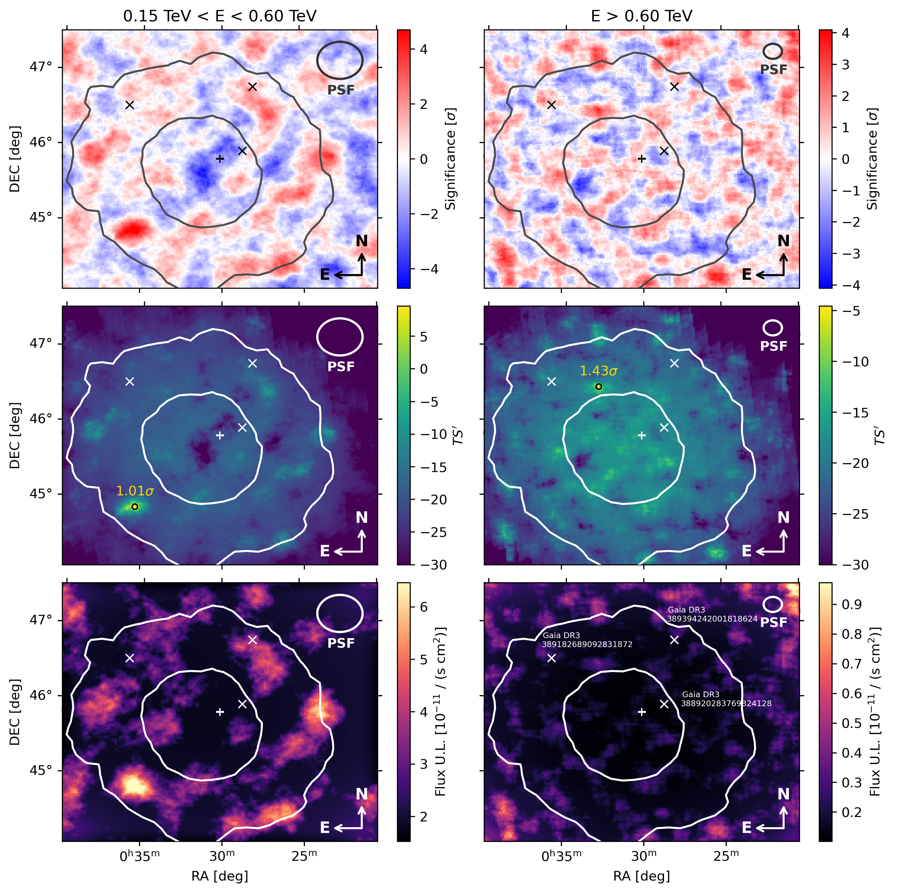
图注：The top row shows the significance sky-maps for GW240615, analysed in both energy ranges. The middle row is showing the $TS'$ maps (eq. \ref{eq:ts'}) and the largest significance point of the interest region (with black circles), superposing the resulting global significance on them. The flux U.L. sky-maps for both energy ranges with \(\SI{95}{\percent}\) CL is shown in the bottom row. The contours show \(\SI{50}{\percent}\) and \(\SI{95}{\percent}\) GW containment region, while the cross corresponds to the Bayestar position, i.e. the direction followed by our observations. The PSF (\(\SI{68}{\percent}\) containment) averaged over the energy range is indicated in the top-right of each panel. The "x" signs represent the position of the 3D coincident AGNs in the catalogue crossmatch (See Sect.\ref{Sec:7}).
对应解读：对应“建议重点查看的图表”中的显著性 skymap、引力波定位覆盖与通量上限图，也对应“关键图表逐图导读”中图2/图3/图5的核心读法。
入选理由：这张图同时给出GW240615的显著性天图、结合GW空间先验后的TS'图、95% CL通量上限天图、50%/95%引力波定位轮廓、Bayestar指向位置、PSF以及候选AGN位置，是判断是否存在局部过量、望远镜覆盖是否落在高概率区域、以及上限如何随天区变化的最核心结果图。它比单纯的上限直方图或仪器状态图更直接支撑非探测结论。
来源与置信度：\(arxiv_source\)；high；\(arxiv_source\) / main.tex:figure[3]
Fig08
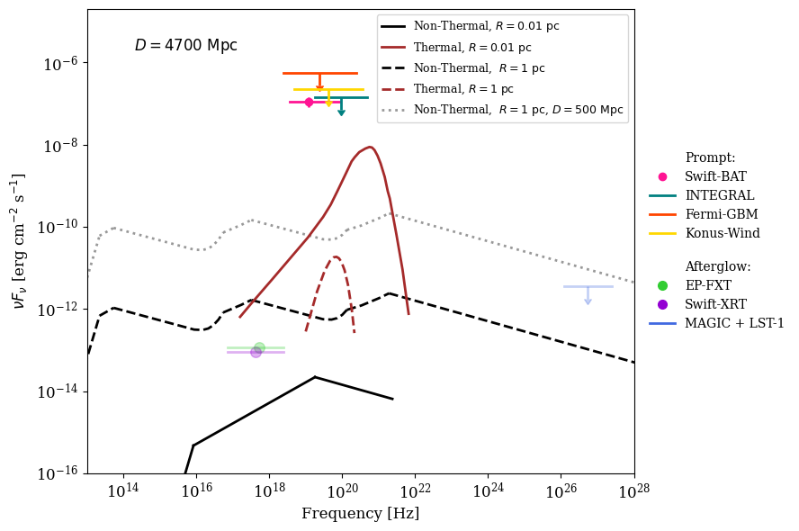
图注：SED of thermal (brown) and non-thermal (black) emission from the post-merger shock in the case of a BBH system with a total mass of $M_{\text{tot}}$\,=\,120\,M$_\odot$ at \(\SI{4174}{\mega\parsec}\) from the observer. The solid lines represent the case with $R=$\(\SI{e-2}{\parsec}\) and $t_\text{duration} =$ \(\SI{30}{\second},\) and the dashed lines the case with $R=$\(\SI{1}{\parsec}\) and $t_\text{duration} =$ \(\SI{e5}{\second}.\) Additionally, we plot the non-thermal emission at \(\SI{500}{\mega\parsec}\) and $R=$\(\SI{1}{\parsec}\) in light dotted black. We show flux points and upper-limits obtained during the prompt-phase (i.e. a few seconds after the GW signal) with \(\textit{Swift}-BAT\) \(\protect\citep{2024GCN.38351....1D},\) \(\textit{INTEGRAL}\) \(\protect\citep{2024GCN.38311....1S},\) \(\textit{Fermi}-GBM\) \(\protect\citep{2024GCN.38316....1S},\) and \(\textit{Konus}-Wind\) \(\protect\citep{2024GCN.38321....1R}.\) For completeness, we also show the X-ray candidate counterpart fluxes reported by EP-FXT \(\protect\citep{2024GCN.38324....1P}\) and \(\textit{Swift}-XRT\) \(\protect\citep{2024GCN.38345....1W}\) during the afterglow (i.e. hours or days after the GW signal), together with our MAGIC+LST-1 deepest upper-limit. Afterglow measurements are displayed with a lighter tone to distinguish them from the prompt observations. This figure was adapted with courtesy from \(\protect\citet{tagawa2023observable}.\)
对应解读：对应“建议重点查看的图表”中的理论模型对比图，以及“关键图表逐图导读”中图5关于通量上限与理论模型、吸收和时间窗口比较的讨论。
入选理由：这张图把GW241125相关的MAGIC+LST-1最深上限与Swift-BAT、INTEGRAL、Fermi-GBM、Konus-Wind、EP-FXT、Swift-XRT等多波段观测和双黑洞并合后激波热/非热模型SED放在一起，是评估TeV非探测对具体电磁辐射模型约束力的关键图。它直接连接日报中关于本征模型、观测窗口、prompt/afterglow区别和宽带谱限制的解读。
来源与置信度：\(arxiv_source\)；high；\(arxiv_source\) / main.tex:figure[8]
Fig05
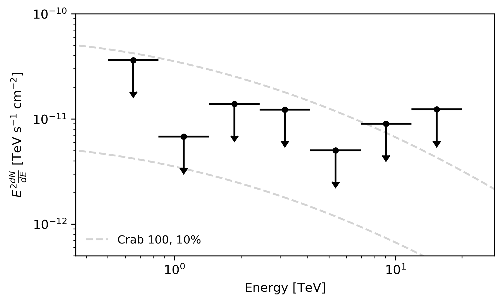
图注：SED calculated for the candidate counterpart position of GW241125. The source was not statistically detected in any of the energy bins. The \(\SI{100}{\percent}\) and \(\SI{10}{\percent}\) MAGIC Crab SED are also plotted for comparison \(\citep{2015JHEAp...5...30A_MAGIC_CrabSpectrum}\)
对应解读：对应“建议重点查看的图表”中的能谱或积分通量上限表/图，以及“关键图表逐图导读”中图5的SED上限读法。
入选理由：这张图给出GW241125候选对应体位置的SED，并明确各能量bin均未显著探测，同时用10%和100% Crab SED作参照，适合展示非探测结果在能量空间中的实际约束强度。它比纯文字上限更便于读者检查能量阈值、分段上限和源亮度尺度。
来源与置信度：\(arxiv_source\)；high；\(arxiv_source\) / main.tex:figure[5]
Fig06
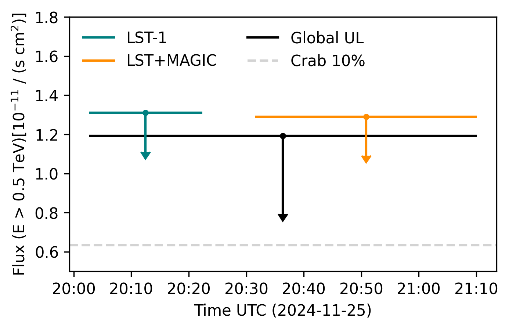
图注：The LC of the observations of GW241125 for energies larger than \(\SI{0.5}{\tera\electronvolt}.\) It has been separated in 3 runs of about \(\SI{20}{\minute},\) where we distinguish between the run that was taken with LST-1 in mono mode and the ones taken in stereo mode with MAGIC+LST, that are shown as a unique limit in the plot. We also show the global U.L. using stacked data.
对应解读：对应“建议重点查看的图表”中的观测时间线、MAGIC-only/LST-1-only与联合分析对比，以及模型拟合段落中关于短时flare可能被全曝光积分稀释的讨论。
入选理由：这张光变曲线按约20分钟run分箱展示GW241125在E>0.5 TeV的上限，并区分LST-1 mono模式与MAGIC+LST立体模式，同时给出stacked全局上限。它能直接支撑日报中关于时间分箱、观测窗口、单台/联合分析差异和瞬变信号稀释风险的解读。
来源与置信度：\(arxiv_source\)；high；\(arxiv_source\) / main.tex:figure[6]
Fig11
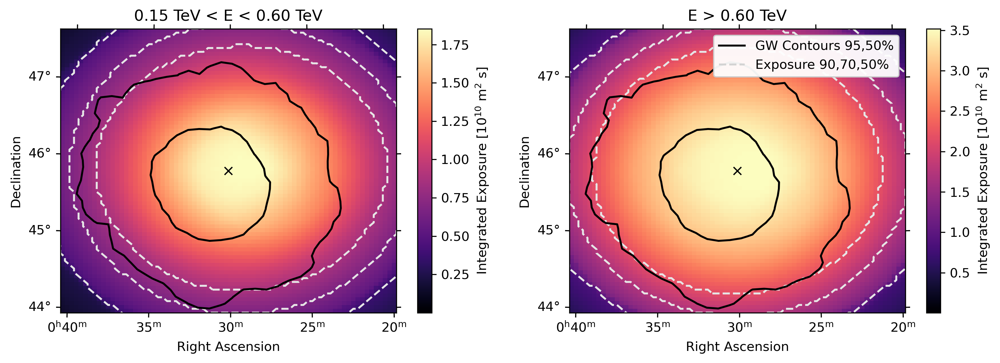
图注：Integrated exposure of observations of GW241125. The exposure is computed for every energy bin of the analysis but here we integrated over all energy bins to get a unique exposure value of each bin. The contours of the \(\SI{50}{\percent}\) and \(\SI{95}{\percent}\) of the GW probability are shown as black solid lines. The 10th, 30th and 50th percentiles of the exposure are superposed in white dotted lines for each case.
对应解读：对应“建议重点查看的图表”中的引力波定位与望远镜指向覆盖图，特别是关于GW241125曝光覆盖概率和视场接受度的讨论。
入选理由：这张图展示GW241125观测的积分曝光，并叠加50%和95%引力波概率轮廓以及曝光百分位等值线，适合判断实际灵敏度是否覆盖GW高概率区域，而不只是几何上扫过定位区。它补充了Fig03对GW240615的覆盖诊断，体现GW241125随访的空间覆盖质量。
来源与置信度：\(arxiv_source\)；high；\(arxiv_source\) / main.tex:figure[11]
Fig04
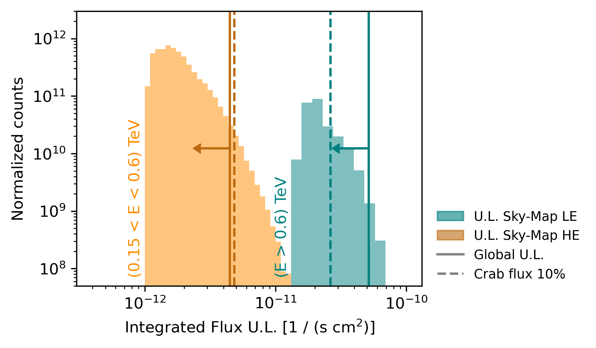
图注：Flux upper limits of GW240615 in the $0.15 < E < 0.6$ TeV (teal) and $ E > 0.6$ TeV (orange) energy ranges are shown. The histograms represent the sky-map U.L.s distribution for all the pixels. Vertical solid lines represent the global U.L., derived from the uncertain source localization method described in Sect.~\(\ref{Subsec:sources-uncertain-loc}.\) Vertical dashed lines represent the \(\SI{10}{\percent}\) of Crab in the corresponding energy range (from \citealt{2015JHEAp...5...30A_MAGIC_CrabSpectrum}).
对应解读：对应“建议重点查看的图表”中的积分通量上限和系统/稳健性检验，也对应“关键图表逐图导读”中关于上限分布、全局上限和不同能段比较的内容。
入选理由：这张图给出GW240615在0.15<E<0.6 TeV和E>0.6 TeV两个能段的通量上限分布、全局上限以及10% Crab参照线，能帮助读者理解上限不是单一数值，而是受源定位不确定性和天区像素响应影响的分布。它是Fig03中上限天图的定量摘要，适合嵌入详细解读。
来源与置信度：\(arxiv_source\)；high；\(arxiv_source\) / main.tex:figure[4]
强相关工作
这篇工作与双黑洞电磁对应体搜索的历史直接相连。最接近的同类问题包括 \(GW150914\) 后 Fermi/GBM 报告的短时伽马候选及其争议、INTEGRAL 对同一事件的约束、Fermi-LAT 对 O1/O2/O3 引力波事件的高能随访、以及 H.E.S.S./MAGIC/VERITAS 对引力波事件的 TeV 随访。建议检索关键词包括 “binary black hole electromagnetic counterpart”, “Fermi GBM GW150914”, “INTEGRAL GW150914”, “IACT gravitational wave follow-up”, “MAGIC LST-1 gravitational wave follow-up”。
从理论上，本文涉及的模型与活动星系核盘内双黑洞并合、残留吸积盘、磁层驱动喷流、Blandford–Znajek 型能量抽取、外部激波和高能粒子加速有关。相反观点是标准孤立双黑洞并合几乎不应产生电磁信号，因此任何候选对应体都必须面对偶然重合率、定位误差和能量预算检验。建议检索关键词包括 “AGN disk binary black hole merger electromagnetic emission”, “charged black hole merger gamma ray”, “BBH merger in gas disk TeV emission”, “gamma-gamma opacity TeV transient”。
本文的两个具体事件 \(GW240615\_113620\) 与 \(GW241125\_010116\) 属于命名引力波候选事件；应优先查找 LIGO-Virgo-KAGRA GraceDB、GCN Circular、Swift/BAT transient notices、Swift/XRT follow-up 和 Einstein Probe/FXT follow-up 中的同事件材料。由于这些事件较新，公开论文可能仍少于通报和会议材料；若无法确认 URL，最好用事件名加 “GCN”、 “Swift BAT”、 “Einstein Probe FXT” 和 “MAGIC LST-1” 检索。
同一事件 / 同类源线索：
相似工作：
基础理论 / 方法工作：
相反观点 / 张力线索：
2. Four, One, and None: Quantifying the Ultra-High-Energy Neutrino Anomaly Across ANITA-IV, KM3NeT, and IceCube
- 来源：arXiv / astro-ph.HE
- 链接：https://arxiv.org/abs/2607.19487v1
- 作者：Dibya S. Chattopadhyay, Carlos A. Argüelles, Vedran Brdar
- 评分：novelty 8/10，importance 8/10，relevance 9/10，final 9.35/10
- 推荐理由：联合 ANITA-IV、KM3NeT 和 IceCube 检验超高能中微子异常，直接涉及高能中微子天文学和探测器间张力，结论对多信使解释有重要影响。
中文题目：“四个、一个、零个”：在 ANITA-IV、KM3NeT 与 IceCube 之间量化超高能中微子异常
做了什么：这篇文章把 ANITA-IV 报告的四个近地平线中微子样事件、KM3NeT 的超高能径迹样事件 KM3-230213A，以及 IceCube 长时间未见对应超高能事件的事实放在同一个统计框架里检验。作者为三个探测器构造了随能量、方向和观测时间变化的半解析有效面积，用弥散全天幂律通量和稀有瞬变源两类假设拟合事件数。核心结论很直接：在标准模型中微子相互作用和传播下，一个普通弥散通量无法同时给出 ANITA-IV 的四个事件、KM3NeT 的一个事件和 IceCube 的零事件；最佳弥散模型仍有约 \(7.5\sigma\) 张力。若把事件解释为刚好在 ANITA-IV 和 KM3NeT 观测窗口、刚好沿观测方向爆发的短时瞬变，张力可被人为压低，但这种解释需要很强的时空微调；若瞬变源在全天随机出现，IceCube 应该额外看到事件，张力仍约为 \(5.9\sigma\)。
为什么重要：它把几个看似孤立的“异常事件”转化为一个跨实验的一致性问题：如果这些事件真是标准模型中微子，为什么 IceCube 没有看到相应数量？这种问题不能只看单个探测器的显著性，而要比较有效面积、曝光时间、方向响应和地球吸收后的联合泊松概率。
理论 / 观测 / 仪器方法价值：本文的方法价值在于给出一个可复用的半解析框架，用来把气球实验、深海 Cherenkov 阵列和南极冰下阵列放在同一事件率语言中比较。对理论而言，它约束了弥散超高能中微子通量和稀有瞬变模型；对观测而言，它指出单个异常事件的解释必须经受 IceCube 空白结果的强约束；对方法而言，它强调时间依赖曝光和方向依赖有效面积不能被粗略平均掉。
为什么应该关注：如果你关注超高能中微子、宇宙线源、瞬变多信使天文学或新物理解释，本文值得看，因为它是在问一个最基本但最难回避的问题：这些候选事件是否能在同一个标准模型天体物理图景下成立？作者的答案基本是否定的，除非接受高度微调的瞬变几何与时序。
展开详细解读：文章讲解、背景、理论、重点章节、图表与相关工作
文章详细讲解
科学问题：ANITA-IV 报告了四个近地平线的中微子样事件，KM3NeT 报告了一个超高能径迹样事件 KM3-230213A，而 IceCube 在约十五年的高能中微子搜索中没有看到与这些事件率相匹配的对应事件。单看每个实验，候选事件可以被描述为“罕见但可能”；但若它们来自同一类标准模型中微子通量，事件率必须同时通过三个探测器的曝光检验。本文的核心科学问题就是：有没有一种弥散或瞬变的超高能中微子源模型，可以让 ANITA-IV 看到四个、KM3NeT 看到一个、IceCube 看到零个而不产生严重统计张力？
作者怎么做：他们构造了三个实验的半解析有效面积 \(A_{\rm eff}(E,\Omega,t)\)，显式保留能量 \(E\)、方向 \(\Omega\) 和时间 \(t\) 依赖。对 ANITA-IV，关键是气球飞行期间随时间变化的几何视场和近地平线响应；对 KM3NeT，关键是 KM3-230213A 所在方向和探测窗口；对 IceCube，关键是长时间、全天近似稳定但有强方向和能量依赖的曝光。然后他们先假设弥散全天幂律通量，允许归一化和谱指数变化，计算三个实验的期望事件数，并用联合泊松似然评估与观测计数 \((4,1,0)\) 的一致性。
关键结果：弥散全天通量失败得很彻底。最佳拟合并不是能同时匹配三者的折中，而是陷入一个矛盾：为了给出 ANITA-IV 和 KM3NeT 的事件数，需要的通量会让 IceCube 看到多个事件；若压低通量以满足 IceCube 的零事件，又会严重低估 ANITA-IV 和 KM3NeT。摘要给出的最佳弥散构型对应约 \(7.5\sigma\) 张力，并预测约五个 IceCube 事件，同时仍显著低估 ANITA-IV 和 KM3NeT 的计数。这说明问题不是简单地调软或调硬谱指数就能解决。
作者还考察了瞬变源假设。若假设短时瞬变源恰好在 ANITA-IV 和 KM3NeT 的观测时间窗口内、恰好沿实际观测方向发生，那么 IceCube 的长期空白结果可以被部分绕开，因为有效曝光不再是十五年全天平均，而是事件发生时刻和方向上的局部曝光。但这本质上是后验调参：源必须出现在极少数有利的时空窗口。若把稀有瞬变作为全天随机分布的族群处理，IceCube 在十五年内会积累更多机会看到同类源。作者用 \(10^5\) 次 Monte Carlo 实现检验这种情况，并指出即使选择能以约 \(10^{-4}\) 概率给 ANITA-IV 产生四个有利瞬变的基准族群，最佳实现仍有约 \(5.9\sigma\) 张力。
局限和下一步：本文是在标准模型中微子传播与相互作用框架内做一致性检验，因此它没有系统展开所有新物理解释，例如异常截面、长寿命粒子、地球穿透的新通道或探测器背景误判模型。半解析有效面积也必然是公开信息与近似响应的折中，不等同于各合作组内部完整模拟。下一步最关键的是三方面：一是获得各实验更完整的方向、能量重建和系统误差公开信息；二是把背景模型与信号模型联合纳入层级贝叶斯框架；三是用未来 IceCube-Gen2、GRAND、RNO-G、POEMMA 或升级后的 KM3NeT 数据检验这种张力是否继续存在。
关键结果是怎么做出来的
本文最重要的证据链从观测计数开始：ANITA-IV 给出四个近地平线中微子样候选，KM3NeT 给出一个超高能径迹样事件 KM3-230213A，IceCube 在对应超高能能段和长时间曝光中没有看到可与这些事件率相容的事件。作者没有把这些数目简单相加，而是分别为每台仪器计算在给定中微子通量下的期望计数 \(\mu_i\)，其中 \(i\) 标记 ANITA-IV、KM3NeT 和 IceCube。观测向量可以概括为 \(n_{\rm ANITA}=4\)、\(n_{\rm KM3NeT}=1\)、\(n_{\rm IC}=0\)，但真正进入似然的是每个事件方向和探测窗口对应的曝光。
样本选择的关键是方向和时间。ANITA-IV 的四个事件位于近地平线区域，这一区域对气球无线电探测很特殊：几何视场、地球弦长、冰面反射和 Askaryan 信号传播都会让响应随时间和方向变化。KM3-230213A 是一个特定方向的超高能径迹样事件，不能用全天平均曝光替代。IceCube 则提供强约束项，因为它的长期曝光覆盖了大量天空和时间，虽然不同赤纬、能量和拓扑下有效面积不同。作者把这些差异压缩进半解析 \(A_{\rm eff}(E,\Omega,t)\)，然后积分得到各实验期望事件数。
弥散通量检验使用全天幂律模型，通常可写成归一化和谱指数两个自由参数。统计量本质上是三个泊松计数似然的乘积，或等价地比较观测计数与模型期望计数之间的似然比。最佳拟合并不能让 \(\mu_{\rm ANITA}\approx4\)、\(\mu_{\rm KM3NeT}\approx1\)、\(\mu_{\rm IC}\approx0\) 同时成立。摘要指出最佳弥散构型仍预测约五个 IceCube 事件，并且还强烈低估 ANITA-IV 和 KM3NeT 的计数；由联合似然换算得到约 \(7.5\sigma\) 的张力。
图表上应重点看三类结果：第一，三个实验的有效面积或曝光随能量和方向的比较图，它决定了“同一通量在谁那里更容易被看到”；第二，幂律通量参数平面上的联合似然或置信区间，特别是 ANITA-IV、KM3NeT 和 IceCube 各自偏好的区域是否重叠；第三，最佳拟合下的预测事件数柱状图或表格，直接显示为什么 IceCube 的零事件是致命约束。如果论文给出显著性分布或 \(p\)-value 映射，应检查 \(7.5\sigma\) 是通过渐近似然比、伪实验还是泊松尾概率换算得到。
瞬变模型的证据链更微妙。作者先考虑最有利的后验情形：源只在 ANITA-IV 和 KM3NeT 的实际观测窗口和方向出现。这样做会显著降低 IceCube 曝光，因为不再允许 IceCube 在十五年内从其他方向、其他时刻积累同类事件。但这不是自然族群模型，而是对已观测事件的强后验定位。于是作者进一步做全天随机瞬变族群的 Monte Carlo，实现数为 \(10^5\)，并用基准族群要求“以约 \(10^{-4}\) 概率产生四个对 ANITA-IV 有利的瞬变”。结果是，即便在这些实现里挑最佳构型，仍有约 \(5.9\sigma\) 张力。
系统误差和稳健性主要来自有效面积近似、能量重建不确定性、方向响应、地球吸收、中微子截面、背景污染以及 ANITA-IV 事件性质本身。本文的结论强度依赖于这些候选事件确实按中微子信号处理；如果其中部分是未建模背景，联合张力会转化为背景识别问题。反过来，如果坚持所有事件都是真实标准模型中微子，IceCube 空白结果的统计权重很难被常规系统误差完全抹掉。
展开背景、理论、公式、模型、章节和图表导读
背景知识
超高能中微子通常指能量达到 \(\mathrm{PeV}\) 到 \(\mathrm{EeV}\) 甚至更高的中微子。它们可能来自宇宙线与背景光子的相互作用、活动星系核喷流、伽马暴、潮汐瓦解事件、星暴星系或更极端的瞬变源。由于中微子电中性、弱相互作用、可跨宇宙学距离传播，它们被认为是追踪强子加速器的关键信使。但正因为相互作用弱，事件率非常低，单个异常事件常常难以解释。
ANITA 是南极上空气球实验，主要通过无线电探测冰中粒子级联产生的 Askaryan 辐射，尤其对超高能中微子敏感。ANITA 历史上曾报告过若干异常上行或近地平线事件，引发过标准模型中微子、反射宇宙线、新物理粒子以及未识别背景等多种解释。ANITA-IV 的四个近地平线中微子样事件延续了这一争议：它们不像普通低能中微子样本那样有大量统计，而是少数事件驱动的异常。
IceCube 是南极冰下千兆吨级 Cherenkov 探测器，对 \(\mathrm{TeV}\) 到 \(\mathrm{PeV}\) 中微子已有稳健探测，并对更高能的宇宙源中微子和 cosmogenic 中微子给出强限制。它的优势是长时间、连续运行和较大有效体积；劣势是不同方向上会受到地球吸收、背景和拓扑识别限制。对于本文问题，IceCube 的关键不是“它是否比 ANITA 对所有方向都更灵敏”，而是它在约十五年累计曝光下不应完全缺席。
KM3NeT 是地中海深海 Cherenkov 中微子望远镜，ARCA 阵列面向高能宇宙中微子。KM3-230213A 作为一个超高能径迹样事件，如果解释为天体中微子，就会对超高能通量提出很强要求。由于它位于北半球海底阵列的视场中，与 IceCube 和 ANITA 的方向响应不同，因此是检验“方向选择效应是否能解释张力”的理想个案。
为什么现在值得重新看？因为多实验超高能中微子数据正在从“单个实验异常”进入“跨实验一致性检验”阶段。单个事件的后验解释空间很大，但一旦加入其他实验的空白结果，允许的通量、源率和方向分布会被大幅压缩。本文正是把 ANITA-IV、KM3NeT 和 IceCube 放入同一事件率框架，量化这种压缩。
该领域常见误区之一是把不同探测器的“没有看到”理解为简单的灵敏度不足。实际情况是，灵敏度强烈依赖能量、方向、时间、事件拓扑和分析选择。另一个误区是用一个事后指定的源方向或爆发时间来解释事件，却没有计入全天、全时域搜索的试验因子。本文对瞬变模型的处理正是在提醒：如果源族群不是只为已知事件量身定做，IceCube 的长期曝光会重新变得非常强。
基础理论 / 方法脉络
基本物理图像是：给定一个中微子通量 \(\Phi_\nu\)，探测器看到的事件数由通量、相互作用概率、探测效率、几何接受度和观测时间共同决定。不同实验的探测介质和信号通道不同，但都可以抽象成有效面积 \(A_{\rm eff}\)。这个量不是单纯的几何面积，而是把中微子穿过地球后的存活概率、在有效体积内相互作用的概率、次级粒子产生可探测信号的概率和分析选择效率合并起来。
对超高能中微子，地球吸收非常重要。中微子-核子截面随能量升高而增大，因此穿越长地球弦长的上行中微子会被显著衰减。近地平线方向很特殊：路径长度较短，存活概率较高，同时几何视场可能较大。ANITA-IV 的近地平线事件之所以引人注意，正是因为它们处在传播和探测选择效应都非常敏感的角度区域。
弥散通量假设通常把全天源群等效为各向同性或近似各向同性的幂律谱，例如通量随能量按 \(E^{-\gamma}\) 变化。若只拟合归一化和谱指数，模型自由度很少，因此跨实验计数矛盾会很明显：硬谱可提高超高能端事件，但也容易触发 IceCube 的高能搜索；软谱可降低最高能端，但又难以解释 ANITA-IV 或 KM3NeT 的极高能候选。
瞬变模型把通量从连续时间背景改为短时爆发。此时事件率不仅依赖总源率和单次爆发能量，还依赖爆发是否落在探测器运行窗口、是否位于高有效面积方向、以及是否有多信使对应体。若事后把源放到已发生事件的方向和时间，模型可以躲开部分约束；但若源在宇宙中按某个率随机出现，长时间运行的 IceCube 会积累大量额外曝光，空白结果仍会限制源率与亮度。
统计上，本文使用的是计数实验的联合似然思想。每个实验在给定模型下有一个期望事件数 \(\mu_i\)，观测到 \(n_i\) 个事件的概率近似服从泊松分布。若还引入事件方向、时间和能量重建，则 \(\mu_i\) 来自对 \(E\)、\(\Omega\)、\(t\) 的响应积分。显著性不是单个实验的局部 \(p\)-value，而是模型在三个实验联合数据上的拟合优度或似然比。
常见退化包括通量归一化与有效面积标定退化、谱指数与能量阈值退化、方向分布与地球吸收退化、瞬变源率与单源亮度退化。系统误差则包括中微子截面外推、冰或水介质光学性质、无线电传播模型、背景误判率、事件能量重建和角分辨率。本文的核心判断是：即便允许方向和时间依赖，这些标准模型内的自由度仍不足以自然消除张力。
公式与推导
第一步，把任意实验 \(i\) 的期望事件数写成通量与有效面积的卷积：
这里 \(\Phi_\nu\) 是到达地球的微分中微子通量，单位可理解为每能量、每面积、每时间、每立体角的粒子数；\(A_{{\rm eff},i}\) 是第 \(i\) 个探测器的有效面积，包含传播、相互作用、触发和选择效率。本文的主要技术工作就是为 ANITA-IV、KM3NeT 和 IceCube 构造可比较的 \(A_{{\rm eff},i}\)。
第二步，弥散全天幂律通量可写为：
其中 \(\Phi_0\) 是在参考能量 \(E_0\) 处的归一化，\(\gamma\) 是谱指数，因子 \(1/(4\pi)\) 表示各向同性全天分布。若通量稳定，时间依赖只剩探测器曝光窗口。本文在弥散情形下主要改变 \(\Phi_0\) 和 \(\gamma\)，检验是否存在共同解释。
第三步，地球吸收可用存活概率近似描述：
其中 \(N_A\) 是阿伏伽德罗常数，\(\sigma_{\nu N}(E)\) 是中微子-核子截面，\(X(\theta)\) 是沿天顶角 \(\theta\) 的柱密度。这个因子解释了为什么超高能上行中微子很难穿过地球，也解释了近地平线方向对 ANITA 和 IceCube 响应的重要性。
第四步，有效面积可示意分解为：
其中 \(A_{\rm geom}\) 是几何接受度，\(P_{\rm int}\) 是在有效体积或目标介质中相互作用并产生可探测次级粒子的概率，\(\epsilon\) 是触发、重建和分析选择效率。不同实验的差异主要体现在这些因子的大小和方向、时间依赖上。
第五步，在给定模型下，三个实验的计数联合似然可写为泊松乘积：
其中 \(n_i\) 是观测计数。本文对应的关键信息是 \(n_{\rm ANITA}=4\)、\(n_{\rm KM3NeT}=1\)、\(n_{\rm IC}=0\)。IceCube 的零事件项贡献为 \(e^{-\mu_{\rm IC}}\)，因此只要模型预测 \(\mu_{\rm IC}\) 达到数个事件，就会受到强烈惩罚。
第六步，模型比较或张力量化常用似然比统计量：
其中 \(\widehat{\Phi}_0\) 和 \(\widehat{\gamma}\) 是最佳拟合参数，\(\mathcal{L}_{\rm sat}\) 是能逐点匹配观测计数的饱和模型似然。若满足渐近条件，可把 \(\Delta TS\) 转换为等效显著性；但在小计数问题中通常需要伪实验或泊松尾概率校准。
第七步，IceCube 零事件约束的直观形式是：
若最佳弥散模型预测 \(\mu_{\rm IC}\simeq5\)，仅 IceCube 零事件概率就是 \(e^{-5}\simeq6.7\times10^{-3}\)。联合张力更强，因为同一个模型还低估 ANITA-IV 和 KM3NeT，即不仅有 IceCube 的过预测问题，还有候选实验的欠预测问题。
第八步，对短时瞬变，通量可写为若干爆发的叠加：
其中 \(F_k(E)\) 是第 \(k\) 个瞬变的能谱流量，\(\Omega_k\) 是方向，\(t_k\) 是爆发时刻，\(W_k\) 是持续时间窗口函数。若 \(W_k\) 只覆盖 ANITA-IV 或 KM3NeT 的观测窗口而避开 IceCube 的有效窗口，张力可降低；但若 \(\Omega_k\) 和 \(t_k\) 随机分布，IceCube 的长期积分会重新产生约束。
第九步，随机瞬变族群的期望事件数可写成源率积分：
其中 \(R(z,L)\) 是随红移 \(z\) 和亮度 \(L\) 的源率函数，\(dV_c/dz\) 是共动体积元，\(1/(1+z)\) 是宇宙学时间膨胀因子，\(F_E\) 是到达地球的能谱流量。本文的 Monte Carlo 瞬变检验本质上是在抽样这类随机源实现，并查看是否能自然得到 \((4,1,0)\)。
第十步，源率与单源亮度的退化可用近似标度表示：
其中 \(N_{\rm det}\) 是探测事件数，\(\mathcal{R}\) 是瞬变发生率，\(\mathcal{E}_\nu\) 是单次爆发的中微子能量输出，\(\langle A_{\rm eff}\rangle\) 是对方向和能量平均后的有效面积，\(T\) 是观测时间。提高 \(\mathcal{R}\) 或 \(\mathcal{E}_\nu\) 可解释 ANITA-IV 或 KM3NeT，但也会提高 IceCube 期望事件数；这正是本文得到持续张力的物理原因。
模型拟合 / 应用方法
弥散模型的拟合量主要是通量归一化 \(\Phi_0\) 和谱指数 \(\gamma\)。给定这两个参数后，作者通过三个实验的 \(A_{\rm eff}(E,\Omega,t)\) 积分得到 \(\mu_{\rm ANITA}\)、\(\mu_{\rm KM3NeT}\) 和 \(\mu_{\rm IC}\)，再用泊松联合似然评估观测计数。拟合的直观目标是让 \(\mu_{\rm ANITA}\) 接近四、\(\mu_{\rm KM3NeT}\) 接近一、\(\mu_{\rm IC}\) 接近零，但两参数幂律模型无法满足这三个方向相互冲突的要求。
参数退化主要表现为 \(\Phi_0\) 与 \(\gamma\) 的折中。较大的 \(\Phi_0\) 会提高所有实验事件数，立刻受到 IceCube 零事件惩罚；较硬的谱，即较小的 \(\gamma\)，可增强最高能端，从而更容易解释 ANITA-IV 或 KM3NeT 的超高能候选，但也会增加 IceCube 高能通道的事件期望；较软的谱可以缓和 IceCube 约束，却会使 ANITA-IV 和 KM3NeT 更难得到足够事件。图上通常会表现为各实验偏好区域几乎不重叠。
瞬变模型中，拟合量从连续通量参数变成源的方向、爆发时刻、持续时间、单源流量或能量输出以及族群发生率。若把这些参数完全后验地放在观测事件处，模型自由度极大，拟合优度会虚高。因此本文区分了“定向定时的有利瞬变”和“全天随机分布的稀有瞬变”。后者才接近物理源族群，因为它会自动包含未触发 ANITA-IV 但可能触发 IceCube 的其他源。
似然或后验诊断应重点看残差，而不仅是最佳参数。对计数数据，残差可理解为 \(n_i-\mu_i\) 或泊松 deviance 贡献。本文最重要的残差模式是：最佳弥散模型对 IceCube 过预测，对 ANITA-IV 和 KM3NeT 欠预测。这种双向残差说明模型形状不对，而不是单纯归一化偏高或偏低。
系统误差处理方面，最敏感的是有效面积的半解析近似。若 ANITA-IV 的真实背景率高于假设，四个事件不应全部作为信号进入似然，张力会减小；若 KM3-230213A 的能量或拓扑解释变化，也会改变所需通量；若 IceCube 在相关方向和能区的有效面积有未计入的保守修正，零事件约束会略变。但要把 \(7.5\sigma\) 或 \(5.9\sigma\) 级别张力完全消除，通常需要比常规系统误差更激进的改变。
实际应用上，这类拟合框架可推广到未来超高能中微子设施。任何声称发现 \(\mathrm{EeV}\) 中微子候选的实验，都可以把事件放进类似联合似然，问同一通量在 IceCube、KM3NeT、ANITA、RNO-G、GRAND 或 POEMMA 中应产生多少事件。它也适合做源模型排除：给定一个潮汐瓦解事件、伽马暴或活动星系核族群模型，计算多实验联合事件率比只给单实验灵敏度曲线更有判别力。
重点章节 / 结果段落怎么读
数据和事件定义部分应先读。读者需要确认 ANITA-IV 四个近地平线中微子样事件、KM3-230213A 和 IceCube 零事件分别如何进入分析：是作为固定计数、带方向信息的事件，还是还包含能量重建区间。这里决定了后面似然中 \(n_i\) 和 \(A_{{\rm eff},i}\) 的含义。
有效面积构造部分是方法核心。重点看作者如何从公开响应、几何接受度、地球吸收和时间窗口构造 ANITA-IV、KM3NeT 与 IceCube 的半解析 \(A_{\rm eff}\)。不要只看最终曲线高低，还要看它们在哪些能量和方向上交叉，因为跨实验张力正来自这些响应差异。
弥散幂律通量结果部分是第一主结论。应关注 \(\Phi_0\)-\(\gamma\) 参数平面、最佳拟合事件数和显著性换算。关键问题是：是否存在任一区域让三个实验的置信区间重叠？摘要给出的答案是否定的，最佳构型仍有约 \(7.5\sigma\) 张力。
瞬变源部分是第二主结论。读者应区分两个层次：一个是极端有利的定向定时瞬变，另一个是全天随机稀有瞬变族群。前者说明“数学上可以减少 IceCube 曝光”，后者说明“物理上很不自然”。Monte Carlo 实现数 \(10^5\)、基准概率约 \(10^{-4}\) 和最佳实现仍有约 \(5.9\sigma\) 张力，是这一节最该抓住的数字。
讨论和稳健性部分应检查作者如何评价标准模型内解释与新物理或背景解释的边界。本文结论并不是证明这些候选事件一定不真实，而是证明若它们都是真实标准模型中微子，且来自自然的弥散或随机瞬变族群，就与 IceCube 空白结果严重不相容。
建议重点查看的图表
-
三个实验的有效面积或曝光曲线：看横轴能量 \(E\)，纵轴 \(A_{\rm eff}\) 或曝光，按方向或赤纬分组；关键是 ANITA-IV、KM3NeT 和 IceCube 在候选事件相关能区的相对大小。
-
方向依赖响应图：看天顶角、赤纬或近地平线角度上的接受度变化；重点检查近地平线附近是否存在足以增强 ANITA-IV 而不增强 IceCube 的窗口。
-
弥散幂律参数平面：看 \(\Phi_0\) 与 \(\gamma\) 的置信区间、最佳点和排除区；关键是三实验偏好区是否重叠，以及 IceCube 零事件如何切掉高通量区域。
-
最佳拟合事件数表或柱状图：看模型预测的 \(\mu_{\rm ANITA}\)、\(\mu_{\rm KM3NeT}\)、\(\mu_{\rm IC}\) 与观测 \(4,1,0\) 的差异；这是理解 \(7.5\sigma\) 张力最直观的诊断。
-
瞬变时间窗口或曝光示意图：看 ANITA-IV 和 KM3NeT 的观测窗口与 IceCube 长期曝光如何比较；重点是后验定时如何降低约束，以及随机定时为何又恢复 IceCube 约束。
-
Monte Carlo 瞬变族群结果：看 \(10^5\) 次实现中的张力分布、最佳实现位置和 \(5.9\sigma\) 标记；注意不要把“挑到最佳实现”误读为典型情况。
-
系统误差或稳健性检验表：看改变有效面积、谱指数范围、源持续时间或方向分布后显著性是否大幅下降；若变化有限，说明结论主要由计数矛盾驱动。
关键图表逐图导读
图 1：若论文首先展示事件方向或探测器几何，横轴和纵轴可能是赤经、赤纬、天顶角或地平线角。数据点应标出 ANITA-IV 四个近地平线事件和 KM3-230213A 的方向。读图时要看这些点是否落在各实验高接受度区域，而不是只看它们是否“靠近地平线”。陷阱是把投影图上的视觉接近误当成相同地球弦长或相同曝光。
图 2：有效面积或曝光随能量变化图通常是本文方法的骨架。横轴为 \(E\)，纵轴为 \(A_{\rm eff}\) 或 \(A_{\rm eff}T\)，不同颜色代表 ANITA-IV、KM3NeT 和 IceCube，可能还按方向分面。主要结论应是：同一超高能通量若足以产生 ANITA-IV 和 KM3NeT 事件，通常也会在 IceCube 产生非零甚至多个事件。读图陷阱是忽略时间曝光，尤其 ANITA-IV 的飞行时间远短于 IceCube。
图 3：弥散幂律拟合图的横轴一般是谱指数 \(\gamma\)，纵轴是归一化 \(\Phi_0\) 或等效能量通量。模型线或置信区间显示各实验单独偏好的区域，联合最佳点可能位于折中位置。关键应看 IceCube 的上限如何与 ANITA-IV 和 KM3NeT 的事件率需求冲突。读图陷阱是只看最佳点而不看不同实验对似然的贡献。
图 4：预测事件数柱状图或表格最适合快速理解结果。横轴为探测器，纵轴为期望事件数 \(\mu_i\)，观测值可用点或水平线标出。若最佳模型给出 \(\mu_{\rm IC}\simeq5\) 而观测 \(n_{\rm IC}=0\)，同时 \(\mu_{\rm ANITA}\) 和 \(\mu_{\rm KM3NeT}\) 又低于观测，就说明张力不是一个单边异常，而是联合拟合形状失败。
图 5：瞬变模型图可能展示爆发时刻、持续时间和探测器曝光窗口。横轴为时间，纵轴为相对曝光或有效面积，阴影区标出 ANITA-IV 和 KM3NeT 的有利窗口。主要结论是后验选择的短时源可以躲开部分 IceCube 曝光。读图陷阱是忘记这种源时序是按已知事件反推的，不能直接代表自然源族群。
图 6：Monte Carlo 族群模拟图可能以直方图或累计分布展示随机瞬变实现的张力。横轴可为等效显著性或 \(-2\Delta\ln\mathcal{L}\)，纵轴为实现数或概率。应检查最佳实现相对于总体分布的位置，以及 \(5.9\sigma\) 是否已经是从 \(10^5\) 个实现中挑出的最有利情况。陷阱是把最佳实现当作典型实现，从而低估随机源模型的困难。
论文原图 / 可嵌入图片
Fig05
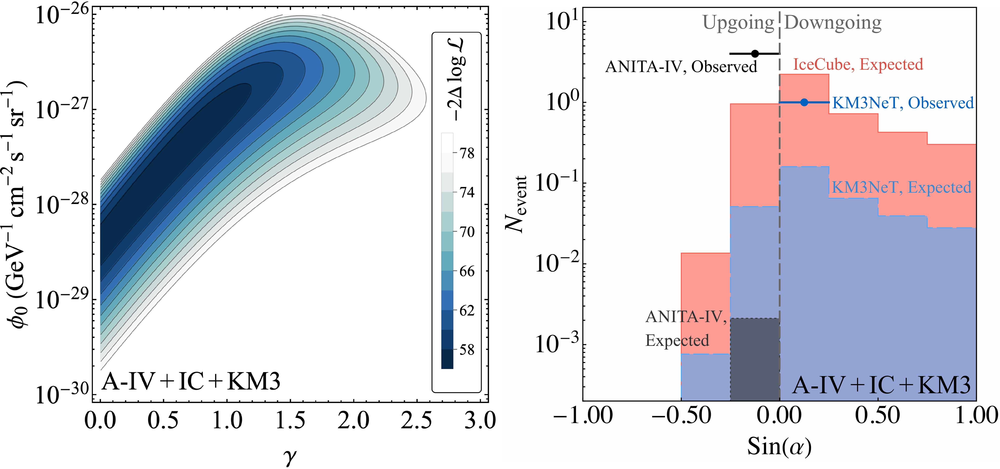
图注：Left panel: Joint Poisson deviance for the diffuse all-sky flux hypothesis as a function of the spectral index $\gamma$ and flux normalization $\phi_0$, comparing the expected event counts against the observed event counts $(n_{\rm A-IV},n_{\rm IC},n_{\rm KM3})=(4,0,1)$. Right panel: Angular distributions of the expected ANITA-IV, IceCube, and KM3NeT event counts at the joint best-fit point for an $E_\nu^{-2}$ neutrino energy spectrum ($\phi_0\approx 2.4\times 10^{-27}~{\rm GeV}^{-1}{\rm cm}^{-2}{\rm s}^{-1}{\rm sr}^{-1}$). The horizontal black and blue markers indicate the number of observed ANITA-IV and KM3NeT events, respectively. The vertical dashed line separates upgoing and downgoing trajectories. The best-fit diffuse flux scenario predicts $\sim5$ IceCube events and a substantially smaller number of expected events for ANITA-IV and KM3NeT (ARCA-21).
对应解读：对应“弥散幂律参数平面”“最佳拟合事件数表或柱状图”以及模型拟合段落中关于 \(\Phi_0\)、\(\gamma\)、泊松 deviance 和 \(\mu_{\rm IC}\sim5\) 的讨论。
入选理由：这是最核心的联合拟合诊断图：左图直接给出弥散全天幂律通量在谱指数和归一化平面上的泊松 deviance，右图展示联合最佳点下三个实验随角度分布的期望事件数，并明确体现 IceCube 预期约 5 个事件、ANITA-IV 和 KM3NeT 又被低估的双向残差。它同时支撑日报中参数退化、IceCube 零事件切掉高通量区域、以及 7.5σ 张力来源的解读。
来源与置信度：\(arxiv_source\)；high；\(arxiv_source\) / \(four_one_and_none.tex\):figure[5]
Fig01
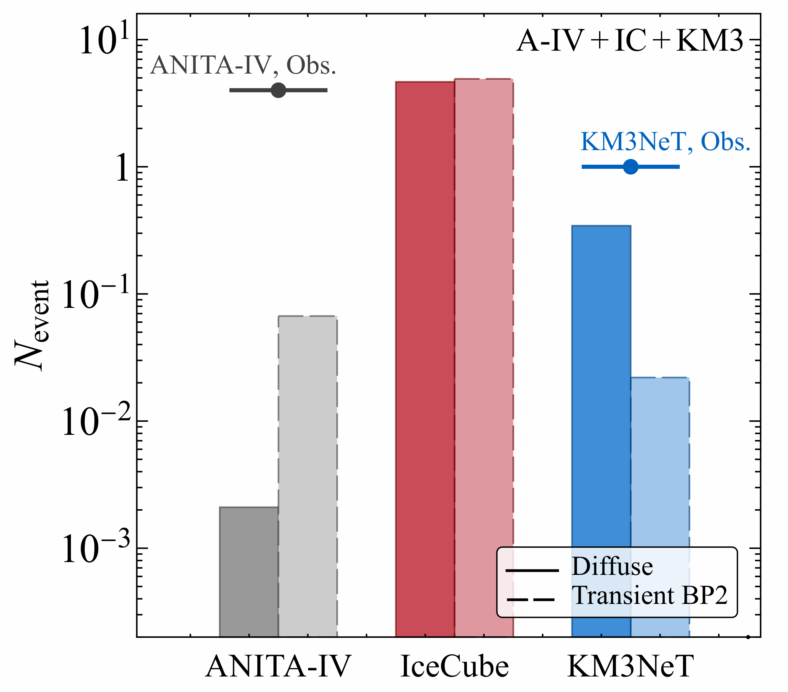
图注：Best-fit expected event numbers at ANITA-IV (gray), IceCube (red), and KM3NeT (blue) for the diffuse-flux scenario and for the transient benchmark (BP2), corresponding to 185 transient sources with 10-day duration each, randomly distributed over 5400 days of IceCube runtime. Solid histogram boundaries with darker shading show the diffuse result, while dashed boundaries with lighter shading represent the result for the transient benchmark BP2. The best-fit expectation values are obtained for an $E_\nu^{-2}$ neutrino spectrum. The solid gray and blue markers indicate the observed event counts, with four events at ANITA-IV, one at KM3NeT, and none at IceCube. In both diffuse and transient scenarios, fitting the ANITA-IV and KM3NeT observations leads to a substantial expected event yield at IceCube, while the expected ANITA-IV and KM3NeT event counts remain well below their observed values.
对应解读：对应“最佳拟合事件数表或柱状图”和关键图表导读中图 4 的说明，即比较 \(\mu_{\rm ANITA}\)、\(\mu_{\rm KM3NeT}\)、\(\mu_{\rm IC}\) 与观测计数 \((4,1,0)\)。
入选理由：这张图最直观地把弥散模型和瞬变 benchmark BP2 的最佳拟合期望事件数与观测值放在一起，能一眼看出模型在 IceCube 产生大量期望事件、同时仍不能解释 ANITA-IV 四个和 KM3NeT 一个事件。它比单纯响应曲线更适合支撑日报的核心结论：张力来自多实验计数无法同时满足。
来源与置信度：\(arxiv_source\)；high；\(arxiv_source\) / \(four_one_and_none.tex\):figure[1]
Fig10

图注：Effective area for track-like $\nu_\mu$ and $\nu_\tau$ events at IceCube (left) and KM3NeT in its ARCA-21 configuration (middle), and $\nu_\tau$ effective area for ANITA-IV (right), as a function of elevation angle $\theta$ and energy of the incoming neutrino $E_\nu$.
对应解读：对应“ 三个实验的有效面积或曝光曲线”和“方向依赖响应图”，以及关键图表导读中关于有效面积随能量和近地平线角度变化的部分。
入选理由：该图直接给出 IceCube、KM3NeT ARCA-21 和 ANITA-IV 的有效面积随入射中微子能量与 elevation angle 的二维依赖，是理解半解析 \(A_{\rm eff}(E,\Omega,t)\) 构造和三实验相对灵敏度的基础。它能检验近地平线窗口是否真的能增强 ANITA-IV 而不增强 IceCube，是日报中方法骨架部分最需要嵌入的响应图。
来源与置信度：\(arxiv_source\)；high；\(arxiv_source\) / \(four_one_and_none.tex\):figure[10]
Fig02
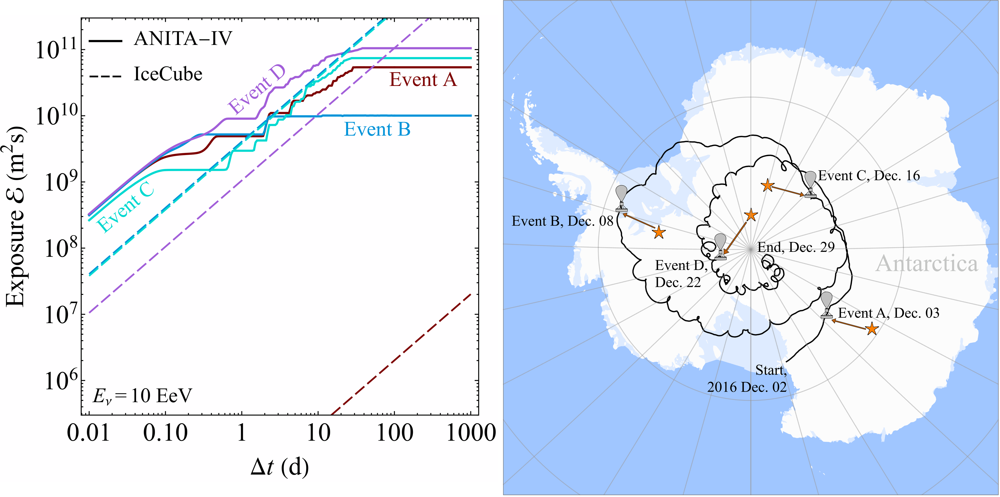
图注：Left panel: Exposure of ANITA-IV (solid curves) and IceCube (dashed curves) for $E_\nu=10~{\rm EeV}$ toward the directions of the four anomalous ANITA-IV events, as a function of the transient duration. Right panel: ANITA-IV flight trajectory during its approximately $27$-day flight in December 2016~\(\cite{ANITA:2019wyx,ANITA:2019xbi}.\) The payload positions at the four event times are labeled, while the orange stars indicate the corresponding apparent source directions.
对应解读：对应“瞬变时间窗口或曝光示意图”和关键图表导读中关于 ANITA-IV 飞行窗口、事件方向以及 IceCube 长期曝光比较的说明。
入选理由：左图比较了 ANITA-IV 与 IceCube 在四个 ANITA-IV 事件方向上随瞬变持续时间变化的曝光，右图标出 ANITA-IV 飞行轨迹、事件时刻和表观源方向。它直接支持日报中‘后验选在有利时空窗口可以暂时缓和 IceCube 约束，但高度微调’的解释。
来源与置信度：\(arxiv_source\)；high；\(arxiv_source\) / \(four_one_and_none.tex\):figure[2]
Fig06
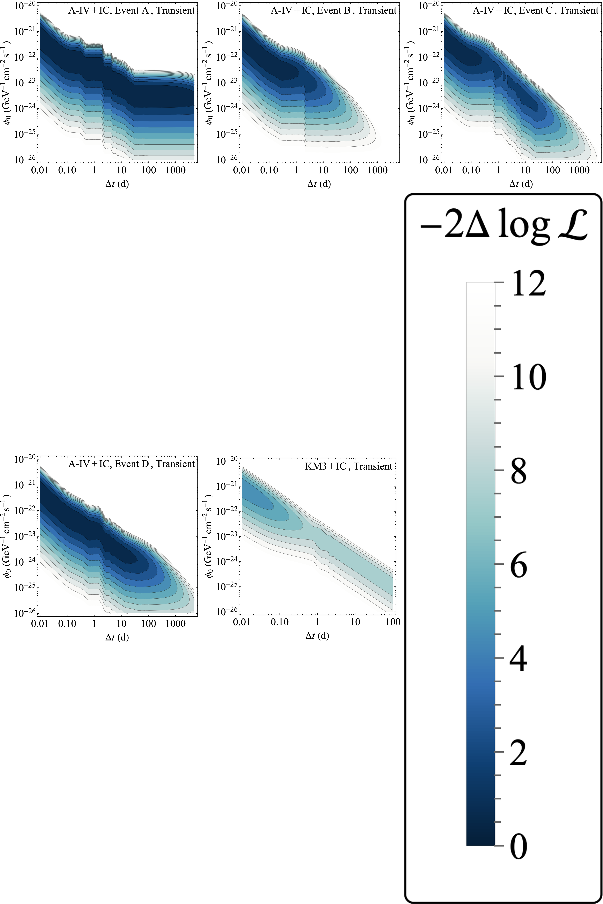
图注：Poisson deviances for separate transient sources placed at the directions and times of ANITA-IV Events A, B, C, and D (top panels and the bottom left panel) and the KM3NeT event KM3-230213A (bottom middle), as a function of the transient duration $\Delta t$ and flux normalization $\phi_0$, for a fixed $E_\nu^{-2}$ spectrum. The transient duration is centered around the exact time when the events were observed at ANITA-IV and KM3NeT (ARCA-21). Each panel assumes one observed event at ANITA-IV/KM3NeT and zero events at IceCube.
对应解读：对应瞬变模型拟合段落中源持续时间 \(\Delta t\)、通量归一化 \(\phi_0\) 与泊松 deviance 的诊断，也对应“瞬变时间窗口或曝光示意图”的模型拟合版本。
入选理由：这张图把五个候选事件分别作为定向定时瞬变源，展示 \(\Delta t\)–\(\phi_0\) 平面上的 deviance，能说明短时、定向、定时瞬变为何在形式上比弥散模型更容易降低张力。它比单纯时间响应图更贴近模型拟合和似然诊断。
来源与置信度：\(arxiv_source\)；high；\(arxiv_source\) / \(four_one_and_none.tex\):figure[6]
Fig08

图注：Probability that at least four distinct transient sources overlap the optimal ANITA-IV elevation band, $-10^\circ<\theta<-5^\circ$, during the $\sim26.6$~days of ANITA-IV runtime, as a function of the transient duration and the total number of transient sources over $5400$ days. The three benchmark points, denoted by white stars, satisfy $P_{\rm A-IV}(N_{\rm S}\geq 4) \approx 10^{-4}$.
对应解读：对应“Monte Carlo 瞬变族群结果”和详细解读中关于全天随机稀有瞬变、ANITA-IV 获得四个有利瞬变概率约 \(10^{-4}\) 的 benchmark 设定。
入选理由：虽然它不是最终 \(10^5\) 次实现的张力分布图，但它给出了随机瞬变族群中至少四个源落入 ANITA-IV 最优 elevation band 的概率，并标出三个 benchmark 点，是理解后续 BP 族群模拟和‘有利实现本身已很罕见’的关键前置图。
来源与置信度：\(arxiv_source\)；high；\(arxiv_source\) / \(four_one_and_none.tex\):figure[8]
强相关工作
这篇工作与 ANITA 异常事件、IceCube 超高能中微子上限、KM3NeT 高能候选事件以及 cosmogenic 中微子理论预言直接相关。应把它放在“同一类异常事件的跨实验一致性检验”中阅读，而不是单独作为 ANITA 或 KM3NeT 事件论文的注脚。检索关键词可用：ANITA anomalous events, ANITA-IV near-horizon neutrino-like events, KM3-230213A, IceCube extremely high energy neutrino search, cosmogenic neutrino limits, multi-detector neutrino exposure。
相反观点或替代解释包括：ANITA 事件可能是未识别的空气簇射或冰面/仪器背景；KM3-230213A 可能需要更复杂的能量和拓扑解释；或者这些事件可能暗示标准模型外传播或相互作用，例如长寿命弱相互作用粒子、异常中微子截面、暗物质衰变或地球穿透新通道。本文没有证明这些新物理成立，而是把标准模型天体中微子解释压到很窄空间。进一步检索可用：beyond Standard Model explanations ANITA, sterile neutrino ANITA, tau lepton emergence ANITA, IceCube ANITA tension。
同类和基础文献方面，读者应查 ANITA 合作组关于异常上行事件和超高能中微子限制的论文，IceCube 关于极高能中微子和 cosmogenic 通量限制的论文，以及 KM3NeT 关于 KM3-230213A 的官方报告或同行评议论文。由于 KM3-230213A 是命名事件，应特别区分 same-event 论文、same-class 超高能中微子候选论文、以及 cosmogenic neutrino review 或 detector sensitivity paper。
同一事件 / 同类源线索：
相似工作：
基础理论 / 方法工作：
相反观点 / 张力线索：
（未提供）
3. Probing the High-Energy Emission of the VHE-emitting Changing-Look Blazar B2 1420+32
- 来源：arXiv / astro-ph.HE
- 链接：https://arxiv.org/abs/2607.20375v1
- 作者：Anjum Peer, Zahir Shah, Sikandar Akbar, Bari Maqbool, Ranjeev Misra
- 评分：novelty 6/10，importance 7/10，relevance 10/10，final 8.75/10
- 推荐理由：Fermi-LAT/Swift 多波段研究 VHE 发射 changing-look blazar，涉及 GeV 伽马射线、VHE 发射和 SSC+EC 物理建模，直接相关且值得关注。
中文题目：探测甚高能变脸耀变体 B2 1420+32 的高能辐射
做了什么：这篇文章用 2019–2024 年左右的 \(Fermi\)-LAT、\(Swift\)-XRT 和 \(Swift\)-UVOT 数据，对甚高能伽马射线耀变体 B2 1420+32 做了多波段时变和谱能量分布分析。源在 \(\mathrm{MJD}\,60488\) 附近达到 \(0.1\)--\(300\,\mathrm{GeV}\) 光子流量峰值 \((4.62\pm0.29)\times10^{-6}\,\mathrm{ph\,cm^{-2}\,s^{-1}}\)，约为 \(4\mathrm{FGL}\text{-}\mathrm{DR4}\) 平均值的 \(60\) 倍，同时伽马射线谱变硬到光子指数 \(2.19\pm0.14\)。作者把活动划分为五个状态，比较了 \(\mathrm{SSC}\)、\(\mathrm{EC}\) 和 \(\mathrm{SSC}+\mathrm{EC}\) 对 X 射线到伽马射线高能峰的解释，结论是单独 \(\mathrm{SSC}\) 或单独 \(\mathrm{EC}\) 要么参数不自然、要么不能再现甚高能辐射，而含有红外尘埃环种子光子的 \(\mathrm{SSC}+\mathrm{EC}\) 更自洽。
为什么重要：B2 1420+32 是一个“变脸”耀变体：其观测性质在类似平谱射电类星体和 BL Lac 天体之间游走，又能发出甚高能伽马射线。这类源直接触碰两个问题：一是喷流辐射区究竟在宽线区内、宽线区外还是尘埃环附近；二是外部光子场是否会通过 \(\gamma\gamma\) 吸收抑制 \(\mathrm{VHE}\) 光子。本文的重要性在于，它不是只报告一次耀发，而是把长期时变、跨波段相关、X 射线谱曲率和多状态 \(\mathrm{SED}\) 拟合合在一起，给出辐射机制和喷流参数随活动状态变化的约束。
理论 / 观测 / 仪器方法价值：对理论而言，本文支持一种混合高能辐射图像：同步自康普顿负责一部分高能辐射，外康普顿成分需要红外尘埃环温度约 \(10^{3}\,\mathrm{K}\) 的种子光子，而不是单一成分支配全部 X 射线到 \(\mathrm{VHE}\) 波段。对观测而言，文章强调了伽马射线与光学/紫外强相关、与 X 射线中等相关，以及 X 射线负曲率可作为同步尾部到逆康普顿起始段过渡的诊断。对方法而言，它展示了如何把光变曲线、分数变率、离散相关函数、X 射线曲谱和分状态 \(\mathrm{SED}\) 拟合联动起来，而不只依赖某一次耀发的单波段结论。
为什么应该关注：如果你关心耀变体喷流的能量耗散位置、\(\mathrm{VHE}\) 逃逸条件、外部光子场来源，或者变脸耀变体如何连接 \(\mathrm{FSRQ}\) 与 \(\mathrm{BL\ Lac}\) 两类对象，这篇都值得看。它给出的关键信息是：B2 1420+32 的高能峰很难由单一区域、单一康普顿机制简单解释；亮态主要需要更大的体洛伦兹因子和更高喷流功率，而磁场只作温和变化。这对未来 \(\mathrm{CTA}\)、\(Fermi\)-LAT 长期监测和同步多波段触发观测都有直接参考价值。
展开详细解读：文章讲解、背景、理论、重点章节、图表与相关工作
文章详细讲解
科学问题：B2 1420+32 的核心难点不是“它会不会变亮”，而是“它为什么能在变脸光谱状态下产生强 GeV 乃至甚高能辐射”。如果它像典型平谱射电类星体一样有强宽线区，那么 \(\mathrm{VHE}\) 光子在宽线区内很容易被紫外线光子通过 \(\gamma\gamma\) 作用吸收；如果它更像 BL Lac 天体，则外部光子场弱，单纯 \(\mathrm{SSC}\) 可能可行，但又要解释强烈的 GeV 耀发和多波段相关。本文试图回答高能辐射是主要来自同步自康普顿、外康普顿，还是两者混合，并进一步判断外部种子光子更接近宽线区还是红外尘埃环。
作者怎么做：文章选取 \(\mathrm{MJD}\,58818\)--\(60721\) 的 \(Fermi\)-LAT、\(Swift\)-XRT 和 \(Swift\)-UVOT 数据，构建伽马射线、X 射线、光学/紫外光变曲线和能谱。伽马射线使用 \(0.1\)--\(300\,\mathrm{GeV}\) 波段的流量与光子指数，X 射线用幂律和对数抛物线等模型比较谱形，光学/紫外用 \(UVOT\) 多滤光片测光追踪低能峰变化。作者还计算分数变率和跨波段相关，把源划分为五个活动状态，并分别建立宽带 \(\mathrm{SED}\) 的高能成分模型。
关键结果：最大耀发出现在 \(\mathrm{MJD}\,60488\) 附近，\(0.1\)--\(300\,\mathrm{GeV}\) 光子流量达到 \((4.62\pm0.29)\times10^{-6}\,\mathrm{ph\,cm^{-2}\,s^{-1}}\)，约为 \(4\mathrm{FGL}\text{-}\mathrm{DR4}\) 长期平均的 \(60\) 倍，且光子指数硬化到 \(2.19\pm0.14\)。不过，整体流量和指数关系只给出弱的“越亮越硬”证据，说明单一的粒子注入硬化并不能完全概括演化。分数变率在伽马射线最大，在光学/紫外也显著，在 X 射线较小；伽马射线与光学/紫外强相关，而伽马射线与 X 射线只中等相关。X 射线谱更偏好对数抛物线，且五个状态中四个出现负曲率，作者解释为 X 射线带正好跨过同步辐射高能尾和逆康普顿低能端之间的过渡。
对 \(\mathrm{SED}\) 拟合而言，单独 \(\mathrm{SSC}\) 难以同时给出 GeV 到 \(\mathrm{VHE}\) 辐射并保持合理磁场、电子能量密度和多普勒因子；单独 \(\mathrm{EC}\) 则在某些状态下不能自然再现 X 射线形状或 \(\mathrm{VHE}\) 端。混合 \(\mathrm{SSC}+\mathrm{EC}\) 给出最自洽图像，外部种子光子温度约 \(10^{3}\,\mathrm{K}\)，指向红外尘埃环而非典型宽线区紫外场。亮态需要更大的体洛伦兹因子和更高喷流功率，而磁场只温和变化，说明流量变化主要由多普勒增强和喷流能量预算共同驱动。
局限和下一步：这类一团区 \(\mathrm{SED}\) 模型存在强退化，电子分布、发射区大小、多普勒因子、磁场、外部辐射能量密度之间可以相互补偿。文章基于非完全同时的多波段数据构建分状态 \(\mathrm{SED}\)，这会给快速耀变源引入时间混合误差。未来更关键的是获得真正同时的光学偏振、X 射线高信噪谱、TeV 光谱和快速时间分辨光变，并把 \(\gamma\gamma\) 吸收、外部光子场几何和多区喷流结构纳入统一拟合。
关键结果是怎么做出来的
本文最核心的证据链从样本和时间段开始。作者使用 \(\mathrm{MJD}\,58818\)--\(60721\) 的长期数据，伽马射线来自 \(Fermi\)-LAT 的 \(0.1\)--\(300\,\mathrm{GeV}\) 事件，X 射线和光学/紫外来自 \(Swift\)-XRT 与 \(Swift\)-UVOT。时间覆盖约五年，足以包含低态、过渡态和强耀发态。文章根据多波段光变把源分成五个活动状态，这一步很重要，因为如果把所有状态混在一个平均 \(\mathrm{SED}\) 里，会把真实的谱形演化抹平，导致对辐射机制的误判。
显著的观测事实是伽马射线峰值非常高：在 \(\mathrm{MJD}\,60488\) 附近，\(0.1\)--\(300\,\mathrm{GeV}\) 光子流量为 \((4.62\pm0.29)\times10^{-6}\,\mathrm{ph\,cm^{-2}\,s^{-1}}\)，约为 \(4\mathrm{FGL}\text{-}\mathrm{DR4}\) 平均流量的 \(60\) 倍。光子指数同时变为 \(2.19\pm0.14\)，比通常软谱耀变体在 GeV 能段的低态更硬。作者检查流量与光子指数的关系，得到的只是弱的全局“越亮越硬”趋势；也就是说，峰值时变硬是真实现象，但不能简单外推为整个监测期都由同一种硬化规律控制。
跨波段时变诊断进一步约束了辐射区。分数变率显示 \(\gamma\) 射线变化最剧烈，光学/紫外次之，X 射线较低。强 \(\gamma\) 射线--光学/紫外相关说明产生 GeV 辐射的电子群与产生同步辐射低能峰的电子群关系紧密，至少在主耀发阶段共享同一喷流扰动或相近空间区域。\(\gamma\) 射线--X 射线相关只有中等强度，则提示 X 射线不是单纯的同一个逆康普顿分量线性响应，而可能包含同步尾部与逆康普顿起始段的混合，或来自不同电子能段、不同冷却时间尺度的叠加。
X 射线谱形是本文支持混合图像的关键。作者比较幂律与对数抛物线模型，发现 X 射线谱整体更适合对数抛物线；五个状态中四个有负曲率。负曲率在 \(\nu F_{\nu}\) 或光子谱表述中意味着谱形不是简单向下弯曲的单一非热尾部，而更像两个成分在 X 射线带交接：低能侧为同步辐射高能尾，高能侧为逆康普顿成分开始抬升。读者应重点看 X 射线谱拟合残差、曲率参数误差条，以及不同活动状态的曲率是否稳定。
模型比较方面，文章不是只给出一个最佳拟合，而是分别尝试 \(\mathrm{SSC}\)、\(\mathrm{EC}\)、\(\mathrm{SSC}+\mathrm{EC}\)。\(\mathrm{SSC}\) 单独模型的问题通常表现为：为了把同步光子自散射到 GeV 和 \(\mathrm{VHE}\) 区，需要极端电子能量密度、过低磁场或过高多普勒因子，并可能偏离近能量均分。\(\mathrm{EC}\) 单独模型虽然容易制造高的 GeV 光度，但不一定能同时匹配 X 射线过渡谱形和 \(\mathrm{VHE}\) 端。混合模型用红外温度约 \(10^{3}\,\mathrm{K}\) 的外部种子光子缓解了这些矛盾，同时避免宽线区紫外光子场造成过强 \(\gamma\gamma\) 吸收。
稳健性方面，最需要关注的是系统误差和退化：\(Fermi\)-LAT 的源模型背景、时间分箱、低显著性时间 bin 的处理会影响光变和相关性；\(Swift\)-UVOT 的宿主星系、银河消光和非同时性会影响同步峰；XRT 谱曲率可能受低计数统计和吸收柱密度假设影响；\(\mathrm{SED}\) 拟合中 \(B\)、\(\delta\)、发射区半径、电子谱折断能量和外部场能量密度高度相关。本文结论的可信度主要来自多个诊断一致指向“混合康普顿加红外外场”，而不是来自某一个参数的唯一拟合值。
展开背景、理论、公式、模型、章节和图表导读
背景知识
耀变体是相对论喷流几乎指向观测者的活动星系核。由于多普勒增强，喷流中的非热辐射可以在射电到伽马射线全波段占主导，并显示从小时到年尺度的强烈变化。传统上，耀变体分为平谱射电类星体和 BL Lac 天体：前者有强发射线和明显外部光子场，后者发射线弱，喷流连续谱更压倒宿主和宽线区。B2 1420+32 的“变脸”性质意味着它不总是清楚落在这个二分法的一边。
历史问题是：有些表现为 \(\mathrm{FSRQ}\) 特征的源也被探测到 \(\mathrm{VHE}\) 伽马射线，这对经典图像有压力。如果辐射区位于宽线区内部，紫外线光子密度高，几十到几百 \(\mathrm{GeV}\) 的光子会被 \(\gamma\gamma\rightarrow e^{+}e^{-}\) 吸收。因此，\(\mathrm{VHE}\) 探测常被用来支持辐射区位于宽线区外部，可能在尘埃环或更远处。但若辐射区太远，又要解释快速变率和高光度，这需要较强的多普勒增强或紧凑子结构。
观测背景方面，\(Fermi\)-LAT 提供长期 GeV 监测，适合捕捉耀发、平均谱形和光子指数变化；\(Swift\)-XRT 与 \(UVOT\) 可以在触发观测中补上 X 射线和紫外/光学信息。对耀变体而言，多波段非同时性是长期问题，因为 \(\mathrm{SED}\) 在耀发期间可在数天甚至更短时间内变化。本文的价值在于用同一时间窗内的长期数据做分状态分析，而不是只给出一个平均光谱。
为什么现在值得重新看？一方面，变脸耀变体样本正在增多，光谱分类不再是静态标签；另一方面，\(\mathrm{VHE}\) 天文学进入更系统阶段，未来 \(\mathrm{CTA}\) 将扩大对这类边界源的探测。B2 1420+32 的一次强 GeV 耀发达到长期平均的约 \(60\) 倍，给了检验喷流辐射机制的自然实验。只要多波段覆盖足够好，就能把粒子加速、外部光子场和多普勒增强的相对作用分开一些。
该领域常见误区有三个。第一，把“越亮越硬”当成所有耀发的必然规律；实际上谱指数与流量关系可能只在局部时段成立，长期混合后会很弱。第二，把一团区 \(\mathrm{SED}\) 拟合参数当成唯一物理解；实际上 \(B\)、\(\delta\)、电子谱和外部场能量密度之间高度退化。第三，把 \(\mathrm{VHE}\) 探测简单等同于“没有宽线区”；更准确地说，它限制的是辐射区位置、外场几何、光子场密度和内部吸收条件。
基础理论 / 方法脉络
耀变体宽带 \(\mathrm{SED}\) 通常有两个峰。低能峰来自相对论电子在磁场中的同步辐射，高能峰来自同一批或相关电子对低能光子的逆康普顿散射。低能种子光子可以是喷流内部同步辐射光子，即 \(\mathrm{SSC}\)；也可以来自外部区域，如吸积盘、宽线区或尘埃环，即 \(\mathrm{EC}\)。B2 1420+32 的问题在于，X 射线可能处在两个峰之间的交界，高能 GeV 到 \(\mathrm{VHE}\) 又要求足够强的康普顿输出和较低的吸收。
基本可观测量包括光子流量、能量流量、光子指数、谱曲率、分数变率和跨波段相关。\(Fermi\)-LAT 的伽马射线谱常用幂律或对数抛物线描述，光子指数越小表示谱越硬。\(Swift\)-XRT 的 \(0.3\)--\(10\,\mathrm{keV}\) 谱若偏离简单幂律，可能说明电子能谱弯曲，也可能说明两个辐射成分叠加。本文提到 X 射线负曲率，物理解释偏向同步尾部和逆康普顿起始端在 X 射线带交接。
模型假设方面，常用一团区模型设定一个半径 \(R\)、磁场 \(B\)、多普勒因子 \(\delta\) 或体洛伦兹因子 \(\Gamma\) 的均匀发射区，内部有非热电子分布。电子分布通常用折断幂律、对数抛物线或带截断的幂律描述。同步辐射给出光学/紫外到 X 射线一部分，\(\mathrm{SSC}\) 和 \(\mathrm{EC}\) 给出 X 射线到 GeV/TeV。外部红外场温度约 \(10^{3}\,\mathrm{K}\) 时，种子光子能量低于宽线区紫外光子，有利于减轻 \(\mathrm{VHE}\) 吸收。
观测统计上，\(Fermi\)-LAT 分析通常通过泊松似然比较含源模型与无源模型，得到流量、谱指数和测试统计量。低统计 bin 可能只给上限，时间分箱会影响峰值流量和相关性。\(UVOT\) 需要银河消光改正，XRT 需要吸收柱密度和响应矩阵；这些校正不一定支配结论，但会影响 \(\mathrm{SED}\) 的低能斜率和 X 射线曲率。
主要退化包括：增大 \(\delta\) 可同时增强观测流量并缩短变率时间尺度；降低 \(B\) 可提高康普顿优势但偏离能量均分；提高外部光子能量密度可增强 \(\mathrm{EC}\)，但也可能增加冷却和吸收；改变电子最高能量能影响 \(\mathrm{VHE}\) 端而不明显改变低能峰。本文说亮态需要更大的体洛伦兹因子和更高喷流功率、磁场变化较小，正是在这些退化中寻找相对稳健的趋势。
公式与推导
第一步从相对论喷流的多普勒增强开始。若发射区以速度 \(\beta c\) 和体洛伦兹因子 \(\Gamma\) 运动，视线夹角为 \(\theta\)，多普勒因子为
这里 \(\beta=v/c\)，\(c\) 为光速。对指向观测者的耀变体，\(\theta\lesssim1/\Gamma\) 时 \(\delta\) 很大，观测流量和时间尺度都会被显著改变。本文认为亮态需要更大的 \(\Gamma\) 或等效更大的 \(\delta\)，正是利用了这一基本缩放。
第二步是变率对发射区大小的限制。如果观测到最短变率时间为 \(t_{\rm var}\)，红移为 \(z\)，一团区半径满足
这个关系不依赖具体辐射机制，只来自光行时。它告诉读者：若强耀发变化很快，而辐射区又被放在宽线区外或尘埃环附近，就需要较高 \(\delta\) 或喷流内小尺度结构来保持紧凑性。
第三步是同步辐射特征频率。洛伦兹因子为 \(\gamma\) 的电子在磁场 \(B\) 中的观测同步频率近似为
其中 \(e\) 是电子电荷，\(m_{e}\) 是电子质量。光学/紫外和可能的 X 射线同步尾部可以用这个式子估算对应电子能量。若 X 射线处在同步尾端，所需 \(\gamma\) 通常较高，对加速和冷却条件很敏感。
第四步是逆康普顿散射峰频率。在 Thomson 极限下，种子光子频率 \(\nu_{\rm seed}\) 被电子散射后的观测频率可写成
对 \(\mathrm{SSC}\)，\(\nu_{\rm seed}\) 来自同步光子；对 \(\mathrm{EC}\)，\(\nu_{\rm seed}\) 来自外部场并还要考虑外场在喷流共动系中的变换。温度 \(T_{\rm ext}\sim10^{3}\,\mathrm{K}\) 的红外场对应低能种子光子，更容易把高能峰推到 GeV 到 \(\mathrm{VHE}\) 而不过早进入强吸收。
第五步是能量密度决定康普顿优势。共动系中磁场能量密度为
若辐射场共动能量密度为 \(U_{\rm rad}'\)，则粗略有
这里 \(L_{\rm IC}\) 和 \(L_{\rm syn}\) 分别为逆康普顿和同步辐射光度。若只用 \(\mathrm{SSC}\)，\(U_{\rm rad}'\) 由同步光子密度给出，常常要求低 \(B\) 或高电子密度来获得强高能峰；加入 \(\mathrm{EC}\) 后，外部红外场可提高 \(U_{\rm rad}'\)，从而降低对极端参数的需求。
第六步是 \(\gamma\gamma\) 吸收阈值。高能光子能量 \(E_{\gamma}\) 与软光子能量 \(\epsilon\) 满足近似阈值
其中 \(\psi\) 是两光子夹角。宽线区紫外光子的 \(\epsilon\) 较高，因此对几十到几百 \(\mathrm{GeV}\) 的 \(E_{\gamma}\) 吸收更有效；红外尘埃环的 \(\epsilon\) 较低，吸收峰移到更高能。这就是 \(\mathrm{VHE}\) 探测常被用来排除宽线区内部辐射区的原因之一。
第七步是观测谱形参数化。伽马射线或 X 射线常用对数抛物线
描述，其中 \(N_{0}\) 是归一化，\(E_{0}\) 是枢轴能量，\(\alpha\) 是局部斜率，\(\beta\) 是曲率。本文 X 射线负曲率的物理解释是，该经验谱形可能不是单个电子谱弯曲，而是同步尾和逆康普顿起点叠加造成。
第八步是分数变率。给定 \(N\) 个流量点 \(F_{i}\)、平均值 \(\bar{F}\)、样本方差 \(S^{2}\) 和平均测量误差平方 \(\overline{\sigma_{\rm err}^{2}}\)，分数变率为
若 \(F_{\rm var}\) 在 \(\gamma\) 射线最大、X 射线较低，说明不同波段不是同一谱段的简单归一化平移，而是受不同电子能区、辐射成分或冷却过程控制。
第九步是似然显著性。\(Fermi\)-LAT 常用测试统计量
比较含目标源模型和无目标源模型。大样本近似下，\(\sqrt{\mathrm{TS}}\) 可粗略理解为探测显著性。读者检查本文光变时，应注意低 \(\mathrm{TS}\) 时间 bin 是否给出上限，以及这些点是否影响相关性和分状态 \(\mathrm{SED}\) 拟合。
模型拟合 / 应用方法
本文的拟合可以分成两层。第一层是观测谱和光变层面：\(Fermi\)-LAT 给出每个时间 bin 的流量和光子指数，XRT 谱用幂律和对数抛物线比较，UVOT 测光经消光校正后进入低能 \(\mathrm{SED}\)。这里的拟合量包括伽马射线归一化、光子指数、X 射线谱斜率、曲率参数以及各波段流量。残差应重点看是否有系统性弯曲，而不只是看约化 \(\chi^{2}\) 或形式上的最佳值。
第二层是物理 \(\mathrm{SED}\) 模型层面。作者对五个活动状态分别尝试 \(\mathrm{SSC}\)、\(\mathrm{EC}\) 和 \(\mathrm{SSC}+\mathrm{EC}\)。常见自由参数包括发射区半径 \(R\)、磁场 \(B\)、多普勒因子 \(\delta\) 或体洛伦兹因子 \(\Gamma\)、电子谱归一化、低高能截断、折断能量、电子谱指数，以及外部光子场温度和能量密度。本文的重要趋势是亮态需要更高 \(\Gamma\) 和更高喷流功率，而 \(B\) 变化不大。
模型比较不应理解为传统意义上只有一个严格统计赢家，因为非同时多波段 \(\mathrm{SED}\)、系统误差和模型简化会削弱形式显著性。更合理的读法是看各模型是否同时满足多个物理约束：能否再现 X 射线曲率，能否连接 GeV 和 \(\mathrm{VHE}\) 数据，是否需要极端低磁场或极端高电子能量密度，是否严重偏离能量均分，是否与 \(\gamma\gamma\) 透明度相容。本文认为 \(\mathrm{SSC}+\mathrm{EC}\) 最自洽，是基于这些联合标准。
主要退化关系包括 \(B\) 与电子密度之间的同步归一化退化、\(\delta\) 与 \(R\) 之间的变率退化、\(\delta\) 与电子能量之间的峰频率退化、外部场能量密度与电子归一化之间的 \(\mathrm{EC}\) 光度退化。尤其是 \(\delta\) 增大时，观测峰频、光度和透明度都会变化，因此它很容易“解决”多个问题，但也可能掩盖模型的不唯一性。判断亮态参数变化是否可信，要看是否所有五个状态呈现连续、物理合理的趋势。
系统误差方面，\(Fermi\)-LAT 的银河弥散背景、邻近源模型、能量色散和时间 bin 选择会影响弱态谱指数；\(Swift\)-XRT 的吸收柱密度、低计数谱分组和响应文件会影响曲率；\(UVOT\) 的银河消光、孔径选择和宿主贡献会影响同步峰高度。若文章没有对这些全部做贝叶斯层级处理，读者就应把单个参数误差看作条件误差，而把模型趋势看作更稳健的物理输出。
实际应用上，这套拟合框架可以用于未来耀发触发：当 \(Fermi\)-LAT 发现强硬化 GeV 耀发时，快速请求 XRT、UVOT、光学偏振和 Cherenkov 望远镜观测；若 X 射线出现过渡曲率、光学/紫外与 GeV 强相关而 X 射线相关较弱，就优先测试混合 \(\mathrm{SSC}+\mathrm{EC}\) 模型，并检查红外尘埃环外场是否能解释 \(\mathrm{VHE}\) 逃逸。
重点章节 / 结果段落怎么读
一、数据和样本段落应先读。重点确认时间范围 \(\mathrm{MJD}\,58818\)--\(60721\)、\(Fermi\)-LAT 能段 \(0.1\)--\(300\,\mathrm{GeV}\)、\(Swift\)-XRT 与 \(UVOT\) 的观测覆盖，以及作者如何处理低显著性伽马射线时间 bin。这里决定了后面光变、相关性和分状态 \(\mathrm{SED}\) 的可靠性。
二、时间变率分析段落应关注伽马射线峰值、光子指数演化、分数变率和跨波段相关。读者要看 \(\mathrm{MJD}\,60488\) 附近的峰值是否由足够高的 \(\mathrm{TS}\) 支撑，是否有相邻时间 bin 的连续增强，以及“越亮越硬”趋势是全局统计还是少数高态点驱动。
三、X 射线谱分析段落是连接观测和物理解释的关键。比较幂律与对数抛物线时，应查看曲率参数、误差、残差图和拟合优度差异。负曲率若只在低信噪状态出现，解释会弱；若在多个状态重复出现，就更支持 X 射线为双成分过渡区。
四、分状态 \(\mathrm{SED}\) 建模段落应逐一看五个活动状态，而不是只看平均结论。关键是 \(\mathrm{SSC}\)、\(\mathrm{EC}\)、\(\mathrm{SSC}+\mathrm{EC}\) 对 X 射线、GeV 和 \(\mathrm{VHE}\) 端的同时拟合能力。读者应特别检查模型是否为了匹配 \(\mathrm{VHE}\) 端而牺牲了 X 射线斜率或光学/紫外归一化。
五、讨论和结论段落应带着退化意识阅读。作者关于红外尘埃环、较高体洛伦兹因子和较高喷流功率的解释是合理的，但不等于唯一解。建议读者寻找文中是否讨论宽线区吸收、尘埃环半径、能量均分、喷流功率组成和非同时性对结论的影响。
建议重点查看的图表
-
多波段光变曲线：检查 \(Fermi\)-LAT、XRT、UVOT 是否在同一活动阶段有足够同步覆盖；重点看 \(\mathrm{MJD}\,60488\) 附近峰值是否孤立、是否有连续上升下降结构。
-
伽马射线流量--光子指数图：看横轴流量、纵轴光子指数的误差条和相关系数；判断“越亮越硬”是否由少数高流量点支配。
-
分数变率随波段图或表：看 \(F_{\rm var}\) 是否从 X 射线、光学/紫外到伽马射线呈显著能量依赖；注意误差条是否允许 X 射线与光学/紫外重叠。
-
跨波段相关函数：检查 \(\gamma\) 射线--光学/紫外和 \(\gamma\) 射线--X 射线的峰值相关系数、时间滞后和置信区间；注意采样窗口和红噪声是否会制造假相关。
-
X 射线谱拟合残差：比较幂律和对数抛物线模型；重点看曲率是否在多个状态都显著，残差是否呈系统性弯曲。
-
五个状态的宽带 \(\mathrm{SED}\)：逐图检查 \(\mathrm{SSC}\)、\(\mathrm{EC}\)、\(\mathrm{SSC}+\mathrm{EC}\) 哪个成分支配 X 射线、GeV 和 \(\mathrm{VHE}\)；注意模型线是否只是穿过稀疏数据点。
-
模型参数表：看 \(B\)、\(\Gamma\)、\(\delta\)、电子能量密度、喷流功率和外部光子温度如何随状态变化；特别检查是否存在极端偏离能量均分的解。
-
稳健性或附录诊断：如果有不同时间分箱、不同背景模型、不同 \(\mathrm{SED}\) 参数初值的比较，应检查主结论是否保持。
关键图表逐图导读
图 1：通常应是长期多波段光变曲线。横轴为 \(\mathrm{MJD}\)，纵轴分别为伽马射线光子流量、X 射线流量和 UV/光学流量或星等。读图时先找 \(\mathrm{MJD}\,60488\) 附近的伽马射线峰，再看 XRT 和 UVOT 是否有同日或近同日覆盖。陷阱是不同波段采样不均匀，缺测不等于无变化；星等坐标若反向，也容易误读亮度趋势。
图 2：可能是伽马射线光子指数随流量变化图。横轴为 \(0.1\)--\(300\,\mathrm{GeV}\) 流量，纵轴为光子指数。若点云总体向右下方移动，表示越亮越硬；但本文只说弱证据，所以应检查高流量点数量、误差条和相关检验。陷阱是光子指数在低流量低 \(\mathrm{TS}\) bin 中误差很大，可能稀释或伪造相关。
图 3：应关注分数变率或相关函数。若是 \(F_{\rm var}\) 图，横轴为波段或频率，纵轴为 \(F_{\rm var}\)，关键结论是伽马射线最大、光学/紫外显著、X 射线低。若是离散相关函数，横轴为时间滞后，纵轴为相关系数，重点看 \(\gamma\)--UV/光学峰是否高于 \(\gamma\)--X 射线。陷阱是红噪声光变和不规则采样会抬高偶然峰。
图 4：X 射线谱拟合图最值得细读。横轴为能量，通常为 \(0.3\)--\(10\,\mathrm{keV}\)，纵轴为计数谱、展开能谱或残差。模型线可能包括幂律和对数抛物线。关键是看残差是否从低能到高能呈系统性弯曲，以及负曲率是否在四个状态中重复出现。陷阱是把经验曲率直接等同于电子谱曲率；在本文解释中，它更可能代表两个辐射成分交接。
图 5：五个活动状态的 \(\mathrm{SED}\) 图应是全文核心图之一。横轴为频率或能量，纵轴为 \(\nu F_{\nu}\)，数据点来自 UVOT、XRT、LAT 和可能的 \(\mathrm{VHE}\) 观测，模型线分别表示同步、\(\mathrm{SSC}\)、\(\mathrm{EC}\) 与总和。读图时要看 \(\mathrm{SSC}\) 单独线是否低估 GeV/\(\mathrm{VHE}\)，\(\mathrm{EC}\) 单独线是否错过 X 射线，以及混合模型是否自然连接所有高能点。陷阱是非同时数据会让模型线看似过拟合。
图 6：若有参数随状态变化图或参数表，应把它当成物理解释的支撑。横轴可能是活动状态或伽马射线流量，纵轴为 \(B\)、\(\Gamma\)、喷流功率或外部场参数。本文的关键读法是亮态 \(\Gamma\) 和喷流功率上升，而 \(B\) 只温和变化。陷阱是这些参数来自模型相关拟合，不应把误差条较小的形式结果误认为完全独立测量。
论文原图 / 可嵌入图片
Fig02
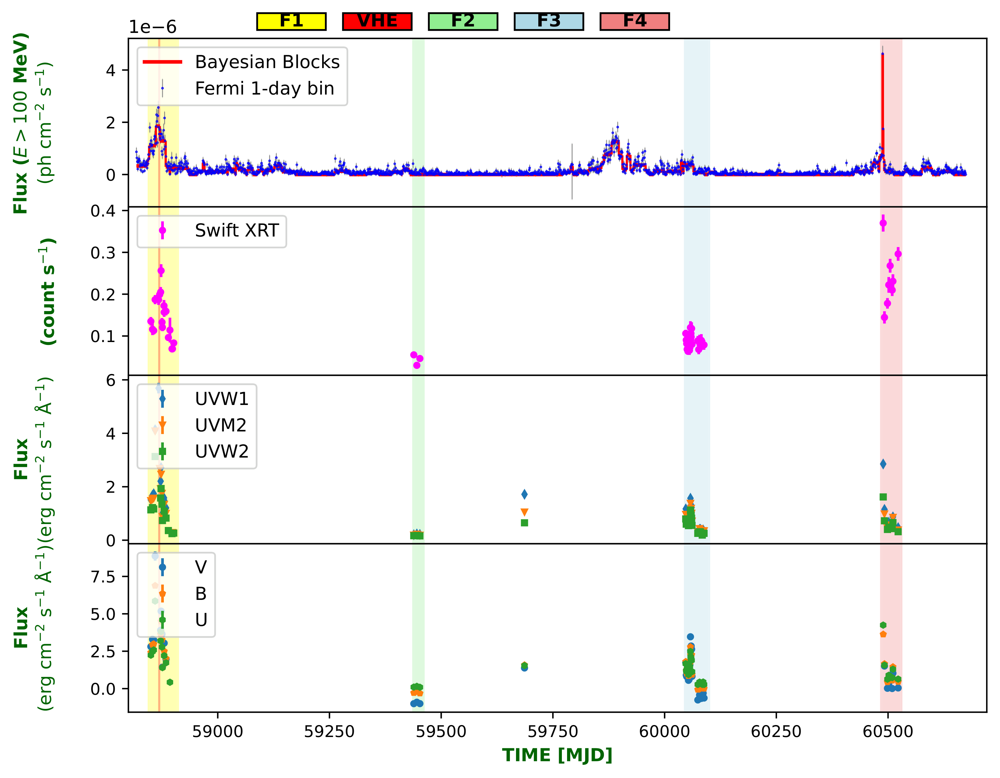
图注：Multi-wavelength light curve of B2 1420+32 in different flux states. The top panel displays the 1-day binned $\gamma$-ray light curve integrated over 0.1--300\,GeV, including data points with $\mathrm{TS}>4$. The upper middle panel displays the X-ray light curve in 0.3--10\,keV. The lower and bottom panels display the optical and UV light curves, respectively.
对应解读：对应“建议重点查看的图表”第1项和“关键图表逐图导读”图1：多波段光变曲线，以及五个活动状态划分的观测基础。
入选理由：这张图同时包含0.1--300 GeV伽马射线、0.3--10 keV X射线、光学和紫外光变，是判断MJD 60488附近耀发峰值、多波段同步覆盖、不同波段响应强弱和活动状态划分的核心证据。相比只显示伽马射线的Fig01，它更直接支撑日报中关于伽马射线--光学/紫外相关强、X射线响应较弱以及分状态SED建模前提的解读。
来源与置信度：\(arxiv_source\)；high；\(arxiv_source\) / main.tex:figure[2]
Fig03
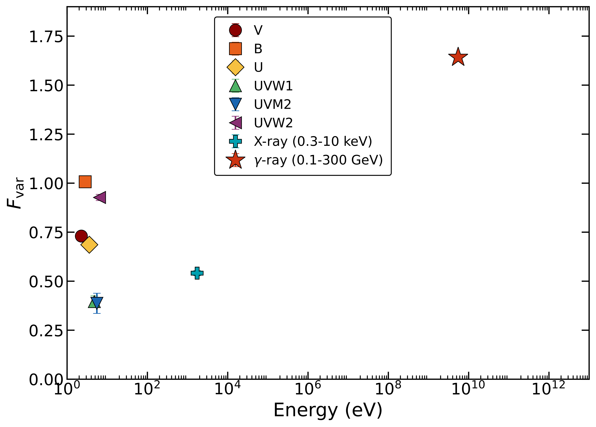
图注：Energy-dependent fractional variability in different energy bands.
对应解读：对应“建议重点查看的图表”第3项和“关键图表逐图导读”图3中关于分数变率随波段变化的部分。
入选理由：这张图直接展示不同能段的能量依赖分数变率，是验证‘伽马射线变率最大、光学/紫外显著、X射线较低’这一关键结论的主要图表。它比一般光变曲线更适合量化比较各波段变率幅度及误差条是否重叠，对判断X射线是否与高能耀发同源或只是较弱跟随尤其重要。
来源与置信度：\(arxiv_source\)；high；\(arxiv_source\) / main.tex:figure[3]
Fig01
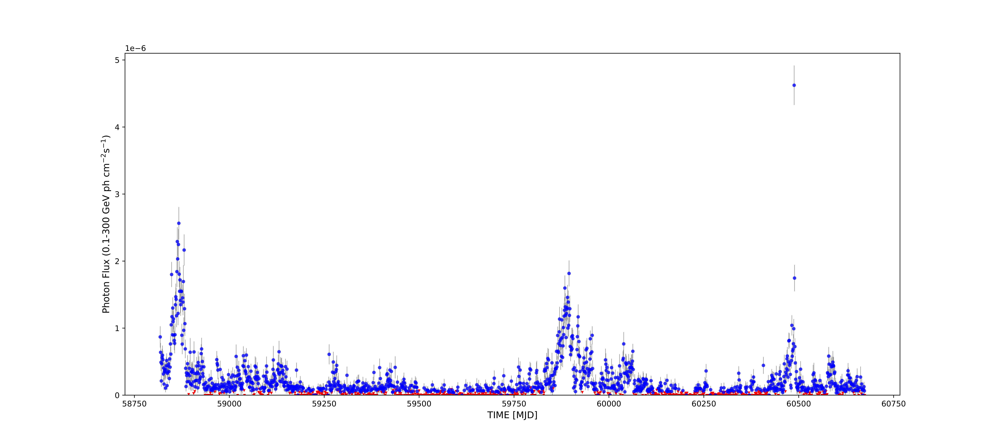
图注：One-day binned $\gamma$-ray light curve of B2 1420+32 in the energy range 0.1--300\,GeV, between MJD 58818--60721, red inverted triangles indicate data points where the flux uncertainty is greater than the measured flux
对应解读：对应“建议重点查看的图表”第1项和“关键图表逐图导读”图1中关于长期伽马射线光变、MJD 60488峰值及高流量阶段是否孤立的检查。
入选理由：这张图给出MJD 58818--60721期间一日分箱的0.1--300 GeV长期伽马射线光变，可直接定位MJD 60488附近的峰值并检查其时域结构和低显著性点分布。虽然科学价值不如包含多波段信息的Fig02全面，但它对确认论文摘要中约60倍4FGL平均流量的强耀发背景仍有独立支撑作用。
来源与置信度：\(arxiv_source\)；high；\(arxiv_source\) / main.tex:figure[1]
强相关工作
这篇工作属于“同一源 B2 1420+32 的多波段和 \(\mathrm{VHE}\) 研究”以及“\(\mathrm{VHE}\) 平谱射电类星体/变脸耀变体”两条文献线。建议检索关键词包括 \(\mathrm{B2\ 1420+32}\)、\(\mathrm{OQ\ 334}\)、\(\mathrm{VHE\ blazar}\)、\(\mathrm{changing\ look\ blazar}\)、\(\mathrm{Fermi\ LAT}\)、\(\mathrm{Swift\ XRT}\)、\(\mathrm{SSC\ EC\ modeling}\)。同一源文献应优先查找是否有 MAGIC、VERITAS 或其他 Cherenkov 望远镜的通报/论文，以及 \(Fermi\)-LAT 源表中的长期谱参数。
相似工作可对比 \(\mathrm{VHE}\) 探测的平谱射电类星体，如 \(\mathrm{3C\ 279}\)、\(\mathrm{PKS\ 1510\text{-}089}\)、\(\mathrm{PKS\ 1222+216}\) 等。这些源共同面对宽线区吸收与快速 \(\mathrm{VHE}\) 变率的矛盾，常见解释包括辐射区在宽线区外、喷流内小尺度团块、磁重联微团、多区模型或外部红外场 \(\mathrm{EC}\)。基础理论可检索 \(\mathrm{blazar\ sequence}\)、\(\mathrm{synchrotron\ self\ Compton}\)、\(\mathrm{external\ Compton}\)、\(\gamma\gamma\) opacity、\(\mathrm{dusty\ torus\ seed\ photons}\)。
也应关注相反观点：一团区 \(\mathrm{SSC}+\mathrm{EC}\) 模型虽然方便，但很多耀变体耀发表现出偏振角旋转、射电结喷出、不同波段滞后和分钟级 TeV 变率，提示多区或非均匀喷流结构。若后续观测发现 B2 1420+32 的 X 射线与 GeV 在某些耀发中强同步，或者 \(\mathrm{VHE}\) 光谱显示明显内部吸收特征，本文的红外外场混合模型就需要修正。
同一事件 / 同类源线索：
- https://arxiv.org/abs/2607.20375
- https://arxiv.org/pdf/2607.20375
- https://fermi.gsfc.nasa.gov/ssc/data/access/lat/14yr_catalog/
相似工作：
基础理论 / 方法工作：
- https://arxiv.org/abs/astro-ph/9801277
- https://arxiv.org/abs/astro-ph/9511118
- https://arxiv.org/abs/0802.1522
- https://arxiv.org/abs/0812.3931
相反观点 / 张力线索：
4. Identifying Kilonovae in the Presence of Optical Afterglow for the Wide-Field Survey Telescope
- 来源：arXiv / astro-ph.HE
- 链接：https://arxiv.org/abs/2607.20233v1
- 作者：Huan Yang, Zhengyan Liu, Liang-Duan Liu, Wen Zhao, Zigao Dai
- 评分：novelty 7/10，importance 7/10，relevance 9/10，final 8.70/10
- 推荐理由：面向双中子星并合电磁对应体的千新星识别与 WFST 观测策略优化，属于多信使高能暂现源方法，对未来引力波随动观测有实际价值。
中文题目：在光学余辉背景下识别千新星：面向 WFST 的模拟评估与观测策略
做了什么：这篇文章研究一个很实际的问题：双中子星并合后的千新星信号，常常叠加在更亮、更平滑的同步辐射光学余辉上，宽视场巡天望远镜怎样才能可靠地区分“只有余辉”和“余辉加千新星”。作者针对 WFST 建立了基于 Fisher 信息矩阵的数值框架，分别用类 AT2017gfo 模板和包含千新星多样性的物理种群模型，各模拟了 \(10^4\) 次观测实现。主要结论是，识别效率最主要受距离限制；对余辉微物理参数变化相对不敏感；类 AT2017gfo 事件在约 \(600\,\mathrm{Mpc}\) 内识别效率可超过 \(80\%\)。在其假设下，WFST 每年大约可识别 \(1\)--\(16\) 个千新星，并且第二晚开始加入 \(z\) 波段能显著利用千新星红化信号。
为什么重要：多信使时代的瓶颈不只是“有没有望远镜看到瞬变源”，而是能否在有限曝光时间、有限滤光片和强余辉污染下判断光变曲线中是否真的有千新星成分。这个判断直接影响双中子星并合电磁对应体的确认率、重元素核合成产额统计、喷流结构和并合抛射物物理的联合约束。文章把这个问题从经验性的“多看红波段”推进到可量化的 WFST 识别效率和观测策略优化。
理论 / 观测 / 仪器方法价值：对观测而言，本文给出 WFST 在不同距离和不同千新星模型下的识别效率、年发现率估计，以及第一晚优先高频 \(g\)、\(r\) 波段、第二晚后加入 \(z\) 波段的分阶段策略。对方法而言，它展示了如何用 Fisher 信息矩阵快速评估模型可区分性，而不必对每个模拟事件都做昂贵的完整贝叶斯采样。对理论而言，结果说明在该设定下余辉微物理参数不是识别瓶颈，千新星亮度、颜色演化和距离才是主导量。
为什么应该关注：如果你关心引力波事件的电磁随访，这篇文章回答的是“WFST 应该怎样花时间才最有可能把千新星从余辉里挖出来”。如果你做千新星理论，它给出了模型多样性如何转化成识别率损失。若你做巡天或瞬变源分类，它提供了一个可迁移的 Fisher 诊断框架，用来在真实观测前评估滤光片组合、节奏和深度是否真的增加了物理判别力。
展开详细解读：文章讲解、背景、理论、重点章节、图表与相关工作
文章详细讲解
科学问题：双中子星并合后的光学瞬变并不总是像 AT2017gfo 那样“干净”。若事件伴随相对论喷流，前向激波产生的同步辐射余辉可以在光学波段占主导，其光变通常是近似幂律衰减、颜色相对平滑；千新星则由富中子抛射物的放射性衰变供能，具有更快的热演化和从蓝到红的颜色转变。本文要解决的是，在这两个成分叠加时，WFST 能否识别出千新星，而不仅仅是把源拟合成一个余辉。
作者怎么做：文章建立了一个以 Fisher 信息矩阵为核心的数值评估框架。它比较“仅余辉模型”和“余辉加千新星模型”在 WFST 多波段、多历元光度测量中的可区分性。作者设置了两个层次的千新星描述：一个是以 AT2017gfo 为基准的模板场景，便于理解在标准烛光近似下距离和观测节奏的作用；另一个是物理采样种群，允许抛射物质量、速度、不透明度等参数变化，以反映真实千新星的多样性。每个场景模拟 \(10^4\) 个实现，用于统计识别效率。
关键结果：最清楚的结论是距离主导识别效率。对类 AT2017gfo 事件，在约 \(600\,\mathrm{Mpc}\) 以内，WFST 的千新星识别效率可以超过 \(80\%\)；距离更远时，信噪比下降使额外红色成分难以从余辉残差中分离出来。另一个有用结论是，识别效率对余辉微物理参数的变化相对不敏感，这意味着只要余辉仍可由平滑同步辐射模型描述，限制因素更多来自千新星自身亮度、颜色和测光精度，而不是具体的 \(\epsilon_e\)、\(\epsilon_B\)、电子谱指数等假设。作者还估计，在所采用的并合率、WFST 性能和随访假设下，WFST 每年可识别约 \(1\)--\(16\) 个千新星。
局限和下一步：本文是前瞻性模拟，结论依赖于引力波定位、触发延迟、天气、调度、银河系消光、宿主污染、真实余辉复杂性和千新星模型库的完备性。Fisher 方法在高信噪比和模型局部线性近似下效率很高，但在低信噪比、非高斯误差、多峰后验或模型错设时可能过于乐观。下一步应把该框架与真实调度模拟、图像差分效率、候选体污染率、光谱或近红外随访资源联合起来，并用未来双中子星事件对识别判据进行端到端校准。
关键结果是怎么做出来的
本文的核心证据链从模拟样本开始。作者不是只画几条示意光变曲线，而是在两个场景下分别产生 \(10^4\) 个观测实现：其一为类 AT2017gfo 的千新星模板叠加到余辉上，其二为物理采样的千新星种群，以覆盖亮度、颜色和演化时标的多样性。每个实现都通过 WFST 的滤光片、观测节奏和测光误差转化为多波段光度点，然后检验数据是否足以支持“余辉加千新星”而非“仅余辉”。
统计判别主要依靠 Fisher 信息矩阵给出的参数误差和模型可区分性。直观地说，若加入千新星参数后在多波段光变中产生的颜色和时间结构大于测光噪声与余辉参数可调节带来的不确定性，就被判定为可识别。文章强调，判别力并非简单来自某一晚的单点超亮，而是来自多个滤光片上随时间变化的残差模式，尤其是第二晚后红波段的 excess。
最重要的结果图应当是识别效率随距离的曲线。该曲线支撑“距离是主导限制”的说法：近距离时，即使余辉参数变化，千新星的热成分仍在颜色和衰减时标上留下可测特征；远距离时，所有滤光片的测光误差放大，Fisher 矩阵中千新星参数方向变得不稳定，识别效率迅速下降。作者给出的代表性阈值是类 AT2017gfo 事件在约 \(600\,\mathrm{Mpc}\) 内效率超过 \(80\%\)。
另一个关键结果来自滤光片和观测节奏比较。文章发现，颜色判别力在并合后第二晚左右迅速达到平台，这意味着一味增加早期颜色组合不一定高效。第一晚高频 \(g\)、\(r\) 监测更有利于锁定余辉衰减和早期蓝光成分；第二晚开始加入 \(z\) 波段，则能利用千新星红化后相对余辉的红外/红光 excess，提高模型区分度。
系统误差方面，最应关注的是余辉模型是否过于理想化、千新星种群采样是否覆盖真实多样性、WFST 深度和调度假设是否接近实际运行、以及背景瞬变污染是否会改变“识别”定义。文章的稳健性主要体现在对余辉微物理参数变化不敏感、两类千新星场景均显示距离限制、以及滤光片策略的趋势具有一致性。但读者仍应把年发现率 \(1\)--\(16\) 视为依赖假设的量级估计，而不是固定预言。
展开背景、理论、公式、模型、章节和图表导读
背景知识
研究对象是双中子星并合产生的电磁对应体。并合后可能出现至少两类光学/红外信号：一类是相对论喷流与外部介质相互作用产生的同步辐射余辉，另一类是并合抛射物中快速中子俘获过程核素衰变供能的千新星。前者通常是非热辐射，光谱近似幂律；后者是近似热辐射，颜色随温度下降和不透明度变化而快速演化。
历史上，GW170817/AT2017gfo 是千新星研究的标志性事件。它之所以重要，不只是因为首次明确连接了双中子星并合和千新星，还因为其多波段光变展示了早期蓝成分和后期红成分，支持了多组分抛射物和 \(r\) 过程核合成图像。但 GW170817 距离很近，约几十 \(\mathrm{Mpc}\)，且早期光学识别非常成功；未来更远、更暗、余辉更强或定位更差的事件不会都这么理想。
观测背景也在变化。第三代及升级后的引力波运行期会提供更多双中子星候选事件，但电磁随访资源仍有限。WFST 这类宽视场巡天望远镜的优势是视场大、反应快、适合覆盖较大定位区域；挑战是要在有限夜晚、有限滤光片切换和天气约束下做出最有物理信息量的观测。也就是说，问题已经从“能否发现一个新源”推进到“能否在强背景和模型退化下确认源中含有千新星”。
这个问题现在值得重新看，是因为过去很多策略研究默认千新星本身是主要光源，或者把余辉视为可忽略/可简单扣除的背景。但实际事件中，喷流视角、外部介质密度和微物理参数会让余辉在光学波段相当明亮。若不系统量化余辉-千新星混合源的可分辨性，巡天可能会漏掉被余辉淹没的千新星，或者把余辉光变中的模型偏差误认为千新星。
常见误区包括：第一，把红色颜色等同于千新星确认，忽视尘埃消光、宿主污染和余辉冷却频率穿越也会改变颜色；第二，把 AT2017gfo 当成唯一模板，低估千新星亮度和时间尺度的多样性；第三，以为更多滤光片总是更好，实际上滤光片切换和曝光时间会牺牲时间采样，判别力可能很快饱和；第四，用单波段光变斜率判断成分，而忽视多波段协同约束才是分离热成分和非热成分的关键。
基础理论 / 方法脉络
从物理图像看，余辉和千新星的区别首先在辐射机制。余辉来自相对论外流扫过外部介质形成的激波，电子被加速为非热分布并在磁场中发出同步辐射，因此光谱和光变常可由分段幂律描述。千新星来自亚相对论抛射物的放射性加热，光子在膨胀介质中扩散逃逸，峰值时间由扩散时标与膨胀时标相等近似决定，颜色由温度和镧系元素不透明度控制。
本文的模型假设是观测光通量可写成余辉分量与千新星分量之和。余辉部分通常由归一化、时间衰减指数、光谱指数以及与微物理相关的参数控制；千新星部分可用 AT2017gfo 模板缩放，也可由抛射物质量、速度和不透明度等物理参数生成。关键不是每个参数都被精确测出，而是两个模型族在 WFST 的观测误差下是否可区分。
观测方法上，WFST 提供 \(g\)、\(r\)、\(z\) 等光学波段的多历元测光。余辉的幂律谱在颜色空间中变化相对缓慢，而千新星会在一两天内出现明显颜色演化，尤其后期红波段相对增强。因此，早期高 cadence 可以约束余辉衰减基线，稍后加入红波段可以捕捉千新星红 excess。这也是本文提出分阶段策略的物理基础。
统计方法上，Fisher 信息矩阵近似描述参数附近的曲率，即数据对参数的约束强度。若两个模型的预测差异投影到误差协方差后很大，则模型可区分；若差异方向与余辉参数变化方向高度重合，则出现退化。这里最典型的退化是千新星亮度与距离、余辉归一化与早期蓝光成分、消光与颜色演化之间的混淆。
系统误差方面，真实观测还会受到图像差分残差、宿主星系背景、银河系和宿主消光、非同时多波段观测、天气造成的 cadence 缺口、引力波定位不确定性以及候选体污染影响。Fisher 框架适合快速扫描策略空间，但它默认模型局部近似可靠、误差统计可描述；一旦存在余辉能量注入、反向激波、喷流结构突变或千新星模型错设，实际识别率可能偏离模拟结果。
公式与推导
第一步，把观测到的某一滤光片通量写成两个物理分量的叠加：
这里 \(F_{\nu}^{\rm AG}\) 是余辉通量，\(F_{\nu}^{\rm KN}\) 是千新星通量，\(\boldsymbol{\theta}_{\rm AG}\) 和 \(\boldsymbol{\theta}_{\rm KN}\) 分别是两类模型参数，\(\epsilon_{\nu,t}\) 是测光噪声。本文的识别问题本质上是判断 \(F_{\nu}^{\rm KN}\) 是否显著非零。
第二步，用同步辐射余辉的局部幂律近似描述非热背景：
其中 \(F_0\) 是归一化，\(t_0\) 和 \(\nu_0\) 是参考时间与频率，\(\alpha\) 是时间衰减指数，\(\beta\) 是光谱指数。这个式子不要求完整描述所有余辉细节，但说明余辉在多波段中往往具有平滑、可外推的结构。
第三步，从扩散模型理解千新星峰值时标。若抛射物质量为 \(M_{\rm ej}\)、速度为 \(v_{\rm ej}\)、平均不透明度为 \(\kappa\)，扩散时标量级为
这里 \(c\) 是光速。较大的 \(\kappa\) 或 \(M_{\rm ej}\) 会推迟峰值并使光变更红，较大的 \(v_{\rm ej}\) 会缩短扩散时间。
第四步，放射性加热给出千新星热光度的量级：
其中 \(\epsilon_{\rm th}\) 是热化效率，\(\dot{q}_0\) 是单位质量加热率归一化，\(s\) 通常接近 \(1\)--\(1.4\)。该式说明千新星亮度主要受抛射物质量、热化效率和衰变加热律控制。
第五步，把光度转为观测通量，需要距离衰减：
这里 \(D_L\) 是光度距离，\(z_{\rm cos}\) 是宇宙学红移，\(L_{\nu'}^{\rm KN}\) 是源静止系谱光度。这一关系解释了为什么本文发现距离是识别效率的主导限制。
第六步，滤光片测得的是带通积分通量，而非单频通量：
其中 \(R_b(\nu)\) 是第 \(b\) 个滤光片的系统响应。\(g\)、\(r\)、\(z\) 波段的判别力差异来自 \(R_b(\nu)\) 对蓝光和红光演化的不同加权。
第七步，在高斯测光误差近似下，模型的卡方为
这里 \(i\) 遍历所有时间和滤光片观测点，\(\sigma_i\) 是测光误差。比较“仅余辉”和“余辉加千新星”的 \(\chi^2\) 差异，就是识别千新星的直接统计基础。
第八步，Fisher 矩阵给出参数局部约束：
其中 \(\theta_a\) 和 \(\theta_b\) 是模型参数。若千新星参数方向的导数与余辉参数方向几乎平行，则 \(\mathcal{F}_{ab}\) 接近奇异，模型难以区分；若红波段数据提供新的方向，约束会明显改善。
第九步，可用模型预测差异的信噪比近似衡量判别力：
这里 \(f_i^{\rm AG+KN}\) 与 \(f_i^{\rm AG}\) 分别是两种模型在同一观测点的预测。\(\Delta S\) 随 \(D_L^{-1}\) 近似下降，因此远距离事件更容易落入不可识别区。
第十步，若以多次模拟估计识别效率，可写为
其中 \(N_{\rm id}\) 是在距离 \(D\) 附近通过识别阈值的模拟数，\(N_{\rm sim}\) 是总模拟数。本文报告的类 AT2017gfo 事件在约 \(600\,\mathrm{Mpc}\) 内 \(\eta\gtrsim 0.8\)，就是这个统计量的物理含义。
模型拟合 / 应用方法
本文的拟合对象是多波段、多历元光变，而不是单个峰值星等。可调参数包括余辉归一化、衰减斜率、光谱斜率以及与微物理相关的量；千新星部分在模板场景中主要表现为模板亮度和时间演化随距离、可能的尺度因子改变，在物理种群场景中则由抛射物质量、速度、不透明度等参数决定。实际拟合中，核心是看加入千新星后是否产生统计上必要且物理上一致的颜色-时间残差结构。
似然通常可近似为高斯测光误差下的 \(\chi^2\) 或等价的对数似然。Fisher 信息矩阵相当于在最优参数附近用二阶曲率近似后验宽度，因此适合快速预测参数误差和模型可分辨性。它的优点是计算快，能扫描大量距离、余辉参数和观测策略；缺点是对强非线性、多峰后验和低信噪比边界事件不如完整贝叶斯模型比较可靠。
残差诊断非常关键。若仅余辉模型拟合后，在 \(g\)、\(r\)、\(z\) 波段留下随机残差，这不能说明有千新星；若残差呈现早期蓝端偏离、随后红波段系统性过亮，并且时间尺度与热扩散模型一致，才更像千新星。相反，若红 excess 只出现在一个夜晚或一个滤光片，应警惕图像差分问题、宿主背景、校准误差或天气导致的非同时颜色偏差。
主要退化关系包括距离与千新星本征亮度退化、余辉归一化与早期千新星蓝成分退化、消光与本征颜色退化、观测起始时间与峰值时间退化。第二晚加入 \(z\) 波段的价值就在于，它给模型提供了与单纯余辉幂律不同的颜色方向，从而降低余辉参数吸收千新星信号的能力。
模型可能失败的地方也很明确。真实余辉可能存在反向激波、能量注入、喷流结构导致的上升或拐折、冷却频率穿越，都会破坏简单幂律近似。千新星也可能有非轴对称、视角依赖和多组分辐射输运效应，AT2017gfo 模板未必代表总体。若把这些复杂性误差低估，Fisher 预测的识别率会偏高；若观测策略没有考虑候选体筛选和图像处理效率，年发现率也可能偏乐观。
重点章节 / 结果段落怎么读
-
数据和模拟设置部分应重点看 WFST 的假设：包括滤光片、极限星等、观测节奏、触发后起始时间、测光误差模型和距离范围。这些设置直接决定识别效率，若与实际运行策略不同，结论需要重新标定。
-
余辉与千新星模型部分应分开读。余辉模型决定背景的可调自由度；千新星模型决定要识别的额外信号形状。特别要比较 AT2017gfo 模板场景和物理采样种群场景，因为前者给出乐观且直观的基准，后者更接近真实事件分布。
-
Fisher 信息矩阵方法部分是全文的方法核心。读者应关注作者如何定义“识别”、如何从 Fisher 矩阵或模型差异转化为效率、是否考虑参数协方差，以及判据是否等价于某种显著性或置信阈值。
-
结果部分的主线是识别效率随距离、余辉参数和滤光片策略的变化。最需要检查的是效率曲线是否陡峭、不同模型场景是否一致、余辉微物理参数不敏感这一结论是否在全参数空间都成立。
-
观测策略讨论部分应看其建议是否真正来自前面的统计诊断。第一晚高频 \(g\)、\(r\) 监测和第二晚加入 \(z\) 波段的策略，关键依据是颜色判别力在第二晚趋于饱和以及红 excess 变得突出。
-
若有附录或稳健性检验，应检查不同误差模型、不同触发延迟、不同距离分布、不同千新星亮度函数下的效率变化。这些检验决定 \(1\)--\(16\) 个每年的发现率估计是否只是特定假设的产物。
建议重点查看的图表
-
复合光变曲线示例：应看 \(g\)、\(r\)、\(z\) 波段中余辉、千新星和总光变分别如何演化，尤其千新星在何时、何波段相对余辉最突出。
-
识别效率随距离的曲线：应看 \(600\,\mathrm{Mpc}\) 附近效率是否确实超过 \(80\%\)，以及效率下降的宽度和不同模型场景之间的差异。
-
余辉微物理参数扫描图：应看识别效率对余辉亮度、衰减指数、光谱指数或微物理参数的敏感度，确认“不敏感”是否只在某个局部参数范围成立。
-
滤光片组合或观测节奏比较图：应看只用 \(g\)、\(r\) 与加入 \(z\) 后 Fisher 判别力或识别效率提升多少，以及提升从第几晚开始饱和。
-
物理采样千新星种群的参数分布和识别/未识别子样本对比：应看未识别事件是否集中在低抛射物质量、高不透明度、远距离或余辉过亮区域。
-
年发现率估计表：应看并合率、天空覆盖、触发效率、天气损失和识别效率分别如何进入 \(1\)--\(16\,\mathrm{yr}^{-1}\) 的范围。
-
模型残差或 Fisher 置信椭圆诊断：应看千新星参数方向是否与余辉参数方向退化，以及 \(z\) 波段是否真的旋转或压缩了误差椭圆。
关键图表逐图导读
图 1：建议把它当作物理直觉图来读。横轴通常应是并合后时间，纵轴是星等或通量，不同颜色代表 \(g\)、\(r\)、\(z\) 波段，线型区分余辉、千新星和总光变。重点看千新星不是在所有时间都表现为总光变变亮，而是在颜色和衰减形状上制造偏离。读图陷阱是星等轴可能反向，亮度增加对应数值变小。
图 2：若为识别效率随距离图，横轴应是光度距离，纵轴是识别效率。数据点或曲线可能对应不同千新星场景或不同观测策略。主要结论是效率随距离下降，类 AT2017gfo 事件在约 \(600\,\mathrm{Mpc}\) 内仍可达到高效率。读图时要注意置信区间或模拟泊松误差，远距离处少量识别事件可能对效率估计不稳定。
图 3：若为余辉参数敏感性图，横轴可能是余辉微物理参数、余辉亮度或光变指数，纵轴为识别效率或 Fisher 判别量。关键是看曲线是否相对平坦，从而支撑“余辉微物理参数不是主导限制”。陷阱是微物理参数之间常有相关性，单参数扫描不能完全代表真实余辉种群。
图 4：若为滤光片策略比较图，横轴可能是并合后观测夜晚或滤光片组合，纵轴为判别力、识别效率或参数不确定度。应重点看第二晚加入 \(z\) 波段后是否出现明显提升，以及之后是否进入平台。读图时不要把“平台”误解为不需要后续观测；平台指颜色判别力增益饱和，不代表光变监测对参数估计无用。
图 5：若为物理种群散点图，坐标轴可能是抛射物质量、速度、不透明度、距离或峰值星等，点的颜色表示可识别与否。应看可识别事件是否集中在高亮、近距离、颜色演化明显的区域。陷阱是投影图会隐藏多参数选择效应，例如一个低质量事件若距离足够近仍可能被识别。
图 6：若为年发现率或策略收益表/柱状图，应看每个假设的贡献：引力波事件率、WFST 覆盖效率、天气和调度损失、千新星识别效率。主要结论是 \(1\)--\(16\,\mathrm{yr}^{-1}\) 是量级范围而非单值预言。读者应避免把它与真实运行早期的年度产出直接等同。
论文原图 / 可嵌入图片
Fig02
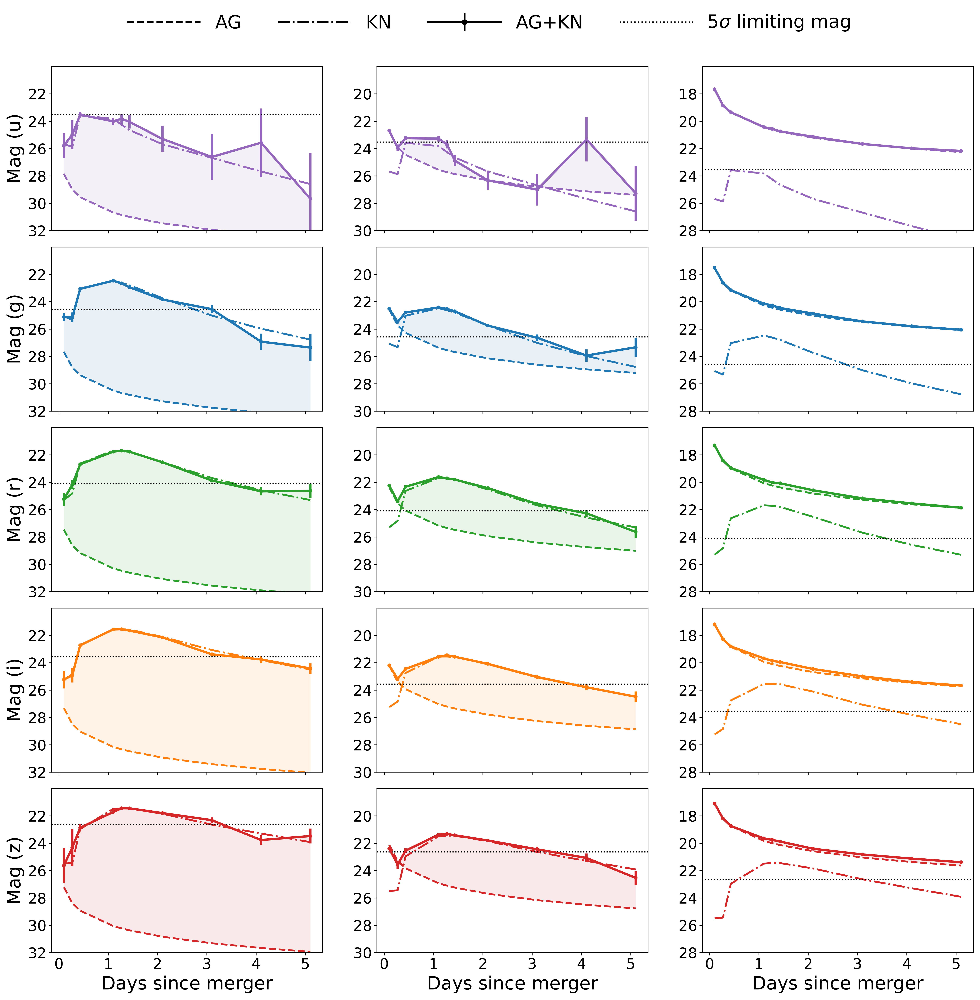
图注：Multi-band light curves of three representative simulated samples. In each band ($u, g, r, i, z$), the solid lines with error bars denote the total observed magnitudes and black dotted lines represent the $5\sigma$ limiting magnitudes. Theoretical components are decomposed into the afterglow (dashed lines) and the kilonova (dash-dotted lines). The shaded regions highlight the flux excess contributed by the kilonova relative to the afterglow background. All samples are placed at a fixed distance of $400\,\mathrm{Mpc}$. The kilonova parameters are fixed to the best-fit values of the AT2017gfo template: $m_{\mathrm{ej}}^{\mathrm{dyn}} = 10^{-2.27}\,M_{\odot}$, $m_{\mathrm{ej}}^{\mathrm{wind}} = 10^{-1.28}\,M_{\odot}$, $\Phi = 49.5\,^\circ$ \(\citep{dietrich2020multimessenger}.\) The afterglow parameters are set to the median values of our adopted distributions: $\theta_{\mathrm{obs}}=21.09\,^\circ$, $\log{n_0}=-2.5$, $p=2.35$, $\theta_c=0.25$, $\log{\epsilon_e}=-2.0$, $\log{\epsilon_B}=-3.5$, while $\log{E_0}= 49.0,50.5,52.0$ from left to right, respectively.
对应解读：对应“复合光变曲线示例”和关键图表导读中的图1式解读。
入选理由：图注明确给出多波段总光变、余辉虚线、千新星点划线、5σ极限星等以及千新星相对余辉的通量 excess，是支撑“千新星在复合余辉背景中以颜色和形状偏离被识别”的最核心直觉图。三组不同余辉能量还可直接展示余辉强弱变化下千新星可见性的差异。
来源与置信度：\(arxiv_source\)；high；\(arxiv_source\) / main.tex:figure[2]
Fig09
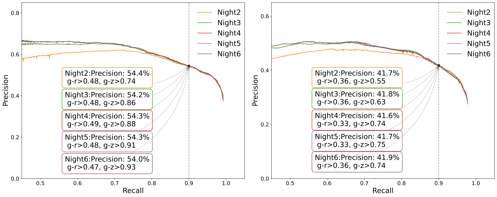
图注：$g-r \& g-z$ (Case 1).
对应解读：对应“滤光片组合或观测节奏比较图”以及关键图表导读中关于加入 z 波段、g-r 与 g-z 颜色判别力的讨论。
入选理由：图题明确为“g-r & g-z (Case 1)”，与日报强调的第二晚加入 z 波段、利用红色 excess 提升 Fisher 判别力高度相关。相比单独的 g-r 图，它同时包含 g-z 颜色信息，更能支撑“加入 z 后判别力提升并趋于饱和”的策略结论。
来源与置信度：\(arxiv_source\)；high；\(arxiv_source\) / main.tex:figure[9]
Fig08
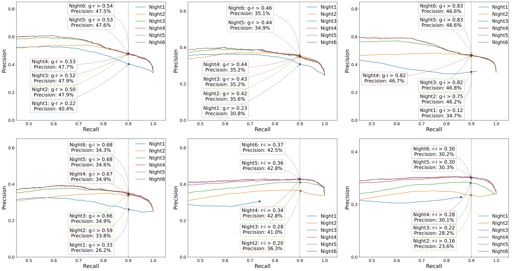
图注：$g-r$ (Case 1).
对应解读：对应“滤光片组合或观测节奏比较图”中只使用 g、r 颜色时的基线表现。
入选理由：图题为“g-r (Case 1)”，可作为 Fig09 的对照，显示仅蓝光/光学颜色组合时的识别能力或颜色演化基线。它有助于量化为什么单用 g-r 不足以完全利用千新星后期变红的信息。
来源与置信度：\(arxiv_source\)；high；\(arxiv_source\) / main.tex:figure[8]
Fig06
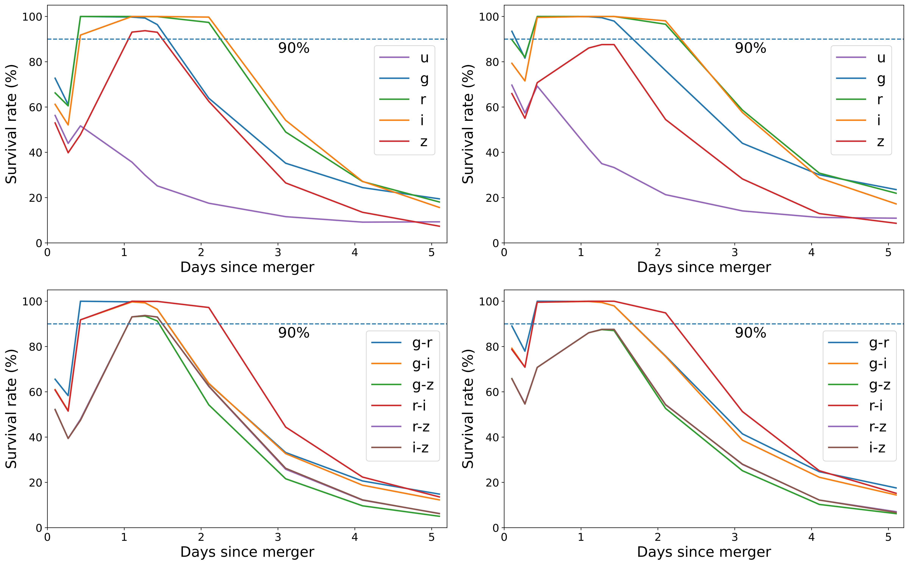
图注：Single-band survival rate of Case 1.
对应解读：对应“识别效率随距离的曲线”和关键图表导读中关于效率、探测/存活率随条件变化的讨论。
入选理由：图注为“Single-band survival rate of Case 1”，虽然未在候选说明中直接写明横轴，但 survival rate 是最接近日报中识别效率/可识别比例诊断量的候选图之一。它可用于检查单波段条件下信号保留下来的比例，是理解多波段颜色判别前的基础效率图。
来源与置信度：\(arxiv_source\)；high；\(arxiv_source\) / main.tex:figure[6]
Fig04
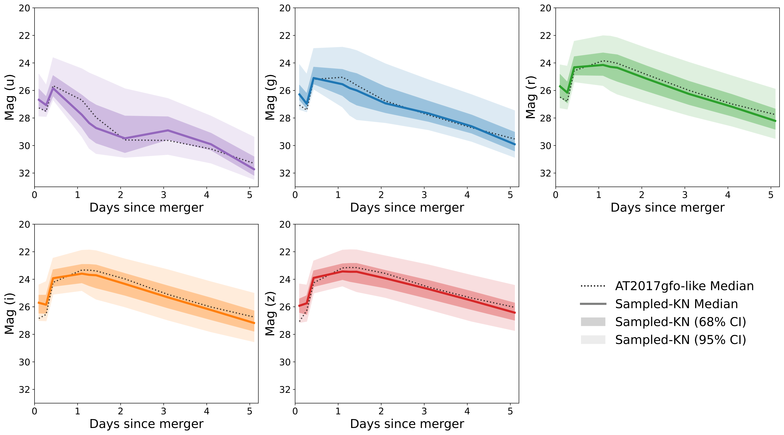
图注：Comparison of multi-band ($u, g, r, i, z$) light curves between AT2017gfo-like and sampled kilonova populations. The solid colored lines represent the median light curves of the sampled kilonova ensemble, with shaded regions indicating the $68\%$ and $95\%$ confidence intervals (CI). The black dotted line denotes the median light curves of the AT2017gfo-like samples.
对应解读：对应“物理采样千新星种群的参数分布和识别/未识别子样本对比”以及类 AT2017gfo 模板与物理采样种群差异的解读。
入选理由：该图比较 AT2017gfo-like 与采样千新星种群的多波段光变，并给出 68% 和 95% 置信区间，能直接展示真实种群多样性相对单一模板的亮度和颜色散布。它比仅写“Parameter distributions”的候选图更直接支撑物理种群导致识别效率变化的讨论。
来源与置信度：\(arxiv_source\)；high；\(arxiv_source\) / main.tex:figure[4]
Fig03
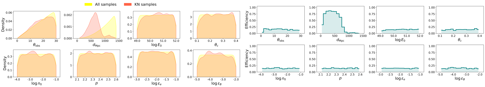
图注：Parameter distributions
对应解读：对应“余辉微物理参数扫描图”和模型假设部分中关于余辉参数分布的说明。
入选理由：候选图注虽较简略，仅标为“Parameter distributions”，但在图号顺序上位于代表性光变图之后、种群光变比较之前，最可能承载模拟所用参数分布信息。它可用于核查日报中提到的余辉能量、密度、观测角、\(epsilon_e\)、\(epsilon_B\)、p 等参数范围是否覆盖结论所声称的“不敏感”区域。
来源与置信度：\(arxiv_source\)；high；\(arxiv_source\) / main.tex:figure[3]
强相关工作
这项工作直接处在 GW170817/AT2017gfo 之后的千新星观测策略研究脉络中。GW170817 提供了同一事件的引力波、伽马射线、光学/红外千新星和后期余辉全链条样本，是本文 AT2017gfo 模板场景的历史原型。相关检索关键词可用“AT2017gfo kilonova light curve”，“GW170817 optical counterpart”，“kilonova afterglow decomposition”，“binary neutron star electromagnetic counterpart”。
与相似观测和理论工作相比，本文的重点不是重新解释 GW170817，而是面向 WFST 的未来事件分类效率。它与 LSST/Vera Rubin、ZTF、GOTO、BlackGEM 等宽场巡天的千新星策略研究有共同问题：如何在大定位区域、短时标、候选体污染和多波段资源有限的条件下最大化物理识别率。检索关键词可用“kilonova observing strategy wide-field survey”，“Fisher matrix kilonova detection”，“WFST gravitational wave follow-up”。
潜在张力来自两个方向。一方面，若真实余辉比本文模型更复杂，余辉自身的光谱/时间结构可能模拟千新星颜色演化，导致误报；另一方面，若真实千新星比 AT2017gfo 更暗或更依赖视角，识别效率和年发现率可能偏低。相反观点或需要对照的文献可检索“kilonova diversity radiative transfer”，“structured jet afterglow kilonova contamination”，“optical afterglow kilonova degeneracy”。
同一事件 / 同类源线索：
- https://arxiv.org/abs/2607.20233
- https://arxiv.org/pdf/2607.20233
- https://arxiv.org/abs/1710.05832
- https://arxiv.org/abs/1710.05452
- https://arxiv.org/abs/1710.05858
相似工作：
基础理论 / 方法工作：
- https://arxiv.org/abs/astro-ph/9712005
- https://arxiv.org/abs/1001.5029
- https://arxiv.org/abs/1209.0350
相反观点 / 张力线索：
5. No Surviving Companion to the Galactic SN 1181: Evidence for a Double-Degenerate Channel for Type Iax Supernovae
- 来源：arXiv / astro-ph.HE
- 链接：https://arxiv.org/abs/2607.19705v1
- 作者：Kohki Uno, Daichi Tsuna, Daichi Hiramatsu, Tomoya Kinugawa, Takatoshi Ko
- 评分：novelty 8/10，importance 8/10，relevance 7/10，final 8.65/10
- 推荐理由：利用 Gaia/Pan-STARRS 深度排除 SN 1181 的幸存伴星，支持 Type Iax 双简并通道；虽非伽马主题，但这是独特银河历史超新星遗迹的直接 progenitor 约束。
中文题目：银河系超新星 1181 没有幸存伴星：Ia 型 Iax 超新星双简并通道的证据
做了什么：这篇文章用 Gaia 和 Pan-STARRS1 档案数据，在银河系历史超新星 SN 1181 的遗迹中心附近约 \(30^{\prime\prime}\) 范围内寻找理论上应由单简并氦星供体通道留下的幸存伴星。作者发现：有 Gaia 天体测量的源，其视差和自行与 SN 1181 遗迹距离和运动不相容；剩余的 Pan-STARRS1 弱源，其光谱能量分布也不像氦星或已知热亚矮星。结合双星演化计算，若存在氦星伴星应亮到 \(M_g \lesssim 6.5\,\mathrm{mag}\)，而搜索深度已达 \(M_g>8\,\mathrm{mag}\)，因此非探测结果足以排除典型氦星伴星和较亮的富氢伴星。结论是 SN 1181 更可能来自双白矮星并合或其他双简并路径，而不是经典单简并氦供体纯爆燃通道。
为什么重要：SN 1181 是少数可以把历史记录、银河系遗迹、中心残骸和现代巡天数据放在一起检验的热核爆炸候选体。Iax 型超新星的核心争议是：它们到底主要来自吸积白矮星加非简并伴星，还是双白矮星并合。这篇文章把问题从“光变曲线和光谱是否像 Iax”推进到“伴星是否真的还在现场”。如果氦星供体通道成立，爆炸后伴星应高速、热而相对明亮地幸存；现在没有看到它，是对该通道在 SN 1181 上的直接反证。
理论 / 观测 / 仪器方法价值：观测价值在于它示范了如何用 Gaia 天体测量加深光学巡天，在一个有明确年龄和位置约束的银河系遗迹中做伴星排除实验。理论价值在于它把双星演化给出的伴星亮度下限与实际探测极限相连，把“没有发现”转化为对前身星通道的定量约束。方法价值在于它提醒 Iax 型不能只由光谱分类推断单一前身星通道；同类爆炸可能存在多通道，并且需要用残骸、幸存星、中心致密残骸和历史光变共同判别。
为什么应该关注：如果你关心 Ia 类热核爆炸的前身星、白矮星并合、低能爆燃或银河系超新星遗迹，这篇文章值得看，因为它给出一个相对干净的反例：至少 SN 1181 似乎没有 SN 2012Z 那类明亮氦星伴星。它使 Iax 型超新星从“一个奇特子类”变成“可能由多种白矮星路径汇聚到相似观测表象”的实验场，也会影响我们如何用 Iax 事件理解白矮星爆炸、多信使遗迹和化学反馈。
展开详细解读：文章讲解、背景、理论、重点章节、图表与相关工作
文章详细讲解
科学问题：Iax 型超新星通常被理解为热核超新星中的低能、低速、低亮度分支，许多模型认为它们来自接近钱德拉质量的碳氧白矮星发生不完全爆燃，爆炸没有完全摧毁白矮星，留下束缚残骸。若爆炸前白矮星从非简并氦星或氢丰富伴星吸积，那么爆炸后应留下一个幸存伴星。SN 1181 与银河系遗迹 Pa 30 及其中心高温残骸常被联系起来，其年龄由历史记录给出，距离和角尺度也可由现代观测约束，因此它是检验 Iax 单简并通道的少数近场实验对象。
作者怎么做：文章在 SN 1181 遗迹中心附近 \(30^{\prime\prime}\) 范围内进行伴星搜索，这大约对应 \(0.3\,\mathrm{pc}\) 的投影尺度。数据上首先利用 Gaia 的视差和自行筛选，检验候选星是否可能位于遗迹距离并与爆炸后约八百多年内的可接受运动相符。对 Gaia 没有充分天体测量或更暗的候选源，作者进一步使用 Pan-STARRS1 多波段光度构建光谱能量分布，并与氦星模板和热亚矮星族群比较。与此同时，他们用双星演化计算估计如果单简并氦供体通道成立，爆炸时幸存伴星的最低质量和可见光绝对星等应达到什么水平。
关键结果：所有 Gaia 源都被视差和自行排除，意味着它们要么不在 SN 1181 的距离上，要么其运动无法解释为爆炸后从中心位置飞出的伴星。剩余 Pan-STARRS1 源的颜色和能量分布也不符合预期的热氦星或已知热亚矮星。更关键的是，双星演化模型预测幸存氦星伴星应有 \(M_g \lesssim 6.5\,\mathrm{mag}\)，而 Pan-STARRS1 在该方向的搜索极限相当于 \(M_g>8\,\mathrm{mag}\)，即若这样的伴星存在，应明显可见。因此非探测不是单纯“没有找到”，而是达到足以排除目标族群的深度。
局限和下一步：这个结论最强地排除的是明亮氦星伴星和较亮的富氢非简并伴星；它并不排除极暗、已冷却、被尘埃严重遮蔽或模型之外的异常伴星，也不直接证明具体的双白矮星并合细节。下一步应包括更深的紫外和近红外搜索、中心残骸高分辨率光谱、遗迹三维运动学，以及把 SN 1181 与 SN 2012Z 等有前身星线索的 Iax 事件放在统一双星演化框架下比较。
关键结果是怎么做出来的
本文最重要的证据链从搜索区域开始。作者把目标区域限定在 SN 1181 遗迹中心附近 \(30^{\prime\prime}\)，约为 \(0.3\,\mathrm{pc}\) 的投影半径。这个半径不是任意选择：SN 1181 至今约八百多年，典型幸存伴星即便获得数百 \(\mathrm{km\,s^{-1}}\) 的空间速度，在遗迹距离下也应落在这个角半径量级内。搜索半径过小会漏掉高速伴星，过大则会显著增加场星污染；文章的选择是在物理可及性和污染控制之间折中。
第一层筛选使用 Gaia。对有可靠 Gaia 解的源，作者检查视差是否与 SN 1181 距离一致，并检查自行方向和大小是否能追溯到爆炸位置。这个检验非常有力，因为幸存伴星不仅要在距离上匹配，还应在运动学上与八百多年前从遗迹中心出发相容。结果是所有 Gaia 源都被排除，说明搜索区内没有一个较亮源同时满足距离和运动学约束。
第二层筛选面向比 Gaia 天体测量可靠极限更暗、但仍能在 Pan-STARRS1 中看到的源。作者用多波段光度构造光谱能量分布，将其与氦星谱模板和热亚矮星族群比较。氦星伴星或热亚矮星通常较蓝、有效温度高，颜色空间位置与普通冷场星不同；文章指出剩余源的光度和颜色不能与这类热伴星解释相容。
统计显著性在这里不是一次瞬变探测意义上的 \(5\sigma\) 计数显著性，而是“模型预期亮度区间”与“巡天探测极限和候选源属性”的排除关系。双星演化计算给出单简并氦供体通道的幸存伴星至少应亮到 \(M_g \lesssim 6.5\,\mathrm{mag}\)，而 Pan-STARRS1 的非探测可排除到 \(M_g>8\,\mathrm{mag}\)。这约 \(1.5\,\mathrm{mag}\) 的余量对应数倍通量差，使结论不只依赖边缘探测极限。
支撑结论的图表应包括候选源的天球位置图、Gaia 视差与自行筛选图、Pan-STARRS1 颜色或光谱能量分布图、以及双星演化预测的伴星绝对星等分布或下限图。关键残差是候选源相对于氦星模板的颜色偏离、相对于遗迹距离的视差偏离，以及相对于从中心向外运动轨迹的自行偏离。
主要系统误差包括遗迹中心位置、距离模数、消光、Pan-STARRS1 完备性、源混叠、氦星模型光谱库、以及爆炸后伴星是否可能经历快速热演化变暗。作者的稳健性来自两条独立约束：较亮源由 Gaia 天体测量排除，较暗源由光度颜色和探测极限排除；同时理论预期的伴星亮度高于观测极限，使结论对小幅距离或消光误差不太敏感。
展开背景、理论、公式、模型、章节和图表导读
背景知识
Iax 型超新星是 Ia 型热核超新星家族中的低能异常分支。它们通常具有较低喷流速度、较低峰值光度、谱线演化慢、爆炸能量和 \(^{56}\mathrm{Ni}\) 产额偏低等特征。与标准 Ia 型常被用作宇宙学距离标尺不同，Iax 型更像白矮星热核爆炸机制的压力测试：怎样的燃烧模式能释放部分能量，却不完全摧毁白矮星？
历史上，一个重要模型是单简并氦供体通道：碳氧白矮星从非简并氦星吸积，接近临界状态后发生纯爆燃。爆燃波亚声速传播，可能因能量不足而不能解束缚整个白矮星，留下一个高温、高速、成分异常的束缚残骸。由于伴星没有被完全摧毁，爆炸后应仍存在一个可观测的氦星或热亚矮星样天体。
SN 1181 是公元 1181 年记录到的银河系客星，近年常与 Pa 30 星云及其中心异常高温星联系起来。这个系统显示出高速富氧或富氖喷出物、特殊中心星和约千年年龄，因而被认为可能是一次低能热核爆炸，甚至是 Iax 型在银河系内的近邻实例。它的优势在于年龄不是从模型拟合推出来的，而有历史记录约束。
为什么现在值得重新看？因为 Gaia 提供了足够精确的视差和自行，可以把前身星通道问题变成直接的运动学检验；Pan-STARRS1 等深巡天又能把较暗候选源纳入颜色和光度筛选。过去我们常从光变曲线和光谱间接推断前身星，现在可以直接问：爆炸现场有没有幸存伴星？
该领域常见误区之一是把“Iax 型”等同于“单简并氦星通道”。实际上 Iax 是观测分类，不是前身星标签。另一个误区是认为没有看到伴星必然没有伴星；真正有意义的是探测极限是否低于理论预期、是否考虑距离和消光、是否排除场星污染。本文的价值正是在这些条件下把非探测变成了物理排除。
基础理论 / 方法脉络
基础物理图像是：一个白矮星热核爆炸若发生在双星系统中，爆炸喷出物会冲击伴星，使伴星剥离质量、受热膨胀，并可能获得额外速度。若爆炸没有完全摧毁白矮星，还可能同时留下束缚白矮星残骸。对单简并情形，幸存伴星是非常直接的可检验预言；对双简并并合，通常不应留下一个正常非简并伴星。
幸存伴星的可观测性由几个量决定：爆炸时伴星质量、半径、有效温度、轨道速度、受冲击加热程度，以及爆炸后到现在的热弛豫时间。氦星或热亚矮星的光谱能量分布偏蓝，在光学颜色图中与普通主序场星不同。若距离和消光已知，观测星等可以换算为绝对星等，并与双星演化模型给出的亮度范围比较。
本文的关键假设包括：SN 1181 与所研究遗迹确有关联；遗迹中心和距离估计足够可靠；若单简并氦供体通道成立，伴星在约八百多年后仍不会暗到 Pan-STARRS1 极限以下；以及搜索半径覆盖了合理的伴星横向速度范围。每个假设都有系统误差，但它们同时影响位置、亮度和颜色，不容易让一个标准氦星伴星完全隐藏。
观测方法的逻辑分两层。Gaia 负责排除较亮候选源，因为视差给出距离约束，自行给出爆炸后运动学约束。Pan-STARRS1 负责检查更暗源的多波段光度，利用颜色和光谱能量分布判断其是否像热氦星。两者互补：Gaia 的强项是天体测量，Pan-STARRS1 的强项是深度和颜色覆盖。
主要退化关系包括距离模数与消光的退化、有效温度与半径在宽带光度中的退化、场星颜色与轻微红化热星的混淆、以及遗迹中心位置与伴星横向速度的退化。系统误差还可能来自拥挤场中的源混叠、Pan-STARRS1 完备性、氦星模板不完备，以及爆炸冲击后伴星热演化模型的不确定性。
公式与推导
第一步是把角搜索半径转化为物理半径。若遗迹距离为 \(D\)，角半径为 \(\theta\)，小角近似下
这里 \(R_{\perp}\) 是投影物理半径，\(\theta\) 需用弧度。本文的 \(30^{\prime\prime}\) 对应约 \(0.3\,\mathrm{pc}\)，表示搜索覆盖了爆炸后伴星可能移动的现场尺度。
第二步是把搜索半径和年龄联系到伴星横向速度。若爆炸至今时间为 \(t\)，可覆盖的投影速度为
这里 \(v_{\perp}\) 是天球面速度。这个式子说明，给定 SN 1181 约八百多年年龄，\(30^{\prime\prime}\) 区域能够测试相当宽的幸存伴星速度范围。
第三步是 Gaia 自行约束。自行 \(\mu\) 与横向速度满足
其中 \(v_{\perp}\) 以 \(\mathrm{km\,s^{-1}}\) 计，\(\mu\) 以 \(\mathrm{arcsec\,yr^{-1}}\) 计，\(D\) 以 \(\mathrm{pc}\) 计。若某候选源的 \(\mu\) 不能把其轨迹回溯到遗迹中心，或对应速度不合理，就不能作为幸存伴星。
第四步是距离约束。视差 \(\varpi\) 与距离近似满足
其中 \(D\) 以 \(\mathrm{pc}\) 计时 \(\varpi\) 以 \(\mathrm{arcsec}\) 计。实际 Gaia 分析需考虑零点、误差和贝叶斯距离先验，但物理含义是：候选伴星必须与遗迹处在同一距离尺度上。
第五步是从视星等得到绝对星等。对某一波段，例如 \(g\) 波段，
这里 \(m_g\) 是观测星等，\(M_g\) 是绝对星等，\(A_g\) 是 \(g\) 波段消光。本文将 Pan-STARRS1 极限转化为约 \(M_g>8\,\mathrm{mag}\) 的排除深度。
第六步是星等差对应通量比。若理论预期伴星 \(M_{g,\mathrm{th}}\) 与观测极限 \(M_{g,\mathrm{lim}}\) 相差 \(\Delta M_g\)，则
当 \(M_{g,\mathrm{th}}\lesssim 6.5\,\mathrm{mag}\) 而 \(M_{g,\mathrm{lim}}>8\,\mathrm{mag}\) 时，理论伴星应比极限亮数倍，因而不应被漏掉。
第七步是用黑体近似理解热伴星颜色。恒星表面给出的单色通量可写作
其中 \(R_{\star}\) 是半径，\(T_{\mathrm{eff}}\) 是有效温度，\(B_{\nu}\) 是普朗克函数，\(A_{\nu}\) 是频率相关消光。氦星或热亚矮星的高 \(T_{\mathrm{eff}}\) 会使蓝光波段相对更强。
第八步是把宽带光度拟合写成一个简单的 \(\chi^2\) 诊断：
这里 \(f_i\) 是第 \(i\) 个滤光片的观测通量，\(\sigma_i\) 是误差，模型通量由温度、半径、消光和距离决定。若热氦星模板给出不可接受的 \(\chi^2\)，候选源就不能解释为预期伴星。
第九步是把“未探测”写成似然上限。若某位置的期望源计数为 \(s\)，背景为 \(b\)，观测为 \(n\)，泊松似然为
在没有显著超额时，这个似然给出 \(s\) 的上限，从而给出通量和绝对星等极限。本文的核心判断就是理论 \(s\) 对应的亮度应高于这个上限。
第十步是模型排除的贝叶斯表达。单简并模型 \(H_{\mathrm{SD}}\) 若预言可探测伴星的概率为 \(p_{\mathrm{det}}\)，但观测未探测，则
若 \(p_{\mathrm{det}}\) 接近一，非探测对 \(H_{\mathrm{SD}}\) 是强反证。本文通过亮度极限、颜色筛选和天体测量筛选说明标准氦供体情形下 \(p_{\mathrm{det}}\) 应很高。
模型拟合 / 应用方法
这类工作的“拟合”不是单一光变曲线拟合，而是多约束联合判别。首先对 Gaia 源拟合或使用其天体测量解，包括视差、自行及其协方差。候选源需要同时满足距离一致性和运动学回溯一致性；如果视差显著偏离遗迹距离，或自行方向不能从爆炸中心外推得到，就被排除。
对 Pan-STARRS1 源，核心拟合量是多波段通量或星等。可将每个候选源的 \(g,r,i,z,y\) 光度与氦星、热亚矮星或普通恒星模板比较，允许消光和归一化变化。拟合残差应重点看蓝端是否过弱、红端是否过强，以及是否存在单一热星模型无法解释的颜色弯曲。宽带光度的退化在于较冷大半径星与较热小半径星在部分颜色上可相似，但结合绝对星等和距离后退化会减弱。
双星演化计算提供先验或理论预测分布：在单简并氦供体路径中，爆炸时伴星质量不能任意低，否则无法提供足够吸积历史；爆炸后几百到一千年内也不应完全变暗。因此模型给出 \(M_g\) 的下限或分布。本文的关键比较是理论分布与观测完备极限之间是否重叠；若理论分布整体位于可探测区而没有候选源，模型就被排除。
系统误差处理应包括距离、消光、测光零点、完备性、源拥挤和模板库。距离变大会使绝对星等极限变亮，消光变大会削弱蓝光并使热星看起来更红；因此读者应检查作者是否采用了合理的 \(A_g\) 和距离范围，并测试这些变化是否足以把 \(M_g\lesssim 6.5\,\mathrm{mag}\) 的伴星推到 \(M_g>8\,\mathrm{mag}\) 以下。文章结论的强度来自亮度余量和 Gaia 运动学排除的结合。
模型可能失败的地方也应明确。若爆炸后伴星因极端剥离或快速热演化变得异常暗，若它被局部尘埃严重遮蔽，或若 SN 1181 的真实中心和距离与采用值有显著偏差，那么排除力度会下降。不过这些情形需要额外假设，并且往往会在红外、紫外或运动学上留下其他可检验信号。
重点章节 / 结果段落怎么读
数据与搜索区域部分应首先读。重点看作者如何定义 SN 1181 遗迹中心、采用什么距离和消光、为什么选择 \(30^{\prime\prime}\) 半径，以及这个半径如何对应八百多年内幸存伴星可能达到的位置。这里决定了后面非探测是否覆盖了合理参数空间。
Gaia 候选源筛选部分是最硬的观测约束。读者应检查每个 Gaia 源的视差、自行及误差，尤其是是否考虑 Gaia 零点和不良天体测量解。若论文给出候选表，应看排除原因是距离不符、运动方向不符，还是速度需求不合理。
Pan-STARRS1 光度和光谱能量分布部分决定了暗源是否可作为热伴星。重点看滤光片覆盖、测光误差、探测极限、完备性估计，以及与氦星模板和热亚矮星族群的比较方式。不要只看是否“有源”，而要看这些源的颜色是否能在遗迹距离和消光下成为热氦星。
双星演化预测部分是把观测非探测转化为前身星通道排除的桥梁。读者应看作者如何得到伴星最低质量和 \(M_g\) 亮度范围，模型是否覆盖典型单简并氦供体参数，以及爆炸后约八百多年时伴星光度是否有热演化修正。
讨论部分应放在多通道 Iax 的语境中读。本文并不是说所有 Iax 都来自双简并，因为 SN 2012Z 的前爆发图像曾显示明亮氦星伴星候选；更合理的结论是 Iax 型可能由多种前身星路径产生，SN 1181 是偏向双简并的一例。
建议重点查看的图表
-
搜索区域天图：看 \(30^{\prime\prime}\) 圆、遗迹中心、Gaia 源和 Pan-STARRS1 源的位置分布，确认是否存在靠近中心的特殊蓝源或拥挤混叠。
-
Gaia 视差筛选图或候选表：看候选源视差与遗迹距离对应视差的差异，尤其是误差条是否可能重叠。
-
Gaia 自行矢量图：看自行方向能否回溯到爆炸中心，以及所需横向速度是否符合幸存伴星预期。
-
Pan-STARRS1 颜色-颜色图：看剩余源是否落在氦星或热亚矮星模板区域，还是更像普通场星或星系。
-
光谱能量分布拟合图：看各滤光片数据点、热氦星模板线、普通恒星模板线和残差，尤其是蓝端通量是否不足。
-
伴星绝对星等预测与探测极限图：看双星演化预测的 \(M_g\) 范围是否整体亮于 Pan-STARRS1 极限，这是排除结论的核心。
-
稳健性或系统误差表：看距离、消光、中心位置和完备性变化后，结论是否仍能排除 \(M_g\lesssim 6.5\,\mathrm{mag}\) 的伴星。
关键图表逐图导读
图 1：预期应是 SN 1181 遗迹中心附近的搜索区域图，坐标轴为赤经和赤纬或相对角距离。数据点应标出 Gaia 和 Pan-STARRS1 源，圆圈表示 \(30^{\prime\prime}\) 搜索半径。读图时要看是否有源非常接近中心，以及源密度是否高到影响测光；陷阱是把任何靠近中心的星都当作伴星，实际上还必须满足距离、运动和颜色。
图 2：预期为 Gaia 天体测量诊断，可能包括视差与自行，或自行矢量叠加在天图上。坐标轴可能是 \(\mu_{\alpha}\) 和 \(\mu_{\delta}\)，或视差 \(\varpi\) 与角距离。关键结论是所有 Gaia 源都不能同时满足遗迹距离和爆炸回溯运动。读图陷阱是忽略 Gaia 误差椭圆和零点，尤其对较暗源误差可能非高斯。
图 3：预期为 Pan-STARRS1 颜色-颜色图或颜色-星等图。坐标轴可能是 \(g-r\)、\(r-i\)、\(i-z\) 或 \(g\) 星等，模型线显示氦星模板、热亚矮星序列和普通恒星位置。关键看剩余候选源是否落在热蓝星区域；若它们偏红或光度不符，就不能作为氦星伴星。陷阱是消光会移动颜色，因此应看作者是否画出红化矢量。
图 4：预期为候选源的光谱能量分布拟合。横轴为波长或滤光片有效波长，纵轴为通量或星等；数据点来自 Pan-STARRS1，模型线为氦星或热亚矮星模板。关键读残差：热模型是否在蓝光预测过强，或在红光无法匹配。陷阱是宽带点数有限，不能过度解释精细谱型，但足以排除非常热且明亮的伴星。
图 5：预期为双星演化模型给出的幸存伴星亮度分布与观测极限比较。横轴可能是伴星质量、爆炸后时间或模型序列，纵轴为 \(M_g\)。应看理论允许区是否位于 \(M_g\lesssim 6.5\,\mathrm{mag}\)，以及 Pan-STARRS1 极限 \(M_g>8\,\mathrm{mag}\) 是否足够深。陷阱是星等轴常常越向上越亮或越向下越亮，读图时要确认方向。
图 6：若有稳健性图或表，应看距离和消光变化如何移动绝对星等极限。关键不是单个最佳值，而是在合理系统误差范围内，探测极限是否仍暗于理论伴星。陷阱是只引用名义极限而忽视局部背景、拥挤和滤光片完备性差异。
论文原图 / 可嵌入图片
Fig04
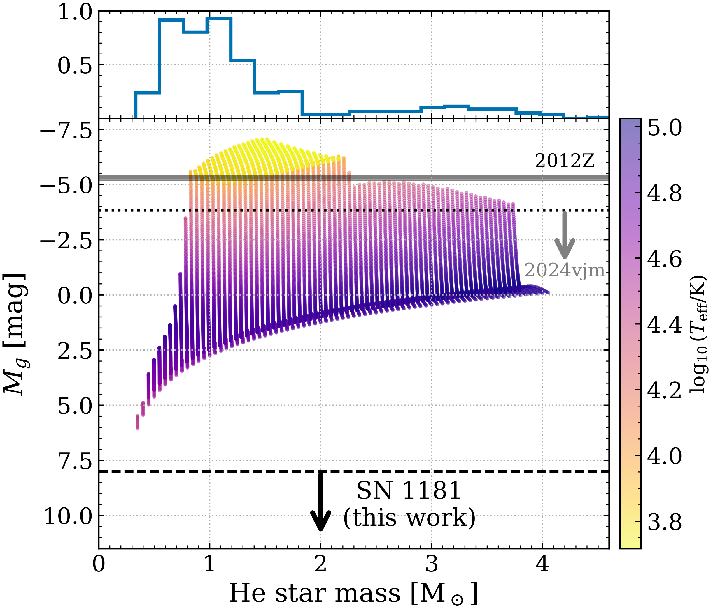
图注：Comparison of our $g$-band magnitude limit to He star companions of WDs predicted from binary evolution models. Top panel shows the histogram of the predicted He star mass, which shows a dearth of stars below $\approx 0.3~M_\odot$. We also show the measured luminosity of the He star companion of SN 2012Z \(\citep{McCully14},\) and a deeper limit for SN 2024vjm \(\citep{Zimmerman26}\) that rules out an SN 2012Z-like companion. Compared to these SNe, our limit from SN 1181 (dashed line) is much deeper thanks to its proximity.
对应解读：建议重点查看的图表 6；关键图表逐图导读图 5；模型拟合段落中“双星演化预测的伴星绝对星等与 Pan-STARRS1 探测极限比较”。
入选理由：这是支撑论文核心排除结论的最关键图：直接把双星演化模型预测的氦星伴星质量和亮度分布，与 SN 1181 的 g 波段观测极限进行比较。日报中特别强调需要检查理论伴星是否整体亮于 Pan-STARRS1 极限，即 Mg≲6.5 mag 与 Mg>8 mag 的余量；该图正对应这一诊断量，比其他候选图更能说明为什么非探测可以排除单简并氦供体通道。
来源与置信度：\(arxiv_source\)；high；\(arxiv_source\) / manuscript.tex:figure[4]
Fig05
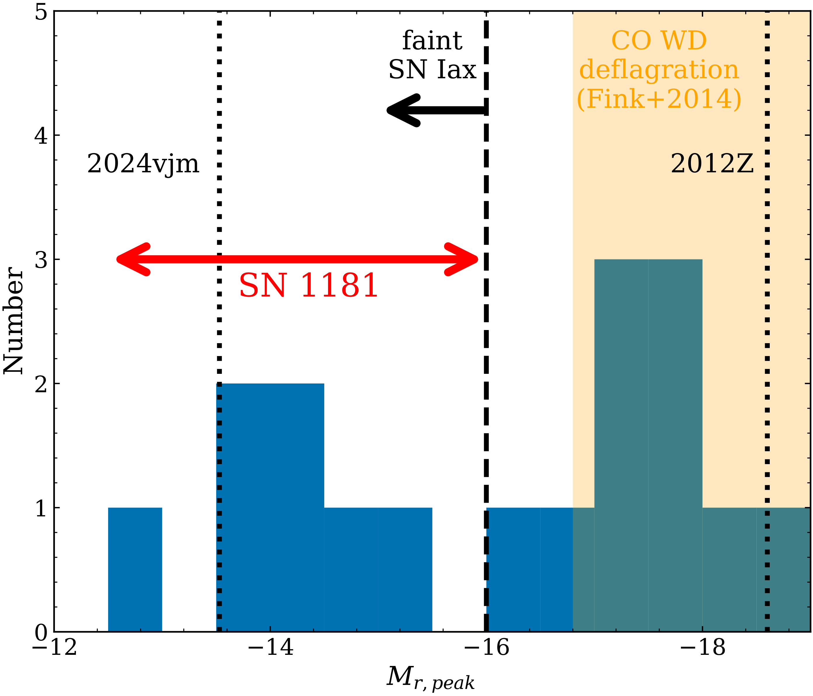
图注：Comparison of the peak $r$-band magnitude of SN 1181 \(\citep\)[based on historical records;][]{Ritter21,Schaefer23} and a sample of SN Iax taken from \(\cite{Zimmerman26}.\) SN 1181 belongs to the ``faint" SN Iax group (based on \citealt{Srivastav_2022MNRAS.511.2708S}), which is not well reproduced by the standard pure deflagration models of CO WDs \(\citep{Fink14}.\) Dotted lines show the peak magnitudes of SN 2012Z and SN 2024vjm.
对应解读：详细解读中关于 SN 1181 属于 faint SN Iax、与 SN 2012Z 和 SN 2024vjm 等 Iax 事件比较，以及多起源通道背景的讨论。
入选理由：该图不直接展示伴星搜索、Gaia 运动学或 SED 拟合，因此与日报建议重点查看图表的匹配度较低；但它提供了 SN 1181 在 Iax 样本中的峰值亮度位置，说明其属于较暗 Iax 群体，并为讨论其是否符合标准纯爆燃模型及为何可能需要双简并通道提供背景支持。
来源与置信度：\(arxiv_source\)；high；\(arxiv_source\) / manuscript.tex:figure[5]
强相关工作
这篇工作与 SN 2012Z 的前爆发图像形成直接对照。SN 2012Z 曾被认为有一个明亮蓝色前身星候选，常被解释为氦星伴星，从而支持单简并氦供体通道。本文对 SN 1181 的非探测则说明，即便两者都属于或类似 Iax 型，也未必来自同一前身星路径。建议检索关键词包括 “SN 2012Z progenitor helium star”, “Type Iax progenitors”, “SN 1181 Pa 30”, “surviving companion Type Iax”。
它也与 Pa 30 和 SN 1181 的同源研究相关，包括对中心星、星云膨胀速度、化学丰度和历史客星位置的研究。这些工作提供了本文采用的距离、年龄、遗迹中心和 Iax 解释背景。相反或存在张力的方向包括：SN 1181 是否一定是 Iax、Pa 30 是否可由其他白矮星并合或特殊热核事件解释、以及双简并并合如何留下观测到的中心残骸。建议检索 “Pa 30 central star”, “SN 1181 supernova remnant”, “Type Iax bound remnant”, “white dwarf merger SN 1181”。
同一事件 / 同类源线索：
相似工作：
基础理论 / 方法工作：
相反观点 / 张力线索：
6. Discovery of Optical Filaments in the North Polar Spur/eROSITA Bubble
- 来源：arXiv / astro-ph.HE
- 链接：https://arxiv.org/abs/2607.19529v1
- 作者：Julian Shapiro
- 评分：novelty 8/10，importance 7/10，relevance 8/10，final 8.65/10
- 推荐理由：发现与北极支/eROSITA bubble 相关的光学丝状结构，并讨论 AGN jet、热吸积流和星形成风模型；对银河中心大尺度高能泡结构起源有较高相关性。
中文题目：北极支与 eROSITA 泡中的光学丝状结构发现
做了什么：这篇文章报告在北极支区域发现与 \(144\,\mathrm{MHz}\) 射电结构相重合的光学丝状发射，谱线包括 \(\mathrm{H}\alpha\)、\([\mathrm{O\,III}]\) 和 \([\mathrm{S\,II}]\)。作者利用 Northern Sky Narrowband Survey 的窄带图像，结合低频射电和 eROSITA 泡的空间结构，指出这些光学丝可能是银河系中心大尺度外流或泡状结构的冷暖相界面信号，而不只是普通高银纬弥散电离气。文章还估算了产生背景扣除后 \(\mathrm{H}\alpha\) 强度所需的能量注入功率，发现星形成驱动风较难满足，而活动星系核喷流、热吸积流或银河中心星形成环模型更有可能。
为什么重要：北极支和 eROSITA 泡是否同属银河中心大尺度爆发遗迹，长期存在争议。过去讨论主要依赖 \(\mathrm{X}\) 射线、微波、伽马射线和射电偏振；本文把 \(\mathrm{H}\alpha\)、\([\mathrm{O\,III}]\)、\([\mathrm{S\,II}]\) 这样的光学冷暖气体诊断加入进来，使我们能从电离、激波和多相介质角度检验泡的起源。若这些丝状结构确实与北极支和 eROSITA 泡相关，它们就是连接热等离子体、宇宙线电子、磁场和温暖电离气的关键观测约束。
理论 / 观测 / 仪器方法价值：观测价值在于给出了一个新的多波段对照目标：窄带光学发射与 \(144\,\mathrm{MHz}\) 同步辐射结构、eROSITA 泡边缘和银河磁化结构之间的相对位置。方法价值在于作者不仅做形态学比对，还用 \(\Delta\)-variance 和功率谱分析量化 \(\mathrm{H}\alpha\) 丝状尺度，并用背景扣除后的 \(\mathrm{H}\alpha\) 强度估算能量需求。理论价值在于这些光学线比单纯的 \(\mathrm{X}\) 射线亮度更直接指向气体密度、电离机制和激波条件，可用于区分活动星系核喷流、热吸积流、星形成环和星形成驱动风等模型。
为什么应该关注：如果你关心银河系中心曾经有多强的反馈活动，这篇文章值得看，因为它把反馈模型的比较落到一个具体可观测量：北极支内光学发射所需的功率 \(P_{\mathrm{req}}\)。如果你做多相星际介质、银河磁场、低频射电或高银纬 \(\mathrm{H}\alpha\) 背景，这篇文章也值得关注，因为它提醒我们一些看似属于普通温暖电离介质的高纬结构，可能和银河尺度外流的边界层或内部磁化丝有关。
展开详细解读：文章讲解、背景、理论、重点章节、图表与相关工作
文章详细讲解
科学问题：北极支 \(\mathrm{NPS}\) 是全天最显眼的银河高纬结构之一，在软 \(\mathrm{X}\) 射线和射电连续谱中都很亮。它究竟是太阳邻近的超新星泡壳、还是银河中心大尺度外流或 eROSITA 泡的一部分，一直没有完全定论。本文的核心问题是：在北极支和 eROSITA 泡区域是否存在可分辨的光学发射丝，并且这些丝是否在空间、谱线性质和能量需求上支持银河中心反馈起源。
作者怎么做：作者检查 Northern Sky Narrowband Survey 中的 \(\mathrm{H}\alpha\)、\([\mathrm{O\,III}]\) 和 \([\mathrm{S\,II}]\) 窄带图像，寻找与北极支区域相对应的低面亮度光学结构。随后把这些光学图像与 \(144\,\mathrm{MHz}\) 低频射电图、eROSITA 泡边缘以及周围银河磁化结构进行空间比对。为避免只凭眼睛判断，作者对 \(\mathrm{H}\alpha\) 图像做了 \(\Delta\)-variance 与功率谱分析，量化丝状结构偏好的角尺度，得到滞后尺度 \(L\approx0.6^{\circ}\) 附近的特征。
关键结果：文章报告的光学丝在 \(\mathrm{H}\alpha\)、\([\mathrm{O\,III}]\) 和 \([\mathrm{S\,II}]\) 中均可见，并且与 \(144\,\mathrm{MHz}\) 结构相当一致。光学和低频射电强度在北极支内部区域达到峰值，而不仅仅是贴着 eROSITA 泡边缘，这暗示发射可能来自内部磁化结构、混合层或旧激波残留，而不是单一薄壳。作者还指出 \([\mathrm{S\,II}]/\mathrm{H}\alpha\) 可能高于典型高银纬温暖电离介质，这在物理上更接近激波、电离前沿或非平衡冷却气体，而不只是普通弥散电离背景。
能量解释：在扣除背景后，作者给出 \(\mathrm{H}\alpha\) 强度 \(I_{\mathrm{H}\alpha}=1.85\pm1.04\,\mathrm{R}\)，并估算维持该发射所需功率约为 \(P_{\mathrm{req}}\approx5\text{--}12\times10^{41}\,\mathrm{erg\,s^{-1}}\)。这个量级对活动星系核喷流模型来说并不困难，对银河中心热吸积流或星形成环模型也可能可行；但对普通星形成驱动风，尤其是持续功率较低的版本，则形成压力。
局限和下一步：本文目前主要是发现和解释性分析，关键物理量仍受距离、三维几何、尘埃消光、背景扣除和谱线校准影响。只有窄带成像时，\([\mathrm{S\,II}]/\mathrm{H}\alpha\) 的物理解释还不如积分场或长缝光谱稳健。下一步最重要的是取得绝对定标良好的光谱，测量 \([\mathrm{N\,II}]\)、\([\mathrm{O\,III}]\)、\([\mathrm{S\,II}]\) 双线比、速度场和线宽，并与 \(\mathrm{X}\) 射线温度、低频射电谱指数、偏振和法拉第旋转联合建模。
关键结果是怎么做出来的
数据和样本选择方面，本文聚焦于北极支和 eROSITA 泡北部相关区域，而不是做全天盲搜。核心光学数据来自 Northern Sky Narrowband Survey 的窄带成像，作者检查 \(\mathrm{H}\alpha\)、\([\mathrm{O\,III}]\) 和 \([\mathrm{S\,II}]\) 通道，并将其与 \(144\,\mathrm{MHz}\) 低频射电图进行对齐比较。样本意义上的“事件数”不是瞬变事件，而是一组在天球上连贯分布的低面亮度丝状发射结构；结论依赖这些结构在多个谱线和射电图中的空间一致性。
最重要的形态学证据是：光学发射不是随机分布的高银纬斑块，而是呈现丝状、弧状或局部增强结构，并与北极支内部的 \(144\,\mathrm{MHz}\) 发射峰相伴。文章特别强调光学和射电发射在北极支内部某一区域达到峰值，同时在 eROSITA 泡边缘也有较弱信号。这个相对位置很关键，因为如果只是前景温暖电离介质，未必会自然追踪低频同步辐射和泡状边界。
统计量方面，作者使用 \(\Delta\)-variance 和功率谱分析来量化 \(\mathrm{H}\alpha\) 图像中的结构尺度。结论是北极支 \(\mathrm{H}\alpha\) 发射偏好滞后尺度 \(L\approx0.6^{\circ}\) 的丝状结构。这里的显著性不是粒子物理式的单一 \(\sigma\) 声明，而是通过空间统计诊断显示某一角尺度的结构功率相对背景和其他尺度更突出；读者应重点检查作者如何定义分析区域、背景区域、掩膜和滤波尺度。
能量论证的证据链从背景扣除后的 \(\mathrm{H}\alpha\) 强度 \(I_{\mathrm{H}\alpha}=1.85\pm1.04\,\mathrm{R}\) 出发。作者把该强度转换为发射量和复合光度，再估算产生这些光学发射所需的功率 \(P_{\mathrm{req}}\approx5\text{--}12\times10^{41}\,\mathrm{erg\,s^{-1}}\)。这一范围随后与不同银河中心反馈模型的可用功率比较：活动星系核喷流明显足够，热吸积流和星形成环有可能，星形成驱动风则较不利。
主要系统误差包括窄带图像的绝对零点、地气辉和散射光残留、尘埃消光、\([\mathrm{N\,II}]\) 对 \(\mathrm{H}\alpha\) 滤波器的污染、前景温暖电离介质的空间起伏，以及北极支距离的不确定性。稳健性应看作者是否在不同背景选择、不同空间滤波和不同波段对照下得到一致的丝状结构。若同一结构在 \(\mathrm{H}\alpha\)、\([\mathrm{S\,II}]\)、\([\mathrm{O\,III}]\) 和 \(144\,\mathrm{MHz}\) 中都出现，且不与明显恒星残留或成像伪影重合，解释就更可信。
展开背景、理论、公式、模型、章节和图表导读
背景知识
北极支是银河高纬天空中最著名的弧状结构之一，在软 \(\mathrm{X}\) 射线和射电图上表现为从银道面向北延伸的大弧。由于它投影面积巨大，早期研究常把它与本地泡、Loop \(\mathrm{I}\) 或邻近超新星活动联系起来。另一种观点则认为北极支是银河中心活动产生的大尺度泡或外流的一部分，只是投影后看起来像局部环。
过去十多年，Fermi 泡和 eROSITA 泡使这个问题重新变得尖锐。Fermi 泡在伽马射线中显示银河中心上下方的双叶结构，eROSITA 又在软 \(\mathrm{X}\) 射线中揭示更大的泡状外壳。北极支在位置和形态上与这些结构的北部边缘或内部区域相近，因此它可能记录了银河中心过去的能量释放、冲击波传播和宇宙线输运。
光学窄带发射在这个问题中很有价值。软 \(\mathrm{X}\) 射线主要追踪 \(\sim10^{6}\,\mathrm{K}\) 热等离子体，低频射电追踪宇宙线电子和磁场，而 \(\mathrm{H}\alpha\)、\([\mathrm{S\,II}]\)、\([\mathrm{O\,III}]\) 则追踪 \(\sim10^{4}\,\mathrm{K}\) 电离气体以及激波或光电离条件。若这些相位共存并在空间上相互贴合，就说明北极支不是单相热泡，而是多相、磁化、可能含有混合层和冷却界面的结构。
现在值得重新看，是因为全天或大天区的窄带成像、低频射电巡天和 eROSITA 数据已经足以做细致的多波段形态学比较。过去光学发射可能被视作高银纬温暖电离介质背景的一部分，或者因面亮度低而未被系统注意。本文的贡献就是把这些微弱丝状结构从背景中识别出来，并把它们放回银河反馈的大框架中。
该领域一个常见误区是把北极支的“近距离解释”和“银河中心解释”看成非此即彼。实际天空投影可能同时包含本地前景、银河盘气体、halo 结构和远处泡壳，单一波段很容易误判。另一个误区是认为 \(\mathrm{H}\alpha\) 一定意味着普通恒星光电离；在高纬、低密度、与同步辐射相伴的环境中，激波、电离回声、湍流混合层和传导界面都可能贡献光学线。
基础理论 / 方法脉络
物理图像从三种相位开始：热 \(\mathrm{X}\) 射线气体、产生同步辐射的相对论电子和磁场、以及发出光学禁线和复合线的温暖电离气体。北极支若是银河中心外流的一部分，外流冲击或压缩 halo 气体，会形成热壳层；磁场被拉伸或压缩后增强同步辐射；冷暖云或界面被电离后产生 \(\mathrm{H}\alpha\)、\([\mathrm{S\,II}]\) 和 \([\mathrm{O\,III}]\)。
\(\mathrm{H}\alpha\) 是氢复合线，强度主要与电子和质子密度平方的视线积分有关，因此对密度增强、冷却层和小尺度团块特别敏感。相比之下，\([\mathrm{S\,II}]\) 和 \([\mathrm{O\,III}]\) 是碰撞激发禁线，对温度、电离态和激波速度更敏感。\([\mathrm{S\,II}]/\mathrm{H}\alpha\) 偏高常被用作激波或低电离参数环境的经验指标，但它也受金属丰度、密度、消光和滤波器污染影响。
低频 \(144\,\mathrm{MHz}\) 射电辐射通常来自相对论电子在磁场中的同步辐射。低频图像对老年宇宙线电子、扩展磁化结构和低表面亮度弥散辐射较敏感。若光学丝与 \(144\,\mathrm{MHz}\) 峰值重合，可能表示磁场压缩和气体压缩共存，也可能表示同一外流结构中不同相位的投影重合。
本文使用的关键观测逻辑是形态学一致性加能量可行性。形态学一致性要求光学丝与射电、\(\mathrm{X}\) 射线泡边缘或磁化结构有空间对应；能量可行性则要求某个反馈机制能提供足够功率来维持观测到的 \(\mathrm{H}\alpha\) 发射。由于距离和几何不确定，功率估计不是唯一解，但可以排除明显能量不足的模型。
主要退化关系包括距离与光度的平方关系、电子密度与路径长度在发射量中的退化、\(\mathrm{H}\alpha\) 背景扣除与真实低面亮度发射的退化，以及前景温暖电离介质和远处泡结构的投影混淆。系统误差还包括窄带定标、尘埃消光、星光残留、地气辉、滤波器带宽内 \([\mathrm{N\,II}]\) 混入，以及大尺度图像处理对功率谱的影响。
公式与推导
第一步是把窄带观测强度写成沿视线的体发射率积分。对任意谱线 \(\ell\)，有
其中 \(I_{\ell}\) 是单位立体角强度，\(j_{\ell}\) 是体发射率，\(s\) 是视线坐标。这个式子说明窄带图像测到的是三维发射结构的投影。
对 \(\mathrm{H}\alpha\) 复合线，在近似 Case \(\mathrm{B}\) 且温度 \(T\sim10^{4}\,\mathrm{K}\) 时，体发射率可写为
其中 \(n_{e}\) 是电子密度，\(n_{p}\) 是质子密度，\(\alpha_{\mathrm{eff}}^{\mathrm{H}\alpha}\) 是有效复合系数，\(h\nu_{\mathrm{H}\alpha}\) 是单个 \(\mathrm{H}\alpha\) 光子的能量。
常用的发射量定义为
在完全电离氢气且 \(n_{e}\approx n_{p}\) 时，\(\mathrm{H}\alpha\) 强度近似满足
其中 \(1\,\mathrm{R}=10^{6}/(4\pi)\,\mathrm{photons\,cm^{-2}\,s^{-1}\,sr^{-1}}\)。这一步把本文报告的 \(I_{\mathrm{H}\alpha}=1.85\pm1.04\,\mathrm{R}\) 转换为气体密度平方的视线积分。
若发射区域距离为 \(D\)、覆盖立体角为 \(\Omega\)，背景扣除后的线光度可估计为
这里 \(F_{\mathrm{H}\alpha}=\Omega I_{\mathrm{H}\alpha}\) 是积分通量。这个关系显示距离是能量预算中最大的几何杠杆之一。
若用机械功率或电离功率来维持光学发射，可把需求写成
其中 \(L_{\mathrm{cool}}\) 是相关冷却或辐射功率，\(\epsilon_{\mathrm{H}\alpha}\) 是进入 \(\mathrm{H}\alpha\) 线的效率。本文给出的 \(P_{\mathrm{req}}\approx5\text{--}12\times10^{41}\,\mathrm{erg\,s^{-1}}\) 本质上就是把观测线强度、几何和辐射效率折算为反馈源必须提供的功率。
对于低频射电，同步辐射的局部发射率可用标度式表示为
其中 \(N(E)=N_{0}E^{-p}\) 是相对论电子能谱，\(B_{\perp}\) 是垂直于视线的磁场分量，\(\nu\) 是频率。光学丝与 \(144\,\mathrm{MHz}\) 结构相伴，说明 \(n_{e}^{2}\) 增强区域可能与 \(N_{0}\) 或 \(B_{\perp}\) 增强区域共处。
\(\Delta\)-variance 可理解为图像 \(f(\boldsymbol{x})\) 与尺度 \(L\) 的小波滤波核 \(\psi_{L}\) 卷积后的方差：
若 \(\sigma_{\Delta}^{2}(L)\) 在 \(L\approx0.6^{\circ}\) 附近增强，就表示该角尺度的丝状或团块结构贡献了较多空间功率。
等价地，二维功率谱可写为
其中 \(\tilde{f}(\boldsymbol{k})\) 是图像傅里叶变换，\(k\sim1/L\) 是角波数。功率谱和 \(\Delta\)-variance 共同帮助区分真实空间结构与白噪声、扫描条纹或平滑大尺度背景。
若比较不同反馈模型，可用简单的能量判据
其中 \(P_{\mathrm{model}}\) 是模型可提供的机械或辐射功率，\(\eta\) 是耦合到相关气体相位的效率，\(\Delta t\) 是活动持续时间。本文的结论是活动星系核喷流模型满足该不等式较容易，而星形成驱动风通常更吃紧。
模型拟合 / 应用方法
本文不是传统意义上对单一光谱模型做多参数拟合，而是由图像测量、空间统计和能量估算组成的观测解释链。直接拟合量包括背景扣除后的 \(\mathrm{H}\alpha\) 面亮度、不同窄带图像中的结构位置、\(\Delta\)-variance 或功率谱中的特征尺度，以及与 \(144\,\mathrm{MHz}\) 图像的空间对应关系。读者应把它理解为低面亮度结构识别和物理归因问题，而不是高信噪比谱线拟合问题。
参数估计中最敏感的是背景模型。高银纬 \(\mathrm{H}\alpha\) 天空包含温暖电离介质、地气辉残留、尘埃散射光和可能的局部结构。若背景区域选得过近，可能减掉真实的扩展泡发射；若选得过远，又可能引入银河纬度梯度。因而 \(I_{\mathrm{H}\alpha}=1.85\pm1.04\,\mathrm{R}\) 的不确定度应被看作统计噪声和系统背景不确定度共同作用的结果。
空间统计的拟合逻辑是检查图像结构在尺度空间中的功率分布。若真实丝状结构存在，\(\Delta\)-variance 会在特定滞后尺度增强，功率谱也会偏离简单噪声或平滑湍流背景。这里的退化包括图像掩膜、恒星残留、边界效应和滤波核选择。读者应特别看作者是否对不同区域、不同掩膜和不同背景处理重复分析。
能量模型的参数退化更强。由 \(\mathrm{H}\alpha\) 强度到 \(P_{\mathrm{req}}\) 的转换依赖距离 \(D\)、覆盖面积 \(\Omega\)、消光修正、线辐射效率和三维填充因子。如果北极支距离较近，所需光度会下降；如果它位于银河中心尺度，所需功率就更高，也更能检验银河中心反馈模型。本文倾向把结构放在 eROSITA 泡语境下解释，因此功率比较主要针对银河中心活动模型。
模型可能失败的地方也很清楚：光学丝可能是前景局部结构，与 eROSITA 泡只是投影重合；\([\mathrm{S\,II}]/\mathrm{H}\alpha\) 的升高可能来自校准或滤波器污染，而不是激波；\(144\,\mathrm{MHz}\) 对应关系可能受大尺度射电背景和成像系统误差影响。最有效的检验是获取速度分辨光谱和偏振射电数据：若光学气体速度、线宽和电离诊断与银河中心外流速度场一致，模型会显著增强；若速度接近本地气体，则前景解释更有力。
重点章节 / 结果段落怎么读
数据和发现部分应首先阅读。这里要关注作者如何从 Northern Sky Narrowband Survey 中识别 \(\mathrm{H}\alpha\)、\([\mathrm{O\,III}]\) 和 \([\mathrm{S\,II}]\) 丝状结构，图像是否经过连续谱扣除、平滑、背景校正或恒星掩膜处理。对低面亮度发现而言，处理流程往往和发现本身同样重要。
多波段对照部分是全文的核心。读者应检查光学丝与 \(144\,\mathrm{MHz}\) 射电结构、eROSITA 泡边缘、北极支软 \(\mathrm{X}\) 射线结构以及银河磁化结构的相对位置。重点不是“看起来像不像”，而是峰值、边缘、弧线方向和内部结构是否在多个波段中一致。
空间统计部分应看 \(\Delta\)-variance 和功率谱。这里的重点是 \(L\approx0.6^{\circ}\) 的尺度偏好是否显著、是否依赖分析区域、是否可能由边界或滤波造成。若论文给出不同区域或不同波段的对照图，应优先看北极支区域与背景区域之间的差别。
谱线比和物理解释部分应谨慎阅读。作者提到 \([\mathrm{S\,II}]/\mathrm{H}\alpha\) 可能高于典型高银纬温暖电离介质，这支持激波或特殊电离条件，但窄带成像的线比容易受定标、滤波器带宽和 \([\mathrm{N\,II}]\) 污染影响。读者应把它当作强提示，而不是最终光谱诊断。
能量预算和模型比较部分决定本文对银河中心反馈的意义。重点看 \(P_{\mathrm{req}}\approx5\text{--}12\times10^{41}\,\mathrm{erg\,s^{-1}}\) 是如何从 \(I_{\mathrm{H}\alpha}\) 推出，采用了哪些几何、距离和效率假设，以及它与活动星系核喷流、热吸积流、星形成环和星形成驱动风模型的功率范围如何比较。
建议重点查看的图表
-
光学窄带发现图：检查 \(\mathrm{H}\alpha\)、\([\mathrm{O\,III}]\) 和 \([\mathrm{S\,II}]\) 图像中丝状结构是否在同一位置出现，是否可能是恒星残留、平场误差或扫描伪影。
-
光学与 \(144\,\mathrm{MHz}\) 叠加图：重点看射电等值线是否沿光学丝延伸，峰值是否真正重合，还是只在大尺度上相近。
-
光学结构与 eROSITA 泡边缘图：检查光学峰值位于泡边缘、内部还是外部；这个位置关系直接影响薄壳、内部混合层和前景结构三种解释。
-
\(\Delta\)-variance 曲线：看 \(L\approx0.6^{\circ}\) 附近是否有清晰增强，误差条或背景对照是否支持该尺度偏好。
-
二维或一维功率谱：看北极支区域的空间功率是否不同于普通高纬背景，以及高波数端是否受噪声主导。
-
谱线比或强度剖面图：检查 \([\mathrm{S\,II}]/\mathrm{H}\alpha\) 是否系统偏高，还是只在低信噪比区域出现。
-
能量预算表或模型比较图：看 \(P_{\mathrm{req}}\) 的误差范围是否与各模型功率范围真正分离，尤其是星形成驱动风被排斥的程度是否依赖乐观或保守假设。
关键图表逐图导读
图 1：应是发现型的光学窄带图或多面板图。横纵轴通常为银河坐标或赤道坐标，颜色表示 \(\mathrm{H}\alpha\)、\([\mathrm{O\,III}]\) 或 \([\mathrm{S\,II}]\) 面亮度。读图时要看丝状结构是否跨越多个相邻像素和多个窄带通道，而不是单通道噪声。陷阱是窄带图中亮星残留和大尺度背景梯度很容易伪装成弧状结构。
图 2：很可能是光学发射与 \(144\,\mathrm{MHz}\) 射电等值线的叠加。坐标仍为空间坐标，底图为光学强度，等值线为低频射电亮度。关键结论是光学丝和同步辐射结构在北极支内部区域共同增强。读图陷阱是低分辨率射电图的等值线会显得平滑，不能把粗略重合过度解释为逐像素相关。
图 3：若展示 eROSITA 泡边缘或北极支大尺度环境，重点看光学丝相对于泡边界的位置。若光学信号在边缘较弱、内部更强，就不太像简单的单一薄壳边界发射，而可能涉及内部磁化结构或投影。陷阱是泡边缘本身的定义依赖 \(\mathrm{X}\) 射线图像处理和能段选择。
图 4：\(\Delta\)-variance 诊断图通常以滞后尺度 \(L\) 为横轴，以 \(\sigma_{\Delta}^{2}(L)\) 或归一化方差为纵轴。应关注 \(L\approx0.6^{\circ}\) 的峰或拐点是否高于背景区域和误差范围。陷阱是图像边界、掩膜和滤波核可在特定尺度引入人工特征。
图 5：功率谱图通常以角波数 \(k\) 或对应角尺度为横轴，以 \(P(k)\) 为纵轴。北极支区域若在某些尺度上比对照背景有更高功率，说明存在真实结构。读图时要分清大尺度背景梯度、丝状结构和小尺度噪声分别控制哪一段谱。
图 6：能量预算或模型比较图若存在，横轴可能是不同反馈模型，纵轴为功率或能量注入率。关键是 \(P_{\mathrm{req}}\approx5\text{--}12\times10^{41}\,\mathrm{erg\,s^{-1}}\) 与各模型范围的相对位置。陷阱是模型功率范围常跨越数个数量级，不能只看中心值；耦合效率和持续时间同样重要。
论文原图 / 可嵌入图片
Fig03
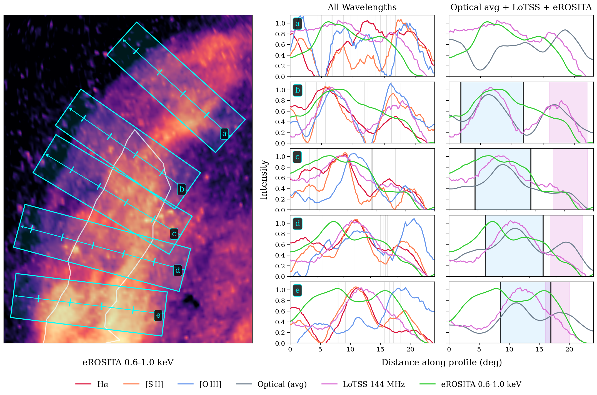
图注：Multiwavelength profiles (a-e) of the North Polar Spur in H$\alpha$, [O\,{\(\sc\) iii}], and [S\,{\(\sc\) ii}] (Northern Sky Narrowband Survey), $144\,\mathrm{MHz}$ (LoTSS), and $0.6\mathrm{-}1.0\,\mathrm{keV}$ (eROSITA, left image). The magnetized Galactic structure \(\citep{Zhang2024}\) is shown in white. The first column shows the intensities of all wavelengths normalized to their peaks in the profiles. The right column displays the averaged optical data with LoTSS and eROSITA, and highlighted regions for the inner emission peak (blue) and eROSITA bubble edge (purple). All points from the magnetized structure are shown as faint gray lines in the left column, and averages of the clustered points are shown on the right as bold lines defining the inner region.
对应解读：对应“光学与144 MHz叠加图”“光学结构与eROSITA泡边缘图”，以及关键图表逐图导读中的图2、图3和多波段空间对应关系段落。
入选理由：这张图同时给出Hα、[O III]、[S II]、144 MHz和eROSITA X射线的空间剖面，并标出内部发射峰与eROSITA泡边缘，是判断光学丝、低频射电结构和X射线泡边界是否真正共位的最核心证据。它直接支撑日报中关于“峰值位于北极支内部而非仅贴泡边缘”的关键解释，比单纯发现图更能检验物理归因。
来源与置信度：\(arxiv_source\)；high；\(arxiv_source\) / sample701.tex:figure[3]
Fig02
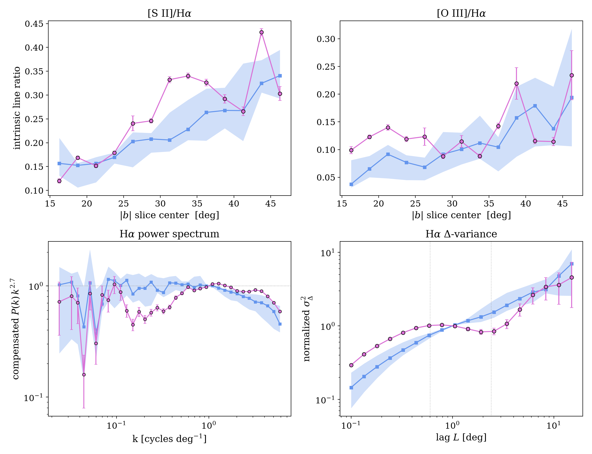
图注：$\text{[S\,{\sc ii}]}/\mathrm{H}\alpha$ (top left) and $\text{[O\,{\sc iii}]}/\mathrm{H}\alpha$ (top right) line ratios of the NPS (purple) and comparison WIM regions (blue) by Galactic latitude. The H$\alpha$ power spectrum and $\Delta$-variance are displayed on the bottom left and right, respectively. Error bars are statistical uncertainty, and do not include an additional $\sim15\%$ systematic uncertainty.
对应解读：对应“Δ-variance曲线”“二维或一维功率谱”“谱线比或强度剖面图”，以及关键图表逐图导读中的图4、图5和[S II]/Hα诊断讨论。
入选理由：这张图集中展示[S II]/Hα、[O III]/Hα随银纬变化、Hα功率谱和Δ-variance，是本文从目视发现转向定量诊断的关键图。它可以同时检查L≈0.6°尺度增强是否存在、北极支与普通WIM区域是否不同，以及线比升高是否系统性成立。
来源与置信度：\(arxiv_source\)；high；\(arxiv_source\) / sample701.tex:figure[2]
Fig01
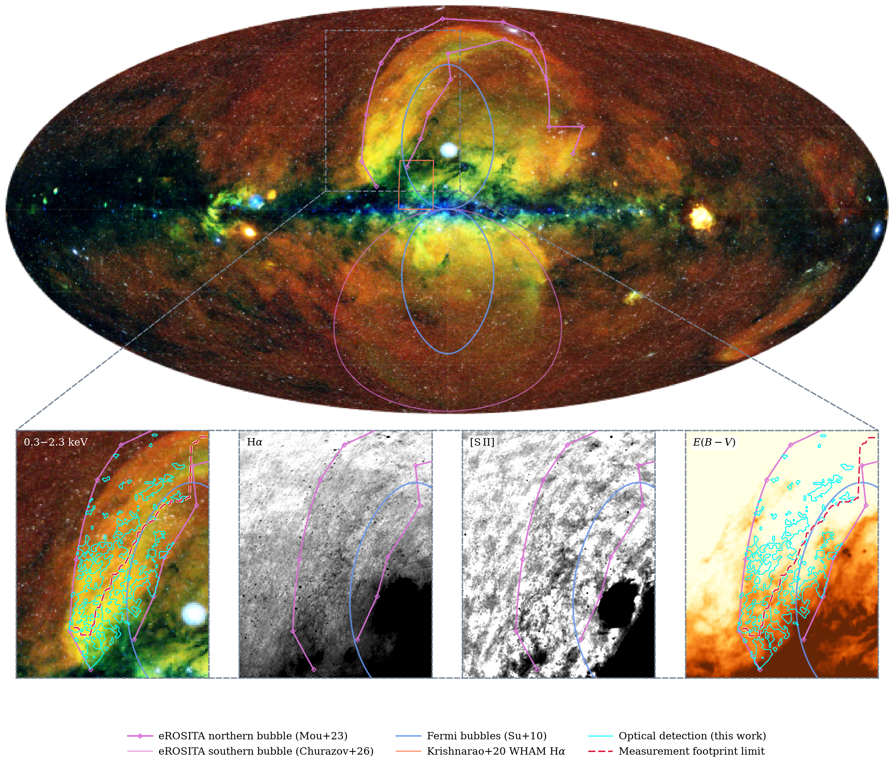
图注：All-sky map in eROSITA $0.3\mathrm{-}2.3\,\mathrm{keV}$ (top; \citealt{Predehl2020}) with the geometry of the eROSITA bubbles \(\citep{Mou2023, churazov2026southernerositabubbleforward}\) and approximate extent of the Fermi bubbles \(\citep{Su_2010}\) highlighted. The orange box shows the coverage of the Fermi bubbles analyzed in WHAM H$\alpha$ by \(\citet{Krishnarao_2020}.\) The bottom row displays cutouts of the North Polar Spur in eROSITA $0.3\mathrm{-}2.3\,\mathrm{keV}$, NSNS H$\alpha$, NSNS [S\,{\(\sc\) ii}], and $E(B-V)$ from \(\citet{Green_2019}.\) The cyan contours show the optical consensus mask in the eROSITA bubble, and the dashed red line marks the lower boundary of the footprint for all measurements, based on the Haslam mask overlap.
对应解读：对应“光学窄带发现图”“光学结构与eROSITA泡边缘图”，以及关键图表逐图导读中的图1和图3。
入选理由：这张图提供全天eROSITA泡几何背景，并在北极支局部展示eROSITA、NSNS Hα、NSNS [S II]和尘埃消光图，是确认光学丝状结构位置、排查尘埃相关伪影、理解其相对eROSITA泡边界位置的基础发现图。
来源与置信度：\(arxiv_source\)；high；\(arxiv_source\) / sample701.tex:figure[1]
Fig04
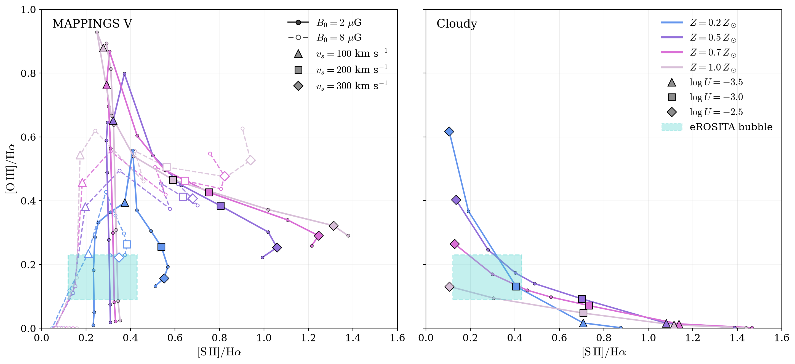
图注：MAPPINGS V shock models (left) and Cloudy photoionization models (right) of the NPS. The lines are colorized by input metallicity $Z$ values. MAPPINGS V is run for two $B_0$ values $2\,\mu G$ and $8\,\mu G$, which is not well constrained for the NPS. The model curves vary significantly with their input $Z$ and $B$ parameters. Symbols represent the $v_s$ values for model points in MAPPINGS V and the ionization parameter $\log U$ in Cloudy. The full range of NSNS measurement ratios of the NPS in the eROSITA bubbles is shown in cyan.
对应解读：对应模型拟合与物理解释段落中关于[S II]/Hα升高、激波/photoionization解释和线比模型退化的讨论。
入选理由：这张图把NPS观测线比与MAPPINGS V激波模型和Cloudy光电离模型比较，能支撑日报中关于激波、电离前沿或非平衡冷却气体解释的讨论。虽然它不是能量预算图，也不直接展示P_req模型功率比较，但对理解线比的物理含义和模型参数退化很有价值。
来源与置信度：\(arxiv_source\)；high；\(arxiv_source\) / sample701.tex:figure[4]
强相关工作
这篇工作与 Fermi 泡和 eROSITA 泡研究直接相关。同类研究通常使用伽马射线、软 \(\mathrm{X}\) 射线、微波 haze、低频射电和偏振数据来约束银河中心反馈；本文的新增点是把光学窄带丝状发射作为多相介质证据。建议检索关键词包括 “North Polar Spur optical filaments”、“eROSITA bubbles North Polar Spur”、“Fermi bubbles multiwavelength”、“Galactic center outflow H alpha”、“Loop I NPS distance”。
它也与北极支距离争议和本地泡模型有关。相反观点通常认为北极支主要是本地 Loop \(\mathrm{I}\) 或邻近超新星遗迹相关结构，而非银河中心泡。本文并未完全终结距离争议，但通过能量预算和多波段空间对应加强了银河中心反馈解释的可检验性。后续若有速度分辨光谱、吸收线距离限制或三维尘埃消光对照，将能直接检验这些光学丝属于本地前景还是远处 halo 结构。
同一事件 / 同类源线索：
- https://arxiv.org/abs/2607.19529
- https://arxiv.org/pdf/2607.19529
- https://arxiv.org/abs/1005.5480
- https://arxiv.org/abs/2009.13983
相似工作：
基础理论 / 方法工作：
相反观点 / 张力线索：
（未提供）
说明
评分由 LLM 给出初评，再由本地阈值策略过滤；IACT、TeV 伽马射线和高能中微子天文学按重点方向处理。